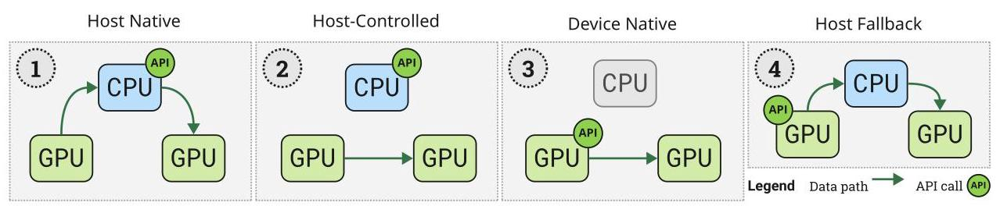
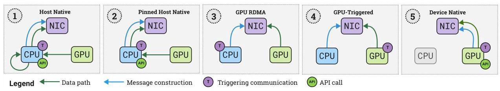
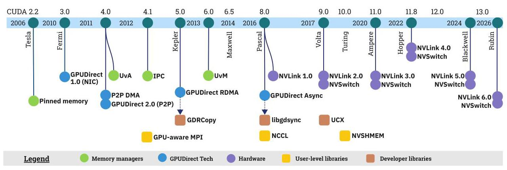
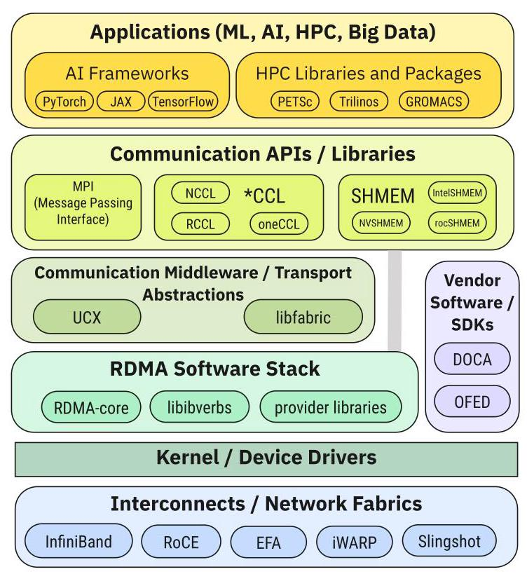
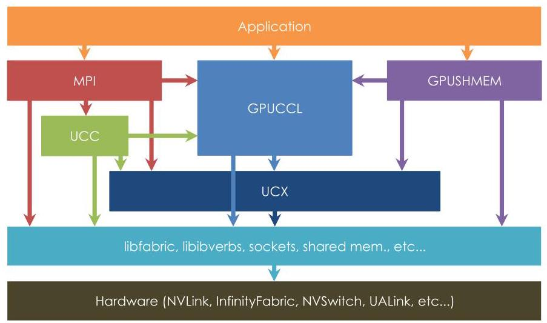

Translated
The Landscape of GPU-Centric Communication
DIDEM UNAT, Koç University, Turkey
迪德姆·乌纳特，土耳其科奇大学
ILYAS TURIMBETOV, Koç University, Turkey
伊利亚斯·图里姆别托夫，土耳其科奇大学
MOHAMMED KEFAH TAHA ISSA, Koç University, Turkey
MOHAMMED KEFAH TAHA ISSA，土耳其科奇大学
DOĞAN SAĞBILI, Koç University, Turkey
多安·萨厄比尔，土耳其科奇大学
FLAVIO VELLA, University of Trento, Italy
弗拉维奥·维拉，意大利特伦托大学
DANIELE DE SENSI, Sapienza University of Rome, Italy
丹尼尔·德·森西，意大利罗马大学
ISMAYIL ISMAYILOV, Koç University, Turkey
伊斯玛伊尔·伊斯玛伊洛夫，土耳其科奇大学
In recent years, GPUs have become the preferred accelerators for HPC and ML applications due to their parallelism and high memory bandwidth. While GPUs boost computation, inter-GPU communication can create scalability bottlenecks, especially as the number of GPUs per node and cluster grows. Traditionally, the CPU managed multi-GPU communication, but advancements in GPU-centric communication now challenge this CPU dominance by reducing its involvement, granting GPUs more autonomy in communication tasks, and addressing mismatches in multi-GPU communication and computation.
近年来，GPU凭借其并行处理能力和高内存带宽，已成为高性能计算（HPC）和机器学习（ML）应用的首选加速器。虽然GPU提升了计算效率，但GPU间通信可能成为可扩展性瓶颈，尤其是随着每个节点和集群中GPU数量的增加。传统上，CPU负责管理多GPU通信，但以GPU为中心的通信技术的进步，通过减少CPU的参与，赋予GPU在通信任务中更大的自主权，并解决多GPU通信与计算之间的不匹配问题，正在挑战CPU的这一主导地位。
This paper provides a landscape of GPU-centric communication, focusing on vendor mechanisms and user-level library supports. It aims to clarify the complexities and diverse options in this field, define the terminology, and categorize existing approaches within and across nodes. The paper discusses vendor-provided mechanisms for communication and memory management in multi-GPU execution and reviews major communication libraries, their benefits, challenges, and performance insights. Then, it explores key research paradigms, future outlooks, and open research questions. By extensively describing GPU-centric communication techniques across the software and hardware stacks, we provide researchers, programmers, engineers, and library designers insights on how to exploit multi-GPU systems at their best.
本文提供了以 GPU 为中心的通信概览，重点关注厂商机制和用户级库支持。它旨在阐明该领域的复杂性和多种选择，定义术语，并对节点内和跨节点的现有方法进行分类。本文讨论了多 GPU 执行中厂商提供的通信和内存管理机制，并回顾了主要的通信库、它们的优点、挑战及性能见解。随后，探讨了关键的研究范式、未来展望和开放研究问题。通过广泛描述跨软件与硬件栈的以 GPU 为中心的通信技术，我们为研究人员、程序员、工程师和库设计者提供了如何充分利用多 GPU 系统的见解。
CCS Concepts: \(\bullet\) Networks \(\rightarrow\) Programming interfaces; \(\bullet\) Computing methodologies \(\rightarrow\) Parallel programming languages; \(\bullet\) Hardware \(\rightarrow\) Communication hardware, interfaces and storage; \(\bullet\) Computer systems organization \(\rightarrow\) Single instruction, multiple data.
CCS 概念：\(\bullet\) 网络 \(\rightarrow\) 编程接口；\(\bullet\) 计算方法学 \(\rightarrow\) 并行编程语言；\(\bullet\) 硬件 \(\rightarrow\) 通信硬件、接口与存储；\(\bullet\) 计算机系统组织 \(\rightarrow\) 单指令多数据。
Additional Key Words and Phrases: GPUs, communication, MPI, NVSHMEM, NCCL, RCCL, Peer-to-peer Communication, Collective Communication, GPUDirect Technologies.
额外关键词与短语：GPU，通信，MPI，NVSHMEM，NCCL，RCCL，点对点通信，集合通信，GPUDirect 技术。
ACM Reference Format:
Didem Unat, Ilyas Turimbetov, Mohammed Kefah Taha Issa, Doğan Sagbili, Flavio Vella, Daniele De Sensi, and Ismayil Ismayilov. 2026. The Landscape of GPU-Centric Communication. ACM Comput. Surv. 1, 1, Article 1 (April 2026), 37 pages. https://doi.org/XXXXXX.XXXXXXX
Didem Unat, Ilyas Turimbetov, Mohammed Kefah Taha Issa, Doğan Sagbili, Flavio Vella, Daniele De Sensi, 和 Ismayil Ismayilov. 2026. GPU 中心化通信全景概览. ACM Comput. Surv. 1, 1, 第 1 章 (2026 年 4 月), 37 页. https://doi.org/XXXXXX.XXXXXXX
Permission to make digital or hard copies of all or part of this work for personal or classroom use is granted without fee provided that copies are not made or distributed for profit or commercial advantage and that copies bear this notice and the full citation on the first page. Copyrights for components of this work owned by others than ACM must be honored. Abstracting with credit is permitted. To copy otherwise, or republish, to post on servers or to redistribute to lists, requires prior specific permission and/or a fee. Request permissions from permissions@acm.org.
允许个人或课堂使用而制作本作品全部或部分的数字或硬拷贝，无需付费，前提是这些拷贝不用于盈利或商业目的，且拷贝须附有本声明及首页的完整引用。本作品中非 ACM 所有组成部分的版权必须得到尊重。允许附带致谢的摘要使用。以其他方式复制、重新发布、上传至服务器或分发给列表，均需事先获得特定许可和/或支付费用。请向 permissions@acm.org 申请许可。
© 2026 Association for Computing Machinery.
© 2026 美国计算机协会。
Manuscript submitted to ACM
本综述全面描绘了以 GPU 为中心的通信图景，该通信被定义为减少多 GPU 执行中 CPU 参与的机制。它根据 API 位置、数据路径和触发职责，将通信方法分类为节点内（主机原生、主机控制、设备原生、主机回退）和节点间（主机原生、固定主机、GPU RDMA、GPU 触发、设备原生）类型。
本文回顾了实现直接 GPU 到 GPU 和 GPU 到 NIC 传输的供应商机制（固定内存、UVA、IPC、UVM、GPUDirect 1.0/P2P/RDMA/Async、GPUNetIO）和现代互连（NVLink、Infinity Fabric、Xe-Link）。然后分析了三大类用户级库：GPU 感知 MPI、以 GPU 为中心的集合通信库（NCCL、RCCL、oneCCL）和以 GPU 为中心的 OpenSHMEM（NVSHMEM、ROC_SHMEM、Intel SHMEM）。从流支持、主机端与设备端 API、编程模型以及点到点和集合操作的性能等方面对这些库进行了比较。
关键发现表明，以 GPU 为中心的通信可以消除主机瓶颈，实现细粒度和持久内核模式，并改善强扩展性。然而，仍然存在挑战：计算与通信之间的资源争用、性能分析和调试工具的不足、对称堆要求以及异构拓扑的集合通信算法设计。研究方向包括完全无 CPU 网络、基于 UCX 的可移植性、压缩加速的集合通信以及更广泛的 GPU 自主性，同时承认 CPU 在系统管理中的持续作用。本文为工程师和研究人员导航复杂且不断演变的多 GPU 通信生态系统提供了参考。
稿件已提交至 ACM
Authors' addresses: Didem Unat, Koç University, Istanbul, Turkey, dunat@ku.edu.tr, Ilyas Turimbetov, Koc University, Istanbul, Turkey, iturimbetov18@ ku.edu.tr; Mohammed Kefah Taha Issa, Koc University, Istanbul, Turkey, MISSA18@ku.edu.tr; Dogan Sagbili, Koc University, Istanbul, Turkey, dsagbili17@ ku.edu.tr; Flavio Vella, University of Trento, Trento, Italy, flavio.vella@unitn.it; Daniele De Sensi, Sapienza University of Rome, Rome, Italy, desensi@di.uniroma1.it; Ismayil Ismayilov, Koç University, Istanbul, Turkey, iismayilov21@ku.edu.tr.
作者地址：迪德姆·乌纳特，科奇大学，伊斯坦布尔，土耳其，dunat@ku.edu.tr；伊利亚斯·图里姆贝托夫，科奇大学，伊斯坦布尔，土耳其，iturimbetov18@ ku.edu.tr；穆罕默德·凯法·塔哈·伊萨，科奇大学，伊斯坦布尔，土耳其，MISSA18@ku.edu.tr；多甘·萨格比利，科奇大学，伊斯坦布尔，土耳其，dsagbili17@ ku.edu.tr；弗拉维奥·维拉，特伦托大学，特伦托，意大利，flavio.vella@unitn.it；丹尼尔·德·森西，罗马萨皮恩扎大学，罗马，意大利，desensi@di.uniroma1.it；伊斯梅尔·伊斯梅洛夫，科奇大学，伊斯坦布尔，土耳其，iismayilov21@ku.edu.tr。
1 Introduction
In recent years, GPUs have become the accelerator of choice for a vast array of applications across both HPC and ML. This quick adoption, driven mainly by the GPU's massive parallelism and high memory bandwidth, means that most of modern cloud and HPC capability is now concentrated in clusters of GPUs. As of November 2025, 9 of the 10 leading Top500 supercomputers rely on GPU clusters for acceleration and this trend is likely to continue [79]. The only system, Fugaku, without GPUs employs a highly vectorized CPU architecture combined with High-Bandwidth Memory.
近年来，GPU 已成为高性能计算（HPC）和机器学习（ML）中广泛应用的首选加速器。这一迅速普及主要得益于 GPU 的大规模并行性和高内存带宽，意味着现代云和 HPC 能力现在主要集中在 GPU 集群上。截至 2025 年 11 月，Top500 超级计算机前 10 名中有 9 台依赖 GPU 集群进行加速，这一趋势很可能持续下去 [79]。唯一未使用 GPU 的系统“富岳”则采用了高度向量化的 CPU 架构并结合了高带宽内存。
While using scores of GPUs has been shown to significantly accelerate computation, communication between the GPUs can quickly become a scalability bottleneck [136] [149]. Traditionally, multi-GPU communication, both within and across nodes, had always been the responsibility of the CPU. From their conception, GPUs were thought of as devices that can supply large amounts of computation but that are also inherently dependent on the CPU for auxiliary tasks like communication. In this CPU-centric model of execution, the routines relaying data for consumption by the GPUs are oblivious to the GPUs' existence.
尽管使用数十个 GPU 已被证明能显著加速计算，但 GPU 之间的通信可能迅速成为可扩展性瓶颈 [136] [149]。传统上，无论是节点内还是跨节点的多 GPU 通信，始终由 CPU 负责。自 GPU 问世以来，它们就被视为能够提供大量计算能力，但在通信等辅助任务上本质上依赖 CPU 的设备。在这种以 CPU 为中心的执行模型中，为 GPU 消费而转发数据的例程并不感知 GPU 的存在。
In the last decade, several advancements, broadly referred to as GPU-centric communication, have sought to challenge the CPU's hegemony on multi-GPU execution. At a high level, these advancements reduce the CPU's involvement in the critical path of execution, give the GPU more autonomy in initiating and synchronizing communication and attempt to address the semantic mismatch between multi-GPU communication and computation.
在过去十年中，一系列被统称为以GPU为中心的通信技术取得了长足进展，试图挑战CPU在多GPU执行中的主导地位。从较高层面看，这些进展减少了CPU在执行关键路径上的参与，使GPU在发起和同步通信时具有更大的自主权，并试图解决多GPU通信与计算之间的语义不匹配问题。
In this paper, we present a comprehensive review of GPU-centric communication with respect to vendor mechanism and user-level library supports. Our goal with this survey is to help allay the general state of confusion that arises when a prospective researcher begins wading into the field. We hope to help programmers, engineers, programming model and library designers understand the complexity and diversity of available options because GPU-centric communication spans a very broad spectrum of approaches, including hardware innovations like proprietary GPU-to-GPU interconnects and software mechanisms. These mechanisms have distinct benefits and challenges making it unclear when and where they should be preferred. The picture is made even murkier by inconsistent terminology used across literature and vendor differences in offerings.
在本文中，我们针对供应商机制和用户级库支持，对以GPU为中心的通信进行了全面的回顾。我们这项综述的目标是帮助缓解潜在的研究人员开始涉足该领域时普遍存在的困惑局面。我们希望帮助程序员、工程师、编程模型和库设计者理解可用选项的复杂性和多样性，因为以GPU为中心的通信涵盖了非常广泛的方法，包括诸如专有的GPU到GPU互连等硬件创新和软件机制。这些机制具有不同的优点和挑战，使得何时以及在何处应优先选择它们变得不明确。由于文献中术语使用不一致以及供应商产品之间的差异，这种情况变得更加模糊。
We organize the paper as follows:
本文的结构安排如下：
- In Section 2, we define the terminology, provide a definition for GPU-centric communication. We taxonomize and abstract the existing approaches within a node and across nodes to eliminate any confusion.
- 在第 2 节中，我们定义了相关术语，并给出了以 GPU 为中心的通信的定义。我们对节点内和跨节点的现有方法进行了分类和抽象，以消除任何混淆。
- In Section 3, we present the history and discuss the vendor-provided mechanisms for enabling communication and networking, managing memory across devices in a multi-GPU execution. These mechanisms are used as building blocks for higher-level GPU-centric software libraries.
- 在第3节中，我们介绍了历史并讨论了供应商提供的用于在多GPU执行中实现通信与网络、管理跨设备内存的机制。这些机制被用作更高级别的以GPU为中心的软件库的构建模块。
- In Section 4, we list and compare the main communication libraries for both intra- and inter-node setups, discuss their benefits and challenges and rely on existing benchmarking works to provide insights into their performance.
- 在第4节中，我们列出并比较了用于节点内和节点间设置的主要通信库，讨论了它们的优势与挑战，并依赖现有的基准测试工作来提供对其性能的见解。
- In Section 5, we discuss the main research paradigms underlying GPU-centric communication, provide an outlook on the field and present open research questions.
- 在第5节，我们讨论了支撑以GPU为中心的通信的主要研究范式，提供了该领域的展望，并提出了尚未解决的研究问题。
Some methods and technologies discussed in this survey are inherently tied to proprietary ecosystems. While a substantial portion of the available literature and deployed systems focuses on NVIDIA technologies, we present a balanced perspective by incorporating corresponding mechanisms from other vendors, such as AMD and Intel, whenever information is available. At the same time, several capabilities remain exclusive to specific vendors; we explicitly identify these vendor-specific features to ensure clarity and completeness.
本综述中讨论的某些方法和技术天然地与专有生态系统绑定。尽管现有文献和部署系统中的很大一部分都集中于 NVIDIA 技术，但本文在信息可用时，会纳入 AMD 和 Intel 等其他供应商的对应机制，以呈现一个平衡的视角。同时，部分能力仍为特定供应商所独有；为清晰与完整起见，我们会明确标识这些供应商专有的特性。
Manuscript submitted to ACM
稿件已提交至ACM
| Type | API | Data Path | Examples |
| (1) Host Native | Host | Host | cuda/hipMemcpy and other host-side comm. (No P2P) |
| (2) Host-Controlled | Host | Device | cuda/hipMemcpy and other host-side comm. (P2P) |
| 3 Device Native | Device | Device | NVSHMEM / ROCSHMEM / Intel SHMEM, GPU-side, direct load/store (P2P) |
| 4) Host Fallback | Device | Host | Direct load/store (No P2P) |
Table 1. Types of intra-node communication methods
表1. 节点内通信方法类型
2 Terminology and Communication Types
We can loosely define GPU-centric communication as mechanisms that reduce the involvement of the CPU in the critical path of multi-GPU execution. This is a very broad definition covering a wide spectrum of solutions, involving both the vendor-level improvements that grant GPUs autonomy in communication and user-level implementations that leverage those improvements. To make this distinction clear, we discuss them in separate sections. In Section 3, we focus on communication mechanisms and primitives provided natively as part of the NVIDIA CUDA and AMD ROCm runtimes. In Section 4, we discuss how these mechanisms give rise to higher-level, GPU-centric communication libraries and present both vendor-provided software support by AMD, Intel and NVIDIA as well as other industry and academic solutions.
我们可以将“以GPU为中心的通信”大致定义为那些减少CPU参与多GPU执行关键路径的机制。这是一个非常宽泛的定义，涵盖了广泛的解决方案，既涉及赋予GPU通信自主权的供应商级改进，也涉及利用这些改进的用户级实现。为了使这一区别清晰，我们在不同章节中分别讨论它们。在第3节中，我们聚焦于作为NVIDIA CUDA和AMD ROCm运行时一部分本地提供的通信机制与原语。在第4节中，我们讨论这些机制如何催生出更高级别的、以GPU为中心的通信库，并介绍由AMD、Intel和NVIDIA提供的供应商软件支持以及其他行业和学术解决方案。
We also point out the distinction between communication within a node (intra-node) and communication across nodes (inter-node). A single GPU-accelerated node comprises a single shared memory host with multiple GPU cards attached. When communicating within a node, any given GPU can be controlled by a single thread or process, with a shared memory and address space. A multi-node system has multiple such nodes where a different process controls each GPU, and memory is not shared between processes running on different nodes. The communication landscape changes depending on the setup used, since inter-node communication requires handling the GPU-NIC interaction and across-process communication.
我们还指出了节点内通信（intra-node）与跨节点通信（inter-node）之间的区别。单个GPU加速节点包含一台共享内存主机，并挂载多块GPU卡。在节点内通信时，任意GPU可由单个线程或进程控制，并共享内存与地址空间。多节点系统则包含多个此类节点，每个GPU由不同进程控制，且不同节点上运行的进程之间不共享内存。通信环境会因使用的配置而改变，因为跨节点通信需要处理GPU与网卡（NIC）的交互以及跨进程通信。
2.1 Intra-Node Communication
Despite classification of communication methods into GPU- and CPU-side is commonly used and can be sufficient for an end-user, it is not always explanatory and accurate. To avoid the vagueness of definitions, we divide the communication methods into several types. These types are based on the executor of each of the operations performed during communication. We define two main operations needed for the communication to take place in the intra-node scenario and four operations for the inter-node one. In the intra-node case, the two components of a communication call are:
尽管将通信方法划分为 GPU 侧与 CPU 侧的分类方式较为常用，且对最终用户而言可能已足够，但这种划分并不总是具有解释性和准确性。为避免定义模糊，我们将通信方法分为若干类型。这些类型基于通信过程中每项操作的执行者。我们定义节点内场景下通信所需的两项主要操作，以及节点间场景下的四项操作。在节点内场景中，一次通信调用的两个组成部分是：
- API. Defines where the communication API call is made by the programmer or library.
- API。定义程序员或库在何处调用通信 API。
- Data path. Indicates who participates in the data movement and shows the corresponding data path.
- 数据路径。指示谁参与数据移动，并显示相应的数据路径。
The examples showing the classification of intra-node communication mechanism, together with figures depicting the data paths are shown on Table 1 and Figure 1.
表1和图1展示了节点内通信机制的示例分类，以及描绘数据路径的图示。
The communication method in ①, referred as host native, is made on the host side and does not involve direct P2P (peer-to-peer) access between the devices. These involve all methods that can be launched on the host side with P2P access disabled. Otherwise, as (2) (host-controlled) shows, the communication does not involve an extra copy to the host memory, and passes directly through PCIe, NVLink or Infinity Fabric interconnects. GPUCCL (i.e., NCCL, RCCL,
①中的通信方法称为主机原生型，通信在主机侧发起，且不涉及设备间的直接P2P（端到端）访问，包括所有在主机侧发起但禁用P2P访问的方法。与(2)（主机控制型）所示方式不同，此类通信无需向主机内存额外复制数据，而是直接经由PCIe、NVLink或Infinity Fabric互连传递。GPUCCL（即NCCL、RCCL、
Manuscript submitted to ACM oneCCL, etc), GPU-aware MPI and *memcpy operations have host-side API, so they may belong to both ① and ②. By enabling direct access to peer device memory, the device-side API eliminates CPU involvement from both the data and control paths in intra-node communication, as illustrated by (3), referred to as device native, in Figure 1. NVSHMEM, ROCSHMEM, Intel SHMEM offer host-side API as well, but require P2P access, so their host-side APIs belong to (2) and device-side API is of type (3). In-kernel P2P direct load and stores offer similar functionality and belong to type (3), but work even with P2P access disabled, which is type ④, where data path falls back to the host.
提交给 ACM 的稿件 oneCCL, 等), GPU 感知的 MPI 和 *memcpy 操作具有主机端 API，因此它们可能同时属于 ① 和 ②。通过启用对等设备内存的直接访问，设备端 API 消除了节点内通信数据路径和控制路径中的 CPU 参与，如图 1 中标记为设备原生（device native）的 (3) 所示。NVSHMEM、ROCSHMEM、Intel SHMEM 也提供主机端 API，但需要 P2P 访问，因此它们的主机端 API 属于 (2)，而设备端 API 属于类型 (3)。内核内 P2P 直接加载和存储提供类似功能并属于类型 (3)，但即使在 P2P 访问禁用时也能工作，此时为类型 ④，数据路径回退到主机。

Fig. 1. Data paths and API calls of intra-node communication methods. Figure is available under CC-BY [150].
图 1. 节点内通信方法的数据路径和 API 调用。图片遵循 CC-BY 许可 [150]。
2.2 Inter-Node Communication
The inter-node scenarios are more diverse since interaction with the NIC has to take place. The details of each method's implementations may involve complicated data paths and decision making. We distinguish four main components of inter-node communication for a simpler classification. Apart from the API and the data path (to the NIC) used in the intra-node scenario, there are two additional components involving interaction with the NIC:
节点间场景更为多样，因为必须与 NIC 进行交互。每种方法实现的细节可能涉及复杂的数据路径和决策。为了简化分类，我们区分了节点间通信的四个主要组成部分。除了节点内场景中使用的 API 和数据路径（到 NIC）之外，还有两个涉及与 NIC 交互的额外组件：
- Register/construct messages. This step involves the construction of data packets and their registration on the NIC.
- 注册/构造消息。此步骤涉及数据包的构造及其在NIC上的注册。
- Trigger communication. It defines who rings the doorbell on the NIC to issue data transfer.
- 触发通信。它定义了谁敲响 NIC 的门铃以发起数据传输。
We identify five main categories when classifying inter-node communication. From ① to ⑤, as Table 2 and Figure 2 show, more components of communication calls were moved to the GPU side, while the data transfer path saw a reduction in the number of data copies required to reach the NIC. Over the years, the communication methods and the corresponding technologies depict the optimizations of both data transfer and communication control, which will be discussed in Section 3. First, entirely CPU-side communication method in ① was available, which has been improved by removal of extra copy between CPU-GPU and CPU-NIC buffers in 2) with the help of shared pinned memory between GPU and NIC. This reduced the latency for GPU-NIC transfers. After that, GPU RDMA (Remote Direct Memory Access) 3 facilitated direct access to the GPU memory from NIC over PCIe minimizing the data path between them. ④ represents GPU-triggered communication technologies such as GPUDirect Async and GPU-TN [73], where the GPU has become capable to initiate communications, given that CPU prepared the packets on the NIC in advance. 5 moves the packet preparation and interaction with the NIC entirely to the GPU as well, making device-native communication possible.
在分类节点间通信时，我们确定了五个主要类别。如表2和图2所示，从①到⑤，通信调用的更多组件被移至GPU侧，而数据传输路径中到达NIC所需的数据拷贝次数有所减少。多年来，通信方法及相应技术描绘了数据传输和通信控制两方面的优化历程，相关内容将在第3节中讨论。首先，①中完全基于CPU侧的通信方法已可用，该方法通过②中利用GPU与NIC之间共享的固定内存，消除了CPU-GPU与CPU-NIC缓冲区之间的额外拷贝，从而得到了改进。这降低了GPU到NIC传输的延迟。之后，GPU RDMA（远程直接内存访问）③实现了NIC通过PCIe直接访问GPU内存，最小化了它们之间的数据路径。④代表GPU触发的通信技术，如GPUDirect Async和GPU-TN [73]，其中GPU已能够发起通信，前提是CPU预先在NIC上准备好了数据包。⑤则将数据包准备和与NIC的交互也完全移至GPU，使得设备原生通信成为可能。
The types given in Table 2 and Figure 2 do not reflect all possible combinations, since some libraries, based on the configuration and the available hardware may lead to different combinations of data paths and control. For example, without the RDMA technology, even with GPU-side communication control, the data path will involve the host memory. Manuscript submitted to ACM For instance, Intel SHMEM uses a proxy thread on the host to execute actual RDMA using a standard OpenSHMEM library even though the communication call is issued within a device kernel running on the GPU.
表2和图2中给出的类型并未涵盖所有可能的组合，因为某些库根据配置和可用硬件的不同，可能导致数据路径和控制方式的组合发生变化。例如，在没有RDMA技术的情况下，即便使用GPU端通信控制，数据路径仍会经过主机内存。又如，英特尔SHMEM在主机上使用代理线程，通过标准的OpenSHMEM库执行实际的RDMA操作，即使通信调用是在GPU上运行的内核内部发出的。手稿已提交至ACM
| Type | API | Register | Trigger | Data path | Examples |
| ① Host Native | Host | Host | Host | Through host (2 copies) | GPU-Aware MPI before ② |
| 2 Pinned Host Native | Host | Host | Host | Through host (1 copy) | GPUDirect 1.0 in GPU-Aware MPI, NCCL, RCCL, oneCCL |
| ③ GPU RDMA | D/H | Host | Host | Direct | GPUDirect RDMA, ROCmRDMA in GPU-Aware MPI, NCCL, NVSHMEM, ROCSH-MEM |
| ④ GPU-Triggered | D/H | Host | Device | Depends on (3) | GPUDirect Async in GPU-Aware MPI, NCCL v2.28, NVSHMEM, ROC-SHMEM |
| 5 Device Native | Device | Device | Device | Depends on (3) | NVSHMEM with IBGDA, GPUrdma |
Table 2. Types of inter-node communication methods. Cells in bold refer to where a change or optimization has been made. D/H means that both device-side and host-side API calls may belong to this type.
表2. 节点间通信方法的类型。加粗的单元格表示进行了更改或优化的地方。D/H 表示设备端和主机端API调用都可能属于这种类型。

Fig. 2. Inter-node communication data and control paths. Figure is available under CC-BY [150].
图 2. 节点间通信的数据与控制路径。图片基于 CC-BY [150] 授权使用。
3 Vendor Mechanisms
In this section we discuss the vendor-provided mechanisms for enabling communication and networking, managing memory across devices in a multi-GPU execution. These mechanisms are provided by GPU programming model runtimes or as part of the extended APIs. The technologies are classified into four categories: memory managers, GPUDirect technologies, hardware, and libraries. Figure 3 summarizes the technologies provided by NVIDIA, detailing their timeline and availability.
在本节中，我们讨论供应商提供的用于实现通信与网络、管理多 GPU 执行中跨设备内存的机制。这些机制由 GPU 编程模型运行时或作为扩展 API 的一部分提供。相关技术可分为四类：内存管理器、GPUDirect 技术、硬件和库。图 3 总结了 NVIDIA 提供的技术，详细说明了其时间线与可用性。
Next, we introduce the memory management mechanisms and GPUDirect technologies, followed by the hardware support that served as precursors and ultimately made these communication methods viable. These technologies form the backbone of the higher-level GPU-centric libraries, which are discussed in Section 4.
接下来，我们介绍内存管理机制与 GPUDirect 技术，随后介绍作为前驱并最终使这些通信方法可行的硬件支持。这些技术构成了高层级以 GPU 为中心的库的主干，相关库将在第 4 节中讨论。

Fig. 3. Timeline of NVIDIA technologies enabling GPU-centric communication and networking. Figure is available under CC-BY [150].
图3. 支撑以GPU为中心的通信与网络技术的NVIDIA技术时间线。该图基于CC-BY [150]提供。
3.1 Memory Management Mechanisms
3.1.1 Page-Locked / Pinned Memory By default, memory allocated on the host using device malloc (e.g. cudaMalloc(), hipMalloc() is pageable and is not accessible to the GPU. When a transfer between pageable host memory and device memory is performed, the GPU runtime must first stage the host data through a temporary buffer in page-locked memory and then copy the data from page-locked memory to the GPU. To avoid the pageable \(\rightarrow\) page-locked memory copy, cudaMallocHost() allows allocating page-locked memory directly, skipping the intermediate copy stage. Because of this, page-locked memory is also referred to as zero-copy or pinned memory [52, 93].
3.1.1 页面锁定 / 固定内存 默认情况下，使用设备 malloc（例如 cudaMalloc()、hipMalloc()）在主机上分配的内存是可分页的，并且不能被 GPU 访问。当在可分页主机内存和设备内存之间执行传输时，GPU 运行时必须首先将主机数据暂存到页面锁定内存中的临时缓冲区，然后将数据从页面锁定内存复制到 GPU。为避免可分页 \(\rightarrow\) 页面锁定内存的复制，cudaMallocHost() 允许直接分配页面锁定内存，省去中间复制阶段。因此，页面锁定内存也被称为零拷贝或固定内存 [52, 93]。
Pinned memory, known for its high bandwidth and low latencies in host-device transfers [115], efficiently coordinates CPU-GPU execution by enabling direct system-wide access. It is also utilized with GPUDirect RDMA for improved internode communication [75]. However, its physical memory locking can lead to high memory consumption, potentially impacting system performance with excessive allocations [52].
固定内存（Pinned memory）以其在主机-设备传输中的高带宽和低延迟而闻名 [115]，通过实现系统范围的直接访问，高效地协调 CPU-GPU 执行。它还结合 GPUDirect RDMA 使用，以改善节点间通信 [75]。然而，其物理内存锁定可能导致高内存消耗，过多的分配可能会影响系统性能 [52]。
3.1.2 Unified Virtual Addressing (UVA) UVA is a memory management technique which allows all GPUs and CPUs within a node to share the same unified virtual address space [87,93]. Prior to UVA, host \(\leftrightarrow\) device and device \(\leftrightarrow\) device copies had to explicitly specify the direction of transfer. With UVA, the physical memory location can be inferred from pointer values, thus, reducing the overhead of managing separate memory spaces and enabling libraries to simplify their interfaces [128].
3.1.2 统一虚拟寻址（UVA） UVA 是一种内存管理技术，允许节点内所有 GPU 和 CPU 共享同一个统一的虚拟地址空间 [87,93]。在引入 UVA 之前，主机 \(\leftrightarrow\) 设备与设备 \(\leftrightarrow\) 设备之间的拷贝操作必须显式指定传输方向。借助 UVA，物理内存位置可根据指针值推断得出，从而降低了管理独立内存空间的开销，并使库能够简化其接口设计 [128]。
3.1.3 IPC In early GPU runtimes versions, pointers could not be accessed across process boundaries, so memory copies between GPU buffers had to go through the host, creating a bottleneck. To overcome this limitation, Inter-Process Communication (IPC) enables processes on the same node to access device buffers of other processes without additional copies [90]. With IPC, memory handles are created and passed between processes using standard IPC mechanisms, resulting in lower latencies than staging copies through the host.
3.1.3 IPC 在早期的 GPU 运行时版本中，跨进程边界无法访问指针，因此 GPU 缓冲区之间的内存拷贝必须经过主机，从而形成了瓶颈。为了克服这一限制，进程间通信（IPC）使同一节点上的进程能够访问其他进程的设备缓冲区，而无需额外的拷贝 [90]。借助 IPC，内存句柄通过标准的 IPC 机制在进程间创建和传递，从而获得比通过主机进行暂存拷贝更低的延迟。
3.1.4 Unified Virtual Memory (UVM) UVM allows for the allocation of managed memory through cudaMalloc-Managed() calls by creating a single address space accessible to all processors within a single node. UVM works by dividing the requested memory into pages that are resident on the CPU. The programmer can access memory on a device without explicit copies. If a memory access is part of a page that is not on the device, the UVM-driven triggers a Manuscript submitted to ACM page-fault that automatically migrates the page to the requesting device. The UVM driver can also evict pages from a given device back to host memory when the total paged memory size exceeds device memory [93].
3.1.4 统一虚拟内存（UVM） UVM 允许通过 cudaMalloc-Managed() 调用分配托管内存，从而创建一个单节点内所有处理器可访问的单一地址空间。UVM 通过将所请求的内存划分为驻留在 CPU 上的页面来工作。程序员无需显式复制即可访问设备上的内存。如果内存访问所属的页面不在该设备上，UVM 驱动会触发 Manuscript submitted to ACM 页错误，自动将该页面迁移到请求设备。当总的页面内存大小超过设备内存时，UVM 驱动还可以将页面从给定设备逐出回主机内存 [93]。
UVM provides several benefits in regard to programmability. First, programmers are exposed to a single unified address space that they can access as if the whole allocated chunk of memory is resident on a single GPU. Any copies occurring around the system are implicit and hidden from the programmer's view. Additionally, UVM allows memory oversubscription whereby more memory can be allocated than all the multi-GPU device memory combined. This is possible since most of the memory can stay on the CPU and be paged in whenever a given device requests it [92, 134].
UVM 在可编程性方面提供了几个好处。首先，程序员面对的是一个统一的地址空间，可以像整个分配的内存块都驻留在单个 GPU 上一样进行访问。系统中发生的任何拷贝都是隐式的，对程序员不可见。此外，UVM 支持内存超额订阅，即分配的内存可以超过所有多 GPU 设备内存的总和。这是可能的，因为大部分内存可以驻留在 CPU 上，并在给定设备请求时按需调入 [92, 134]。
3.2 GPUDirect Technologies
3.2.1 GPUDirect 1.0 (NIC) GPUDirect 1.0 allowed GPUs and NICs to share the same pinned memory region. Prior, the pinned memory regions in system memory for GPUs and the NIC were separate. By implication, to communicate GPU data across nodes, the GPU first copied the data to its pinned memory region, the CPU then copied it to the NIC's memory region, only then it can be accessed by the NIC, which sent it across the network, as shown in Figure 2 (1). The intermediate CPU-initiated copy from GPU \(\rightarrow\) NIC pinned memory regions adds CPU overhead and increases the latency for GPU communication. GPUDirect 1.0 introduced a shared memory GPU-NIC pinned memory region, thus, avoiding the intermediate CPU-initiated copy [125, 132].
3.2.1 GPUDirect 1.0（网卡） GPUDirect 1.0 允许 GPU 和网卡共享相同的固定内存区域。此前，系统内存中用于 GPU 和网卡的固定内存区域是分离的。这意味着，为了跨节点通信 GPU 数据，GPU 首先将数据复制到它的固定内存区域，然后 CPU 将其复制到网卡的固定内存区域，只有在此之后，网卡才能访问它并通过网络发送出去，如图 2 (1) 所示。中间的由 CPU 发起的从 GPU \(\rightarrow\) 网卡固定内存区域的复制增加了 CPU 开销，并提高了 GPU 通信的延迟。GPUDirect 1.0 引入了一个共享的 GPU-网卡固定内存区域，从而避免了中间的 CPU 发起的复制 [125, 132]。
3.2.2 GPUDirect 2.0 (Peer-to-Peer) Along with the introduction of UVA, the CUDA 4.0 release added support for direct peer-to-peer communication among GPUs in a single node that share the same PCIe root complex [87]. This functionality was encapsulated in a technology known as GPUDirect 2.0 or GPUDirect P2P. Instead of staging data through the host, GPUs could now directly access each other's memory over PCIe, establishing, for the first time, a direct GPU-to-GPU data path. These changes led to two new communication mechanisms: P2P DMA Copies whereby a cudaMemcpy call would trigger a DMA transfer directly between source and target GPU memories and P2P Direct Load / Stores using which the GPUs could directly access data by dereferencing pointers to the remote GPU buffers. GPUDirect P2P also added support for NVLink (Section 3.4) when the latter technology was introduced [88, 98, 125].
3.2.2 GPUDirect 2.0（点对点） 随着 UVA 的推出，CUDA 4.0 版本增加了对同一节点内共享相同 PCIe 根复合体的 GPU 之间直接点对点通信的支持 [87]。这一功能被封装在名为 GPUDirect 2.0 或 GPUDirect P2P 的技术中。GPU 不再需要通过主机暂存数据，而是可以直接通过 PCIe 访问彼此的内存，首次建立了直接的 GPU 到 GPU 数据路径。这些变化催生了两种新的通信机制：P2P DMA 副本，即 cudaMemcpy 调用将直接触发源 GPU 与目标 GPU 内存之间的 DMA 传输；以及 P2P 直接加载/存储，通过解引用指向远程 GPU 缓冲区的指针，GPU 可以直接访问数据。在 NVLink（第 3.4 节）技术推出后，GPUDirect P2P 也增加了对其的支持 [88, 98, 125]。
GPUDirect P2P provided two main benefits. It eliminated redundant GPU \(\leftrightarrow\) CPU copies and host buffers, which were required when the transfers were staged through the CPU. Also, by eliding the need to maintain communication buffers on the host and providing a new communication mechanism (P2P Direct Load / Stores), GPUDirect P2P increased the convenience of multi-GPU programming [88].
GPUDirect P2P 提供了两大优势。它消除了冗余的 GPU \(\leftrightarrow\) CPU 拷贝和主机缓冲区，而这些在通过 CPU 进行中转传输时是必需的。同时，通过免去在主机上维护通信缓冲区的需要，并提供新的通信机制（P2P 直接加载/存储），GPUDirect P2P 提升了多 GPU 编程的便捷性 [88]。
We note that P2P DMA Copies can also work without UVA support. If UVA is not enabled, P2P DMA Copies can be performed using the cudaMemcpyPeer() variants by explicitly specifying the target GPU. However, P2P Direct Load / Stores will not work without UVA as directly accessing a remote GPU's pointer presumes a unified address space [93].
我们注意到 P2P DMA 拷贝在没有 UVA 支持的情况下也能工作。如果未启用 UVA，可以通过显式指定目标 GPU 来使用 cudaMemcpyPeer() 变体执行 P2P DMA 拷贝。但是，P2P 直接加载/存储在没有 UVA 的情况下将无法工作，因为直接访问远程 GPU 的指针假定存在统一地址空间 [93]。
3.2.3 GPUDirect RDMA With the introduction of GPUDirect RDMA in CUDA 5.0, direct communication between NVIDIA GPUs across nodes became feasible. GPUDirect RDMA facilitates a direct communication channel between GPUs and third-party devices through standard PCIe features. The technology exposes segments of GPU memory on the PCIe memory resource, referred to as the Base Address Register (BAR) region. This enables NICs to directly read/write GPU memory without routing through the host [96]. Analogously, AMD offers ROCm RDMA (previously called ROCnRDMA) [10, 12]. GPUDirect RDMA provides several optimizations to the data path, namely by eliminating additional copies to host memory, reducing inherent latencies stemming from GPU-NIC interaction, increasing bandwidth and reducing CPU overhead.
3.2.3 GPUDirect RDMA 随着 CUDA 5.0 中 GPUDirect RDMA 的引入，跨节点的 NVIDIA GPU 之间的直接通信变得可行。GPUDirect RDMA 通过标准 PCIe 功能促进了 GPU 与第三方设备之间的直接通信通道。该技术将 GPU 内存的段暴露在 PCIe 内存资源上，称为基地址寄存器（BAR）区域。这使得 NIC 可以直接读取/写入 GPU 内存，而无需经过主机 [96]。类似地，AMD 提供 ROCm RDMA（之前称为 ROCnRDMA）[10, 12]。GPUDirect RDMA 为数据路径提供了多项优化，即通过消除额外的到主机内存的拷贝、减少 GPU-NIC 交互带来的固有时延、增加带宽并降低 CPU 开销。
3.2.4 GPUDirect Async While previous GPUDirect technologies focused on improving the data path, GPUDirect Async optimizes the control path between the GPU and the NIC. Introduced in CUDA 8.0, it enables GPUs to initiate and synchronize network transfers, thereby reducing the CPU's involvement in the critical path. GPUDirect Async works by having the CPU pre-register messages, which the GPU kernel can then trigger by ringing a doorbell on the NIC. As a result, the GPU can continue executing while the communication is being triggered, rather than needing to stop for the CPU to initiate the communication, as was previously necessary [3, 4].
3.2.4 GPUDirect 异步 此前的 GPUDirect 技术侧重于改进数据路径，而 GPUDirect 异步则优化了 GPU 与网卡之间的控制路径。在 CUDA 8.0 中引入，它使 GPU 能够发起和同步网络传输，从而减少了 CPU 在关键路径中的参与。GPUDirect 异步的工作原理是：CPU 预先注册消息，随后 GPU 内核可通过敲响网卡上的门铃来触发这些消息。这样一来，GPU 在通信被触发时仍可继续执行，而不必像以前那样，必须停下来等待 CPU 发起通信 [3, 4]。
Although GPUDirect Async has led to improvements in efforts to move the control path away from the CPU, it still does not completely transfer the control path to the GPU since communication is limited to kernel launch boundaries. Essentially, the GPU can only initiate messages previously registered by the CPU. Further improvements to GPUDirect Async are implemented as part of the IBGDA transport in the NVSHMEM library (Section 4.3.1).
尽管 GPUDirect Async 在将控制路径从 CPU 移开的努力中取得了改进，但由于通信受限于内核启动边界，它仍然没有将控制路径完全转移到 CPU。本质上，GPU 只能发起之前由 CPU 注册的消息。对 GPUDirect Async 的进一步改进作为 NVSHMEM 库中 IBGDA 传输的一部分实现（第 4.3.1 节）。
3.3 GPUNetIO
GPUNetIO [1] is a technology solution proposed by NVIDIA as part of DOCA (Datacenter-On-a-Chip Architecture) [34]. DOCA is a full-stack software framework designed to facilitate the development of applications for NVIDIA BlueField Data Processing Units (DPUs) [22]. On non-RDMA networks GPUNetIO allows the GPU to send, receive, and process network packets [1, 2]. On RDMA networks (both RoCE and InfiniBand) [34], from DOCA v2.7, GPUNetIO allows the GPU to execute RDMA send and receive not only on kernel boundaries, but at any point during the kernel execution. In a nutshell, GPUNetIO allows the GPU to interact with the NIC without any CPU intervention.
GPUNetIO [1] 是 NVIDIA 作为 DOCA（数据中心片上架构）[34] 的一部分提出的技术解决方案。DOCA 是一个全栈软件框架，旨在促进 NVIDIA BlueField 数据处理单元（DPU）[22] 的应用程序开发。在非 RDMA 网络上，GPUNetIO 允许 GPU 发送、接收和处理网络数据包 [1, 2]。在 RDMA 网络（包括 RoCE 和 InfiniBand）[34] 上，从 DOCA v2.7 开始，GPUNetIO 不仅允许 GPU 在内核边界执行 RDMA 发送和接收，还能在内核执行过程中的任意点执行。简而言之，GPUNetIO 使 GPU 能够在没有任何 CPU 参与的情况下与 NIC 交互。
On RDMA networks, the GPU kernel can wait (in blocking or nonblocking mode) for the completion of RDMA receive operations. On non-RDMA networks, GPUNetIO provides semaphores that can be used explicitly within the kernel for synchronization with the NIC when sending and receiving packets. Semaphores can also be used to synchronize GPU kernels with the CPU (in case the packet processing is split between the CPU and the GPU) or with other CUDA kernels (if the packet processing is split across multiple kernels).
在 RDMA 网络上，GPU 内核可以等待（以阻塞或非阻塞模式）RDMA 接收操作的完成。在非 RDMA 网络上，GPUNetIO 提供了信号量，可在内核中显式使用，以便在发送和接收数据包时与 NIC 进行同步。这些信号量还可用于将 GPU 内核与 CPU 进行同步（当数据包处理在 CPU 与 GPU 之间划分时），或与其他 CUDA 内核进行同步（当数据包处理跨多个内核划分时）。
3.4 Modern GPU-centric Interconnects
GPU-centric interconnect technologies provide high-bandwidth, low-latency communication between multiple GPUs within a node, a capability critical for high-performance workloads, particularly in AI training and HPC.
以GPU为中心的互连技术为节点内的多个GPU之间提供了高带宽、低延迟的通信，这一能力对于高性能工作负载至关重要，尤其是在AI训练和HPC领域。
NVLink is a proprietary interconnect technology for NVIDIA GPUs. Its design addresses the bandwidth limitations of PCIe, which has been observed to be a transfer bottleneck in GPU-accelerated applications [75, 91]. Table 3 presents the specifications of each generation of NVLink [45, 75, 99].
NVLink 是 NVIDIA GPU 的专用互连技术。其设计旨在解决 PCIe 的带宽限制，这一限制在 GPU 加速应用中已被观察到是传输瓶颈 [75, 91]。表 3 展示了各代 NVLink 的技术规格 [45, 75, 99]。
| Generation | Number of NVLink slot | Per direction Bandwidth per NVLink (GB/sec) | Total Aggregate Bi-Directional Bandwidth (GB/sec) | Supported Architecture |
| First | 4 | 20 | 160 | Pascal |
| Second | 6 | 25 | 300 | Volta |
| Third | 12 | 25 | 600 | Ampere |
| Fourth | 18 | 25 | 900 | Hopper |
| Fifth | 18 | 50 | 1800 | Blackwell |
Table 3. NVLink Generation Specifications
表3. NVLink各代规格
Additionally, NVLink was also used to connect GPUs with the CPU for IBM Power8 and Power9 CPUs but with the introduction to Grace Hopper Superchip, NVLink is used as a Chip-to-Chip (C2C) interconnect with 900 GB/sec bi-directional bandwidth [75, 103]. Later with the introduction of Grace Blackwell Superchip, NVLink-C2C is used for connecting Grace CPU with 2 Blackwell GPUs with a total of 3.6 TB/sec bidirectional bandwidth[102]. Fifth-generation NVLink on NVIDIA Blackwell delivers 1.8TB/s bidirectional throughput per GPU, providing high-speed communication among up to 576 GPUs.
此外，NVLink 也曾用于 IBM Power8 和 Power9 CPU 与 GPU 的连接，但随着 Grace Hopper 超级芯片的推出，NVLink 被用作芯片到芯片（C2C）互连，提供 900 GB/秒的双向带宽 [75, 103]。随后，随着 Grace Blackwell 超级芯片的推出，NVLink-C2C 被用于连接 Grace CPU 与 2 个 Blackwell GPU，总双向带宽达 3.6 TB/秒 [102]。在 NVIDIA Blackwell 上的第五代 NVLink 可为每个 GPU 提供 1.8 TB/秒的双向吞吐量，实现多达 576 个 GPU 之间的高速通信。
The introduction of NVLink optimized the bandwidth between NVIDIA GPUs, turning P2P communication into a viable mechanism for intra-node communication and shifting the data path heavily in favor of GPUs. A disadvantage of NVLink is that it is not self-routed meaning that if any two given GPUs do not have a direct NVLink connection communication will have to be routed through an intermediate GPU [75]. This limitation is overcome by NVSwitch [99], a backboard technology that can implement all-to-all connections between all GPUs. As an example, a DGX-2 node consists of 16 V100 GPUs that are all-to-all connected through NVLink and NVSwitch [95]. Starting from the third generation, NVSwitch supports SHARP [104], which offloads allreduce operations to NVSwitch, allowing allreduce to operate at full line rate [60].
NVLink 的引入优化了 NVIDIA GPU 之间的带宽，使 P2P 通信成为节点内通信的可行机制，并将数据路径大幅偏向 GPU。NVLink 的一个缺点是它不支持自路由，意味着如果任意两个 GPU 之间没有直接的 NVLink 连接，通信就必须通过中间 GPU 进行路由 [75]。这一限制被 NVSwitch [99] 所克服，NVSwitch 是一种背板技术，能够实现所有 GPU 之间的全对全连接。例如，DGX-2 节点由 16 个 V100 GPU 组成，通过 NVLink 和 NVSwitch 实现全对全互连 [95]。从第三代开始，NVSwitch 支持 SHARP [104]，该技术将 allreduce 操作卸载到 NVSwitch 上，使 allreduce 能够以全线速运行 [60]。
AMD's alternative is Infinity Fabric/xGMI, used in modern AMD GPU accelerators (e.g., the AMD Instinct MI300X). xGMI provides high-bandwidth communication between GPUs within a node. The architecture supports an aggregate bidirectional inter-GPU bandwidth of 896 GB/s for an 8-GPU system. Unlike NVSwitch, AMD's current interconnect mesh is flat and does not rely on a switching fabric. This places some limits on scaling beyond 8 GPUs per node. Recently, the Ultra Accelerator Link (UALink) consortium was established to develop a more open shared memory accelerator interconnect, compatible with multiple technologies and vendors [81].
AMD 的替代方案是 Infinity Fabric/xGMI，用于现代 AMD GPU 加速器（例如 AMD Instinct MI300X）。xGMI 在节点内提供 GPU 间的高带宽通信。该架构为 8-GPU 系统提供总计 896 GB/s 的双向 GPU 间带宽。与 NVSwitch 不同，AMD 当前的互连网格是平面的，不依赖于交换架构。这对每个节点扩展到超过 8 个 GPU 带来了一些限制。最近，超级加速器链路（UALink）联盟成立，旨在开发更开放的共享内存加速器互连，兼容多种技术和厂商 [81]。
Intel's Xe-Link fabric is the high-bandwidth, fully connected intra-node interconnect used in systems such as Aurora supercomputer, linking the Intel Data Center GPU Max (Ponte Vecchio) devices into a unified topology. In typical Aurora nodes, six GPUs are connected in an all-to-all configuration, though Xe-Link can also support up to 8-way arrangements where every GPU has direct links to all others. These links support load/store accesses, copy-engine transfers, and remote atomic operations, enabling GPUs to directly access each other's memory without host.
英特尔的 Xe-Link 互联架构是一种高带宽、全互连的节点内互联技术，用于 Aurora 超算等系统，将英特尔数据中心 GPU Max（Ponte Vecchio）设备连接成统一的拓扑结构。在典型的 Aurora 节点中，六块 GPU 以全互联配置连接，不过 Xe-Link 也支持多达 8 路的配置，其中每块 GPU 都与其他所有 GPU 有直接链路。这些链路支持加载/存储访问、拷贝引擎传输和远程原子操作，使得 GPU 无需主机即可直接访问彼此的内存。
3.5 Discussion on Vendor Mechanisms
3.5.1 Impact of GPUDirect P2P and Direct Load/Store on Programming The introduction of GPUDirect P2P marked a significant shift in the paradigm of multi-GPU execution, enabling direct communication between GPUs using load and store operations from within the kernel. Direct Load/Store-based communication offers several benefits. First, it allows the programmer to inline communication with computation. The programmer no longer has to rely on separate models for communication and computation and can instead combine them within the GPU kernel [71, 117, 120]. Second, Direct Load/Stores utilize the high levels of parallelism offered by the GPU and can achieve higher levels of bandwidth and lower latencies compared to DMA copies [18, 114]. Third, Direct Load/Stores can implicitly overlap communication with computation through the GPU's inherent latency hiding capabilities. Given both the high levels of parallelism granted by the GPU and the increasing bandwidth numbers offered by modern interconnects, the GPU has the capability to hide latencies not only to local but remote memory as well [116, 117, 120]. This is another boon for the programmer as the method of achieving overlap is shifted from a manual software-based approach implemented by the programmer through streams and events to an automatic hardware-based overlap. Since the onus of communication/computation overlap is passed from the programmer to the hardware, another implication is that the overlap will improve as the hardware gets better at hiding memory latencies. Fourth, Direct Load / Stores expand the scope of applications that
3.5.1 GPUDirect P2P 与直接加载/存储对编程的影响
GPUDirect P2P 的引入标志着多 GPU 执行范式的重大转变，它允许从内核中使用加载和存储操作直接在 GPU 之间通信。基于直接加载/存储的通信提供了多项好处。首先，它允许程序员将通信与计算内联。程序员不再需要依赖分离的通信和计算模型，而是可以在 GPU 内核中将它们结合在一起 [71, 117, 120]。其次，直接加载/存储利用 GPU 提供的高水平并行性，与 DMA 复制相比，可以实现更高的带宽和更低的延迟 [18, 114]。第三，直接加载/存储可以通过 GPU 固有的延迟隐藏能力隐式地重叠通信与计算。鉴于 GPU 提供的高水平并行性以及现代互连提供的不断增长的带宽数字，GPU 有能力隐藏不仅针对本地内存，也针对远程内存的延迟 [116, 117, 120]。这对程序员来说是另一个福音，因为实现重叠的方法从程序员通过流和事件实施的手动软件方法转变为自动化的硬件重叠。由于通信/计算重叠的责任从程序员转移到了硬件，另一个含义是，随着硬件在隐藏内存延迟方面变得更好，重叠效果也将得到改善。第四，直接加载 / 存储扩展了应用程序的范围，这些应用程序
Manuscript submitted to ACM could be accelerated through multiple GPUs. Traditionally, applications with fine-grained communication patterns achieved poor scalability on multi-GPU systems as computation frequently had to be interrupted and synchronized in order for the CPU to initiate communication. With Direct Load / Stores from within the kernel, GPUs can adapt well to fine-grained communication patterns. Finally, Direct Load / Stores allows communication to be triggered within the kernel without leaving the GPU. This direction is particularly promising when combined with persistent kernels [61, 165], where a single kernel is launched and maintains its execution across multiple work iterations by employing an internal loop on the device, thereby minimizing kernel launch overhead. In fact, Spector et al. used direct Load/Store on tensor-parallel inference with Llama-70B and implemented a megakernel to perform asynchronous communication, overlapping them with compute and local memory operations [141].
提交至 ACM 的手稿可通过多 GPU 加速。传统上，具有细粒度通信模式的应用在多 GPU 系统上扩展性较差，因为计算需要频繁中断并同步，以便 CPU 发起通信。借助核内直载/直存，GPU 能很好地适应细粒度通信模式。最终，直载/直存允许通信在不离开 GPU 的情况下由内核触发。这一方向与持久内核 [61, 165] 结合时尤为前景可期，后者通过启动单个内核并在设备上使用内部循环维持其跨多次工作迭代的执行，从而最小化内核启动开销。事实上，Spector 等人已在 Llama-70B 的张量并行推理中使用直载/直存，并实现了兆内核以执行异步通信，使其与计算和本地内存操作重叠 [141]。
Despite the improvements conferred by Direct Load / Stores, there are several inherent challenges. First, a fundamental challenge is that communication and computation contend for the same limited resource as they now both require large volumes of GPU threads to make progress. This can be especially problematic when communication is implemented as a separate kernel. If the computation kernel is launched first, it can potentially monopolize all GPU resources preventing the communication kernel from being launched, effectively, eliminating any possibility of overlap. It is possible to alleviate this issue by launching the communication stream with a higher priority so that it is always scheduled first. We note that P2P DMA Copies do not have this issue as they use the GPU's DMA / Copy Engines - a physically separate resource - for communication [19]. Second, similar to single-GPU memory accesses, P2P Direct Load / Stores are highly sensitive to memory coalescing with random non-coalesced access performing far worse than coalesced accesses [18]. Such non-coalesced Direct Reads may expose remote memory latencies which are beyond the GPU scheduler's ability to hide, eventually, stalling execution. On a similar note, sporadic non-coalesced Direct Writes at sub-cacheline granularities may dramatically underutilize the interconnect [83].
尽管直接加载/存储带来了改进，但仍存在一些固有挑战。首先，一个根本性的挑战是通信与计算会争用相同的有限资源，因为它们现在都需要大量 GPU 线程才能推进。当通信被实现为独立内核时，这个问题可能尤其严重。如果计算内核先启动，它可能会独占所有 GPU 资源，阻止通信内核启动，从而彻底消除任何重叠的可能性。通过以更高优先级启动通信流，使其始终先被调度，可以缓解这一问题。我们注意到，点对点 DMA 拷贝不存在此问题，因为它们使用 GPU 的 DMA/拷贝引擎——一种物理上独立的资源——进行通信[19]。其次，与单 GPU 内存访问类似，点对点直接加载/存储对内存合并极为敏感，随机的非合并访问性能远差于合并访问[18]。这种非合并的直接读取可能暴露远程内存延迟，超出 GPU 调度器所能隐藏的限度，最终导致执行停顿。类似地，在低于缓存行粒度的零散非合并直接写入可能严重未充分利用互连带宽[83]。
3.5.2 Limitation of GPUDirect RDMA A significant limitation of GPUDirect RDMA is that there are no guarantees of consistency between GPU and NIC memories while a kernel is running. Consistency is guaranteed only by returning control to the CPU by tearing down the kernel and launching a new kernel, thus, limiting communication to kernel boundaries. This also implies that combining persistent kernels with GPU-initiated inter-node communication will inevitably lead to data correctness issues [96]. Chu et al. get around this limitation by issuing a PCIe read from the NIC to GPU memory which flushes the previous NIC writes to the GPU and guarantees memory ordering [31]. Since version 11.3, CUDA also offers the cudaDeviceFlushGPUDirectRDMAWrites() API which can be used to enforce consistency similarly [38, 94]. While useful, CUDA still relies on the CPU to enforce GPU-NIC consistency. AMD, on the other hand, has explicitly corrected the GPU-NIC consistency issues in the context of device-side communication from persistent kernels and integrated the proposed fixes into ROC_SHMEM [51]. We further discuss this issue in the context of CPU-free networking in Section 5.3.
3.5.2 GPUDirect RDMA 的局限性
GPUDirect RDMA 的一个显著局限是，当内核正在执行时，无法保证 GPU 与网卡内存之间的数据一致性。一致性只有在内核被拆除并将控制权交还 CPU、再启动新内核时才能得到保证，这就把通信限制在了内核边界处。这也意味着，将持久内核与由 GPU 发起的跨节点通信结合起来，将不可避免地引发数据正确性问题[96]。Chu 等人通过从网卡向 GPU 内存发起一次 PCIe 读操作来规避这一限制，该读取操作会冲刷此前网卡对 GPU 的写入，从而保证内存顺序[31]。自 CUDA 11.3 版本起，CUDA 还提供了cudaDeviceFlushGPUDirectRDMAWrites()API，可以类似地用于强制实现一致性[38, 94]。尽管如此，CUDA 仍然依赖 CPU 来保证 GPU 与网卡之间的一致性。而 AMD 则在持久内核的设备端通信场景中，明确修正了 GPU 与网卡之间的一致性问题，并将相应的修复方案整合到了 ROC_SHMEM 中[51]。我们将在第 5.3 节结合“无 CPU 参与的网络”进一步讨论该问题。
3.5.3 Enabling Triggering Capability in GPU-Centric Communication In type ③ (GPUDirect/ROCn RDMA) introduced in Section 2, the CPU is still responsible for the initial configuration of the system, the data transfer preparation and initiating transfers. The first phase includes setting up network interfaces and loading GPU drivers. The CPU registers GPU memory with the RDMA-capable NIC. This registration by host allows the NIC to directly access GPU memory, bypassing the need for intermediary CPU steps during data transfer. In phase two, the CPU allocates GPU memory buffers and ensures they are aligned correctly. These buffers will be used for efficient data transfer to and from the GPU. Then, the CPU sets up GPU streams and events that manage and sequence the data transfers and, guarantees the compilation of the work. Streams are used to queue operations, ensuring they are executed in the correct Manuscript submitted to ACM order. However, for truly low-latency applications, this cost may still represent a bottleneck as the mechanism relies on several synchronization points through the streams [84, 85, 123].
3.5.3 在 GPU 中心化通信中启用触发能力
在第 2 节中介绍的型 ③（GPUDirect/ROCn RDMA）中，CPU 仍然负责系统的初始配置、数据传输的准备工作以及发起传输。第一个阶段包括设置网络接口和加载 GPU 驱动程序。CPU 向支持 RDMA 的网卡注册 GPU 内存。主机的这种注册允许网卡直接访问 GPU 内存，从而在数据传输过程中无需经过 CPU 的中间步骤。在第二阶段，CPU 分配 GPU 内存缓冲区并确保它们正确对齐。这些缓冲区将用于与 GPU 之间的高效数据传送。然后，CPU 设置 GPU 流和事件，用于管理和排序数据传输，并保证工作的编排。流用于排队操作，确保它们按照正确的 Manuscript submitted to ACM 顺序执行。然而，对于真正的低延迟应用，这一开销仍可能成为瓶颈，因为该机制依赖于通过这些流建立的多个同步点 [84, 85, 123]。

Fig. 4. RDMA-oriented software stack for GPU-centric communication, showing the layers from applications and domain frameworks to communication libraries, transport middleware, provider libraries, kernel drivers, network fabrics, and vendor software stacks. Figure is available under CC-BY [150].
图 4. 面向以GPU为中心的通信的 RDMA 软件栈，展示了从应用程序和领域框架到通信库、传输中间件、提供程序库、内核驱动程序、网络结构和厂商软件栈的各层。该图以 CC-BY [150] 许可提供。
GPU-trigger communication in type ④ and ⑤ defined in Section 2 facilitates the offloading of both computation and communication control paths to the GPU by removing the synchronization cost described above. Here, triggered operations play a crucial role, as they are special tasks scheduled to execute only when specific conditions are met. In the stream-triggered (ST) strategy, these operations manage data transfers and synchronization through the GPU control processor, thereby reducing CPU involvement. Deferred Execution is another essential aspect, where the CPU creates command descriptors with deferred execution semantics and appends them to the NIC command queue. These descriptors are executed when the conditions specified by the GPU control operations are fulfilled. For example, in the HPE Slingshot 11 NIC supports these deferred operations [84] \({}^{1}\) , including sending and receiving communications that are triggered when a hardware counter reaches a given threshold. This is possible by enabling specific command queues (e.g., Libfabric Deferred Work Queues). The synchronization between the GPU control processor and the NIC ensures the successful completion of communication operations through a special mechanism (e.g., in NVIDIA DOCA this is implemented with GPUNetIO semaphores [1]).
第2节中定义的④型和⑤型GPU触发通信通过消除上述同步开销，促进了计算和通信控制路径向GPU的卸载。在此，触发操作发挥着关键作用，因为它们是仅在特定条件满足时才被调度执行的特殊任务。在流触发（ST）策略中，这些操作通过GPU控制处理器管理数据传输和同步，从而减少CPU参与。延迟执行是另一个重要方面，其中CPU创建具有延迟执行语义的命令描述符，并将其追加到网卡命令队列。当GPU控制操作指定的条件得到满足时，这些描述符才被执行。例如，在HPE Slingshot 11网卡支持这些延迟操作[84] \({}^{1}\)，包括当硬件计数器达到给定阈值时触发的发送和接收通信。这可以通过启用特定的命令队列（例如Libfabric延迟工作队列）来实现。GPU控制处理器与网卡之间的同步通过一种特殊机制（例如，在NVIDIA DOCA中，这通过GPUNetIO信号量[1]实现）确保了通信操作的成功完成。
\({}^{1}\) 2023. Libfabric Deferred Work Queue, https://ofiwg.github.io/libfabric/v1.9.1/man/fi_trigger.3.html
\({}^{1}\) 2023. Libfabric 延迟工作队列，https://ofiwg.github.io/libfabric/v1.9.1/man/fi_trigger.3.html
To contextualize these vendor mechanisms within the broader communication ecosystem, Figure 4 summarizes the software stack from applications and communication libraries down to middleware, drivers, and network fabrics. This layered view helps connect the low-level mechanisms discussed in this section with the user-level communication libraries reviewed next.
为了将这些供应商机制置于更广泛的通信生态系统中，图 4 总结了从应用程序和通信库向下到中间件、驱动程序和网络结构的软件栈。这种分层视图有助于将本节讨论的低层机制与接下来要回顾的用户级通信库联系起来。
4 GPU-Centric Communication Libraries
We now discuss the main GPU-centric communication libraries namely, GPU-aware MPI, GPU-centric Collectives and GPU-centric OpenSHMEM that have sprouted in recent years to ease multi-GPU programming.
我们接着讨论近年来涌现的主要以GPU为中心的通信库，即GPU感知MPI、以GPU为中心的集合通信库以及以GPU为中心的OpenSHMEM，这些库旨在简化多GPU编程。
4.1 GPU-Aware MPI
Given that MPI is the de facto lingua franca of HPC, much effort has gone into making it interoperable with GPU programming models, culminating in GPU-Aware MPI implementations that can differentiate between host and device buffers. Prior to GPU-Aware MPI, all multi-GPU communication had to be staged through the host incurring a device \(\rightarrow\) host copy on the source GPU and a host \(\rightarrow\) device copy on the target GPU. Using a GPU-Aware MPI implementation, on the other hand, a programmer can supply device buffers as parameters to the MPI call allowing communication to use the direct GPU-to-GPU data path established by GPUDirect RDMA or ROCnRDMA. In the process, GPU-awareness eliminates redundant host \(\leftrightarrow\) device copies and simplifies the communication code by eliding the need for host buffers.
鉴于MPI是高性能计算领域事实上的通用语言，大量努力已投入使其与GPU编程模型互操作，最终形成了能够区分主机缓冲区与设备缓冲区的GPU感知MPI实现。在GPU感知MPI出现之前，所有多GPU通信都必须经由主机中转，导致源GPU上进行一次设备\(\rightarrow\)主机拷贝，目标GPU上进行一次主机\(\rightarrow\)设备拷贝。而使用GPU感知MPI实现时，程序员可以将设备缓冲区作为参数提供给MPI调用，允许通信利用由GPUDirect RDMA或ROCnRDMA建立的直接GPU到GPU数据通路。在此过程中，GPU感知消除了冗余的主机\(\leftrightarrow\)设备拷贝，并通过省去对主机缓冲区的需求简化了通信代码。
MVAPICH2 was the first MPI implementation to begin actively integrating GPU-awareness into its runtime. Early MVAPICH2 work introduced basic GPU-awareness, transparently staging GPU-resident buffers through the host and optimizing transfers via pipelining schemes for the host \(\leftrightarrow\) device and device \(\leftrightarrow\) device transfers. These pipelining schemes were made possible by UVA, which allowed the library to differentiate between host and device pointers without relying on user hints. The ensuing GPU-awareness led to performance improvements over the GPU-oblivious version [156-158]. A follow-up work used CUDA IPC to optimize intra-node transfers, which prior had to be staged through buffers in host memory [121]. Eventually, support was added for GPUDirect RDMA over the rendezvous protocol allowing transfers to bypass the host and eliminate redundant host \(\leftrightarrow\) device copies. This reduced latencies; however, bandwidth was limited due to existing architectural limitations [119]. A subsequent work added support for GPUDirect RDMA over the eager protocol rectifying the bandwidth limitation and further reducing latencies. Additionally, a new loopback mechanism and an early version of GDRCopy [97] were used to eliminate expensive host \(\leftrightarrow\) device cudaMemcpys [135]. GDRCopy allows GPU memory to be mapped to the user address space which is optimized for small message sizes with minimal overhead [38, 97, 129]. Another work extended point-to-point MPI calls to support GPUDirect Async allowing the GPU to progress the communication enqueued by the CPU, thus, optimizing the control path [152]. Other works have also increasingly focused on adding UVM-awareness to MVAPICH2-GDR \(\left\lbrack {{16},{50},{77}}\right\rbrack\) .
MVAPICH2 是首个开始积极将 GPU 感知集成到其运行时中的 MPI 实现。早期的 MVAPICH2 工作引入了基本的 GPU 感知，通过主机透明地中转 GPU 驻留缓冲区，并利用流水线方案优化主机 \(\leftrightarrow\) 设备和设备 \(\leftrightarrow\) 设备的传输。这些流水线方案得益于 UVA，它使得该库能够区分主机指针和设备指针，而无需依赖用户提示。随之而来的 GPU 感知带来了相比于 GPU 无感知版本 [156-158] 的性能提升。后续工作使用 CUDA IPC 来优化节点内传输，而此前这类传输必须通过主机内存中的缓冲区进行中转 [121]。最终，添加了对 rendezvous 协议上 GPUDirect RDMA 的支持，使得传输能够绕过主机并消除冗余的主机 \(\leftrightarrow\) 设备拷贝。这降低了延迟；然而，由于当时的架构限制，带宽受限 [119]。随后的一项工作添加了对 eager 协议上 GPUDirect RDMA 的支持，纠正了带宽限制并进一步降低了延迟。此外，还利用了一种新的环回机制和早期版本的 GDRCopy [97] 来消除昂贵的主机 \(\leftrightarrow\) 设备 cudaMemcpy 操作 [135]。GDRCopy 允许将 GPU 内存映射到用户地址空间，并针对小消息尺寸进行了优化，开销极小 [38, 97, 129]。另一项工作扩展了点对点 MPI 调用，以支持 GPUDirect Async，从而允许 GPU 推进由 CPU 入队的通信，进而优化控制路径 [152]。其他工作也越来越多地专注于为 MVAPICH2-GDR 添加 UVM 感知 \(\left\lbrack {{16},{50},{77}}\right\rbrack\) 。
Other major MPI implementations have also integrated GPU-awareness. Open MPI [111, 161] introduced CUDA-aware support in version 1.7.0. When using its internal backend, computation-based collectives (e.g., MPI_Allreduce) may still stage data through the host [40], a limitation avoided with UCX, which enables GPU-resident data movement and reductions. Open MPI also leverages GDRCopy [97] for small messages and CUDA IPC for intra-node communication. GPU-awareness extends to AMD devices through ROCm via UCX [9, 11, 112]. However, Khorassani et al. provide a native ROCm-aware runtime for MVAPICH2 which outperforms Open MPI with UCX on a cluster of AMD GPUs [129]. Open MPI has integrated the Unified Collective Communication (UCC) framework [151], a component of the UCX ecosystem designed to provide a unified interface for high-performance collective operations. UCC builds upon UCX's Manuscript submitted to ACM transport layer and leverages its topology-aware mechanisms (such as awareness of NVLink, PCIe, and shared-memory hierarchies) to select efficient collective algorithms for GPU buffers. This integration enables Open MPI to automatically offload or accelerate collectives using the most suitable GPU interconnect path.
其他主流的 MPI 实现同样集成了 GPU 感知能力。Open MPI [111, 161] 于 1.7.0 版引入了 CUDA 感知支持。在采用其内部后端时，基于计算操作的集合通信（如 MPI_Allreduce）仍可能将数据经由主机暂存 [40]，而 UCX 则规避了这一限制，因为它支持 GPU 驻留数据的移动与归约。Open MPI 还借助 GDRCopy [97] 处理小消息，并利用 CUDA IPC 进行节点内通信。GPU 感知能力通过基于 UCX 的 ROCm 扩展至 AMD 设备 [9, 11, 112]。然而，Khorassani 等人为 MVAPICH2 提供了原生的 ROCm 感知运行时，在 AMD GPU 集群上其性能优于结合 UCX 的 Open MPI [129]。Open MPI 已集成了统一集合通信（UCC）框架 [151]，该框架是 UCX 生态系统的组成部分，旨在为高性能集合操作提供统一接口。UCC 构建于 UCX 的 Manuscript submitted to ACM 传输层之上，并利用其拓扑感知机制（如对 NVLink、PCIe 及共享内存层级的感知）来为 GPU 缓冲区选择高效的集合算法。这一集成使 Open MPI 能够自动将集合操作卸载或加速到最合适的 GPU 互连路径上。
Other mainstream implementations have followed a similar evolution. MPICH, for instance, introduced GPU support in version 3.4 through its CH4 communication layer, which manages device buffers and selects efficient communication paths. Support was later extended to AMD GPUs via ROCm (since version 4.0), with Intel GPU support under development [48]. On Cray systems, users must enable GPU support explicitly by setting MPICH_GPU_SUPPORT_ENABLED=1 [55]. MPICH also integrates GDRCopy, GPUDirect RDMA, and IPC for optimized transfers. MPICH has adopted UCX as a network module in its CH4 device layer, and ongoing work explores the integration of UCC to enable optimized GPU collectives [33].
其他主流实现也经历了类似的演进。以MPICH为例，它从3.4版本开始，通过CH4通信层引入GPU支持，该层负责管理设备缓冲区并选择高效的通信路径。随后，在4.0版本中通过ROCm扩展了对AMD GPU的支持，而对Intel GPU的支持正在开发中[48]。在Cray系统上，用户必须通过设置MPICH_GPU_SUPPORT_ENABLED=1来显式启用GPU支持[55]。MPICH还集成了GDRCopy、GPUDirect RDMA和IPC，以实现优化的传输。MPICH已在其CH4设备层中采用UCX作为网络模块，并且正在进行将UCC集成以支持优化GPU集合操作的研究[33]。
4.2 GPU-Centric Collectives (GPUCCL)
As deep learning models get ever larger, their compute requirements necessitate deploying training across multiple GPUs. Given the prevalence of collective communication in deep learning training, NVIDIA, AMD, and Intel all provide highly efficient collective communication libraries that are optimized for their respective GPU architectures. For simplicity and clarity, we refer to these vendor-specific solutions as GPU Collective Communication Libraries (GPUCCL). They have been integrated as a communication backend for several state-of-the-art deep learning frameworks, including Pytorch, Tensorflow, MXNet, Caffe, CNTK, and Horovod [160].
随着深度学习模型规模不断扩大，其计算需求使得训练必须部署在多个 GPU 上。鉴于集体通信在深度学习训练中的普遍性，NVIDIA、AMD 和 Intel 都针对各自的 GPU 架构提供了高度优化的高效集体通信库。为简洁清晰起见，我们将这些供应商特定的解决方案统称为 GPU 集体通信库（GPUCCL）。它们已被集成为多个前沿深度学习框架的通信后端，包括 Pytorch、Tensorflow、MXNet、Caffe、CNTK 和 Horovod [160]。
The implementation of GPU-aware collectives involving computation (like reduce/allreduce) in MPI were implemented using GPU kernels for local reductions and CPU-initiated copies among the GPUs to perform aggregation. This approach incurs several kernel launch and communication call latencies and, additionally, requires intermediate buffers on the host. GPUCCL takes a different approach by implementing the communication and computation for the collective together in a single kernel [89]. Next, we highlight the differences among vendor solutions with respect to the features they support.
在MPI中，涉及计算（如归约/全归约）的GPU感知集合操作的实现，是通过使用GPU内核进行本地归约，并结合CPU发起的GPU间拷贝来完成聚合。这种方法会引入多个内核启动和通信调用的延迟，此外还需要主机上的中间缓冲区。GPUCCL则采取了一种不同的方法，将集合操作的通信与计算集成在同一个内核中实现[89]。接下来，我们将重点介绍供应商解决方案在支持特性方面的差异。
4.2.1 Comparison of Collective Communication Libraries by Vendors Table 4 lists the main features of the collective communication libraries supported by three main vendors: NVIDIA's NCCL, AMD's RCCL and Intel's OneCCL.
4.2.1 供应商集体通信库对比 表4列出了三大供应商所支持的集体通信库的主要功能：NVIDIA的NCCL、AMD的RCCL和Intel的OneCCL。
Beyond its GPU-centric execution model, NCCL distinguishes itself through a specific philosophy of collective algorithm design. NCCL adopts a uniform design principle in which all collectives, AllReduce, AllGather, Broadcast, ReduceScatter, and AllToAll, are implemented as sequences of a small number of reusable communication primitives (send, recv, reduce, copy) applied over logical topologies determined at communicator creation. Hu et al. [56] show that NCCL maps each collective onto either a ring or tree communication graph, chosen for bandwidth- or latency-dominant scenarios, and pipelines these operations using fixed-size chunks to maximize overlap between computation and communication. A key architectural element of NCCL's algorithm design is the use of parallel communication channels. Each channel corresponds to an independent instance of the collective algorithm, operating over a slice of the message. Channels allow NCCL to run multiple ring (or tree) stages in parallel, leveraging GPU thread-block parallelism and enabling bandwidth saturation across NVLink or NIC paths. As observed by Hu et al., channel count directly influences algorithmic throughput: too few channels reduce link utilization, whereas too many channels increase queueing and synchronization overheads. Channels therefore act as a structural mechanism for decomposing a collective into parallelizable sub-algorithms.
除了其以GPU为中心的执行模型之外，NCCL还通过一种特定的集合算法设计哲学脱颖而出。NCCL采用了一种统一的设计原则，在该原则下，所有集合操作——AllReduce、AllGather、Broadcast、ReduceScatter和AllToAll——均被实现为少量可复用通信原语（发送、接收、归约、拷贝）的序列，这些原语在通信子创建时确定的逻辑拓扑上执行。Hu等人[56]的研究表明，NCCL根据带宽主导或延迟主导的场景，将每个集合操作映射到一个环形或树形通信图上，并使用固定大小的数据块对这些操作进行流水线化，以最大化计算与通信之间的重叠。NCCL算法设计的一个关键架构元素是使用并行通信通道。每个通道对应于集合算法的一个独立实例，在消息的一个切片上运行。通道使NCCL能够并行运行多个环形（或树形）阶段，利用GPU线程块并行性，并实现跨NVLink或NIC路径的带宽饱和。正如Hu等人所观察到的，通道数量直接影响算法吞吐量：通道过少会降低链路利用率，而通道过多则会增加排队和同步开销。因此，通道作为一种结构机制，将集合操作分解为可并行化的子算法。
Table 4. Comparison of vendor collective communication libraries in terms of collective primitives, execution model, accelerator integration, and transport semantics. Abbreviations: B=broadcast, R=reduce, AR=allreduce, RS=reducescatter, AG/AGv=allgather and variants, AA=all-to-all, P2P=point-to-point.
表4. 供应商集体通信库在集体原语、执行模型、加速器集成和传输语义方面的比较。缩写：B=广播，R=规约，AR=全规约，RS=规约散射，AG/AGv=全收集及其变体，AA=全交换，P2P=点对点。
| Library | NCCL | RCCL | oneCCL |
| Collective primitives | AR, R, P2P | P2P | AR, R, B, AG/AGv, RS, AA/AAv, P2P (async) |
| API model | CUDA streams; GPU-kernel-driven | HIP streams; GPU-kernel-driven | Unified SYCL/L0 API across CPU+GPU ranks |
| Execution engine | GPU kernels (device-autonomous) | GPU kernels (tile-aware) | CPU workers + device queues |
| Accelerator integration | NVIDIA GPUs only; CPU proxy threads | AMD MI-series multi-tile GPUs; explicit locality | CPUs + Intel PVC GPUs; unified collective namespace |
| Intra-node fabric | NVLink / NVSwitch | xGMI / Infinity Fabric | Xe-Link + shared memory |
| Transport backend | NCCL-NET (IB/RoCE, TCP); GPU-triggered NIC operations | NCCL-NET plugins; HIP-aware routing | ATL with MPI or libfabric; SYCL/L0 transport |
| Progress & initiation | GPU-initiated NIC operations | GPU-initiated operations; tile-level routing | CPU-initiated network operations; GPU via SYCL/L0 |
| Topology awareness | Automatic NVLink/NVSwitch graph construction | XCD topology; hop-aware routing | Provided by MPI/libfabric |
| Distinctive property | Fully GPU-autonomous communication | GPU-driven, topology-aware collectives | Heterogeneous, transport-modular model |
While NVIDIA provides NCCL, AMD offers an analogous library named RCCL (ROCm Collective Communication Library) [14] that mirrors the NCCL API and programming abstractions, enabling compatibility for deep learning frameworks on ROCm platforms. Although the APIs are nearly identical, the performance characteristics differ significantly due to AMD's unique hardware design. RCCL operates across complex multi-die topologies, such as MI250MI300 accelerators, where communication traverses multiple XCD or Infinity Fabric (IF) tiers with distinct bandwidth properties. Understanding these heterogeneous bandwidth hierarchies is essential for efficient collective algorithm construction and motivates a stronger emphasis on routing and ring-selection heuristics in RCCL [127].
尽管 NVIDIA 提供了 NCCL，AMD 则提供了一个名为 RCCL（ROCm 集合通信库）的类似库[14]，该库镜像了 NCCL 的 API 和编程抽象，从而实现了在 ROCm 平台上深度学习框架的兼容性。尽管 API 几乎相同，但由于 AMD 独特的硬件设计，性能特性存在显著差异。RCCL 在复杂的多芯片拓扑上运行，例如 MI250MI300 加速器，其中通信穿越多个具有不同带宽特性的 XCD 或 Infinity Fabric (IF) 层级。理解这些异构带宽层次结构对于高效的集合算法构建至关重要，并促使 RCCL 更加重视路由和环选择启发式方法[127]。
Beyond its GPU-centric execution model, RCCL develops a collective-algorithm design philosophy shaped by this hierarchical topology. Like NCCL, RCCL implements its core collectives by using a small set of reusable primitives. However, these primitives must be composed over a heterogeneous, multi-hop substrate, where algorithmic stages frequently cross XCD boundaries by adding non-uniform hop. As a result, RCCL constructs logical rings and trees that explicitly reflect tile-level connectivity and link asymmetries; ring segments may be lengthened, partitioned, or reordered to minimize traversal of low-bandwidth IF paths. This design makes collective execution more tightly bound to the physical GPU structure than on NVSwitch-based systems.
除了以GPU为中心的执行模型之外，RCCL还形成了一种受这种分层拓扑影响的集合算法设计理念。与NCCL类似，RCCL通过一组少量可复用的原语来实现其核心集合操作。然而，这些原语必须在一个异构、多跳的底层结构上进行组合，其中算法阶段常常因跨越XCD边界而引入非均匀跳数。因此，RCCL构建的逻辑环和树显式反映了tile级别的连通性和链路非对称性；环段可能会被加长、划分或重新排序，以尽量减少对低带宽IF路径的遍历。这种设计使得集合操作的执行比在基于NVSwitch的系统上更紧密地受限于物理GPU结构。
RCCL also adopts NCCL-style parallel communication channels to pipeline collective execution, but channel strategy is influenced by multi-tile GPU layout and ROCm partition modes (e.g., CPX/NPS4). Each channel processes a slice of the message while attempting to localize work within individual XCDs to reduce cross-tile traffic, creating a form of algorithm-level tile-aware parallelism. Hidayetoglu et al.[53] further observe that RCCL's latency and scaling behavior reflect both chunking strategy and the cost of multi-hop IF traversal, making channel configuration more sensitive to placement than in homogeneous NVIDIA designs.
RCCL 也采用 NCCL 风格的并行通信通道来流水线化执行集合操作，但通道策略受到多 tile GPU 布局和 ROCm 分区模式（如 CPX/NPS4）的影响。每个通道处理消息的一个切片，同时尽量将工作局域化在单个 XCD 内以减少跨 tile 流量，形成了一种算法级的 tile 感知并行。Hidayetoglu 等人[53]进一步观察到，RCCL 的延迟和扩展行为既反映了切块策略，也反映了多跳 IF 遍历的成本，使得通道配置对布局的敏感性高于同构的 NVIDIA 设计。
Manuscript submitted to ACM
稿件已提交至ACM
本综述提供了以 GPU 为中心的通信的全面图景，其定义为减少 CPU 在多 GPU 执行中介入的机制。它依据 API 位置、数据路径和触发职责，将通信方法分类为节点内（主机原生、主机控制、设备原生、主机回退）和节点间类型（主机原生、固定主机、GPU RDMA、GPU 触发、设备原生）。
论文回顾了实现 GPU 到 GPU 和 GPU 到网卡直接传输的供应商机制（固定内存、UVA、IPC、UVM、GPUDirect 1.0/P2P/RDMA/Async、GPUNetIO）和现代互连（NVLink、Infinity Fabric、Xe-Link）。接着，分析了三大用户级库类别：GPU 感知 MPI、以 GPU 为中心的集合通信库（NCCL、RCCL、oneCCL）和以 GPU 为中心的 OpenSHMEM（NVSHMEM、ROC_SHMEM、Intel SHMEM）。从流支持、主机端与设备端 API、编程模型以及点对点和集合操作的性能方面对它们进行了比较。
关键发现表明，以 GPU 为中心的通信可以消除主机瓶颈，支持细粒度和持久化的内核模式，并改善强扩展性。然而，挑战依然存在：计算与通信之间的资源争用、性能分析与调试工具缺口、对称堆需求，以及异构拓扑下的集合算法设计。研究方向包括完全无需 CPU 的网络、基于 UCX 的可移植性、压缩加速的集合通信以及更广泛的 GPU 自主性，同时承认 CPU 在系统管理中的持续角色。本文旨在为工程师和研究人员提供参考，帮助其驾驭复杂且不断演进的多 GPU 通信生态。
Despite these architectural and algorithmic challenges, RCCL implements the same high-level collective patterns as NCCL-rings, trees, and hierarchical algorithms-and reuses the NCCL network-plugin ABI to support InfiniBand and RoCE transports. This feature compatibility enables shared communication backends across vendors when the underlying transport permits it. However, unlike NVIDIA-based systems equipped with NVSwitch fabrics, current AMD systems lack a switch-based all-to-all interconnect, making topology-aware collective construction and tile-level algorithm design particularly important for scaling RCCL on large multi-GPU nodes.
尽管存在这些架构和算法上的挑战，RCCL 实现了与 NCCL 相同的高层次集合通信模式——环、树和分层算法——并复用了 NCCL 的网络插件 ABI 以支持 InfiniBand 和 RoCE 传输。这种特性兼容性使得在底层传输允许的情况下，不同供应商可以共享通信后端。然而，与配备 NVSwitch 结构的 NVIDIA 系统不同，当前 AMD 系统缺乏基于交换机的全对全互联，这使得拓扑感知的集合通信构建和 tile 级算法设计对于在大型多 GPU 节点上扩展 RCCL 尤为重要。
In addition to NCCL and RCCL, Intel provides oneCCL (oneAPI Collective Communications Library) as part of the oneAPI ecosystem for CPU and GPU clusters. In contrast to NCCL/RCCL-which execute collective operations inside GPU kernels-oneCCL adopts a middleware-oriented design built over MPI and libfabric, delegating transport selection and topology awareness to the underlying communication stack. Rather than providing a purely GPU-resident collective engine, oneCCL exposes a portable set of collective communication primitives and APIs designed to operate uniformly across CPUs, integrated GPUs, and discrete Xe-series accelerators. The implementation of collectives reflects a layered orchestration model. GPU memory is managed through SYCL/Level Zero device queues, but the orchestration of collective operations is executed primarily by CPU worker threads, which schedule and advance operations on behalf of GPUs. The ATL (Abstract Transport Layer, a modular backend in oneCCL architecture, maps collective primitives onto lower-level communication fabrics such as MPI or libfabric (OFI). The ATL determines transport semantics, message progression, and endpoint selection, while Level Zero or SYCL facilitate intra-device and device-host data movement. This architecture enables oneCCL to integrate multiple accelerator types into a common collective namespace. CPU ranks and GPU ranks can participate in the same collective invocation, with oneCCL coordinating data movement across host memory, PCIe, and Xe-Link fabrics. The API ensures that collective primitives operate independently of whether the underlying buffer is allocated into CPU RAM, GPU HBM, or shared unified memory. This is particularly important on systems like Aurora, where CPUs and discrete PVC GPUs form tightly coupled multi-accelerator nodes.
除了 NCCL 和 RCCL，Intel 还提供了 oneCCL（oneAPI 集合通信库），作为面向 CPU 与 GPU 集群的 oneAPI 生态的一部分。与在 GPU 内核内部执行集合操作的 NCCL/RCCL 不同，oneCCL 采用了一种基于中间件的设计，构建于 MPI 和 libfabric 之上，将传输机制选择与拓扑感知交由下层通信栈负责。oneCCL 并非提供一个纯 GPU 驻留的集合通信引擎，而是暴露一组可移植的集合通信原语和 API，旨在跨 CPU、集成 GPU 以及独立的 Xe 系列加速器实现统一操作。其集合操作的实现反映了一种分层编排模型：GPU 内存通过 SYCL/Level Zero 设备队列管理，但集合操作的编排主要由 CPU 工作线程执行，这些线程代表 GPU 调度并推进操作。ATL（抽象传输层，oneCCL 架构中的模块化后端）将集合原语映射到底层通信结构（如 MPI 或 libfabric（OFI））。ATL 决定传输语义、消息推进与端点选择，而 Level Zero 或 SYCL 则辅助设备内以及设备与主机之间的数据移动。这种架构使 oneCCL 能够将多种加速器类型集成到一个公共的集合命名空间中。CPU rank 和 GPU rank 可以参与同一集合调用，oneCCL 协调数据在主机内存、PCIe 和 Xe-Link 结构之间的移动。其 API 确保集合原语的操作独立于底层缓冲区的分配位置——无论是 CPU RAM、GPU HBM 还是共享的统一内存。这一点在类似 Aurora 的系统上尤为重要，因为 CPU 与独立的 PVC GPU 构成了紧耦合的多加速器节点。
Empirical analyses by Kwack et al. [68] show that oneCCL unifies collective communication across these diverse endpoints, with transport-level behaviors delegated to MPI/libfabric on Slingshot networks. However, oneCCL's abstraction comes with implications for communication progress and GPU-centric collective design. Unlike NCCL and RCCL, whose collective kernels run entirely on GPUs, oneCCL's GPU participation remains dependent and host-driven. Therefore, collective primitives operate through command queues and event dependencies, but Level Zero kernels do not independently initiate network activity. As a result, overlap and latency characteristics depend on CPU worker scheduling and the performance of the ATL backend.
Kwack 等人[68]的实验分析表明，oneCCL 将这些异构端点上的集合通信统一起来，其传输层行为在 Slingshot 网络上委托给 MPI/libfabric 处理。然而，oneCCL 的抽象层对通信进展和以 GPU 为中心的集合操作设计带来了影响。与 NCCL 和 RCCL 的集合操作内核完全在 GPU 上运行不同，oneCCL 的 GPU 参与仍保持依赖关系并由主机驱动。因此，其集合原语通过命令队列和事件依赖机制运行，但 Level Zero 内核并不能独立发起网络活动。最终，计算与通信的重叠性能和延迟特性取决于 CPU 工作线程的调度策略以及 ATL 后端的性能表现。
This distinction is highlighted by recent GPU-aware MPI studies [24, 25], which demonstrate that direct Level Zero and IPC-based approaches can outperform oneCCL for GPU-GPU collectives when host intervention becomes a limiting factor. Performance analysis study [53] further shows that oneCCL exhibits different scaling patterns than NCCL/RCCL on hierarchical multi-GPU systems precisely because its collective primitives are executed through a hybrid CPU/GPU control structure.
这一点在最近的 GPU 感知型 MPI 研究 [24, 25] 中得到了强调，这些研究表明，当主机干预成为限制因素时，基于直接 Level Zero 和 IPC 的方法在 GPU-GPU 集合通信方面的性能可以超越 oneCCL。性能分析研究 [53] 进一步表明，oneCCL 在分层多 GPU 系统上表现出与 NCCL/RCCL 不同的缩放模式，这正是因为其集合原语是通过混合 CPU/GPU 控制结构执行的。
4.2.2 Further Work on Collectives Despite its significant benefits, GPUCCL presents several inherent challenges, primarily stemming from resource contention and its static abstraction model. First, a fundamental issue of using GPU threads for communication and computation is that the two routines now contend for the same limited resource. In this case, if computation is scheduled ahead of the collective, it can monopolize all GPU resources, effectively serializing the collective behind the computation. One workaround around this is to launch the collective on a higher-priority stream such that it is always scheduled first [19, 89]. Moreover, GPUCCL's execution model is tailored for regular collective patterns where communication size and data type are statically expressed as host arguments. While suitable for deep learning, this design lacks the flexibility needed for more dynamic communication scenarios [137]. Furthermore, NCCL's design often restricts interconnects to a single transfer mode (such as thread-copy over DMA-copy), and its conservative synchronization methods hinder the implementation of advanced optimization techniques, such as fine-grained double-buffering to effectively hide communication latency [131].
4.2.2 集合通信的进一步工作
尽管具有显著优势，GPUCCL 也面临若干内在挑战，主要源于资源争用及其静态抽象模型。首先，使用 GPU 线程同时进行通信和计算的一个根本性问题是，这两个例程会竞争同一有限的资源。在这种情况下，若计算被调度在集合操作之前，它可能独占所有 GPU 资源，从而将集合操作有效地串行化在计算之后。一种应对此问题的变通方法是，在一个更高优先级的流上启动集合操作，使其总是先被调度 [19, 89]。此外，GPUCCL 的执行模型是为常规集合通信模式量身定制的，其中通信大小和数据类型被静态地表示为主机参数。虽然这种设计适合深度学习，但缺乏应对更动态通信场景所需的灵活性 [137]。再者，NCCL 的设计通常将互连限制为单一传输模式（例如使用线程拷贝而非 DMA 拷贝），并且其保守的同步方法阻碍了高级优化技术的实现，例如细粒度的双缓冲以有效隐藏通信延迟 [131]。
To address these aforementioned issues, several collective communication libraries have been proposed; notably, many of the solutions developed by industry partners are now open-sourced and readily available for use.
为了解决上述这些问题，多个集合通信库已被提出；值得注意的是，由行业合作伙伴开发的许多解决方案现已开源并可随时使用。
Blink is a collective communication library with the express goal of achieving optimal link utilization. To do this, Blink detects the underlying topology, models the topology as a graph, and then uses a technique known as packing spanning trees to dynamically generate communication primitives. As a result, Blink was shown to reduce model training time on an image classification task by 40% compared to NCCL2 [155].
Blink 是一个以达成最优链路利用率为明确目标的集合通信库。为此，Blink 检测底层拓扑，将拓扑建模为图，然后使用一种称为打包生成树的技术动态生成通信原语。结果表明，与 NCCL2 相比，Blink 将图像分类任务上的模型训练时间减少了 40% [155]。
Dryden et al. present Aluminum, a GPU-aware library for large-scale training of deep neural networks. Aluminum extends NCCL with tree-based algorithms to avoid the latency bottlenecks of its default ring implementation. Additionally, it adds support for non-blocking NCCL allreduce operations. For MPI, Aluminum gets around forced synchronizations stemming from the MPI-GPU semantic mismatch by associating a single GPU stream with an MPI communicator and synchronizing with respect only to that stream. The resulting optimizations bring about speedups compared to GPU-aware MPI and NCCL-based implementations [43].
Dryden 等人提出了 Aluminum，一个用于深度神经网络大规模训练的 GPU 感知库。Aluminum 通过基于树的算法扩展了 NCCL，以避免其默认环形实现的延迟瓶颈。此外，它还增加了对非阻塞 NCCL allreduce 操作的支持。对于 MPI，Aluminum 通过将单个 GPU 流与 MPI 通信器关联并仅针对该流进行同步，来绕过因 MPI-GPU 语义不匹配导致的强制同步。由此产生的优化与 GPU 感知 MPI 和基于 NCCL 的实现相比，带来了加速 [43]。
Several recent research systems aim to extend or specialize the capabilities of vendor-provided GPUCCL libraries. Among these, NCCLX [137], developed by Meta, introduces a transparent acceleration layer for NCCL specifically targeting deep-learning workloads. NCCLX observes that most data-parallel training jobs repeatedly invoke the same collective patterns which are predominantly AllReduce and AllGather-over fixed message shapes. By exploiting this regularity, NCCLX constructs optimized execution paths inside NCCL's existing kernels through collective fusion, path coalescing, and specialized kernel pipelines that eliminate redundant synchronization and memory movement stages. Crucially, NCCLX preserves NCCL's public API and requires no modification to frameworks such as PyTorch or TensorFlow, making it a performance enhancement for standard deep-learning training stack.
几项近期研究系统旨在扩展或专业化供应商所提供的 GPUCCL 库的能力。其中，由 Meta 开发的 NCCLX [137] 引入了一个透明的加速层，专门面向深度学习工作负载。NCCLX 观察到，大多数数据并行训练任务会重复调用相同的集合通信模式——主要是 AllReduce 和 AllGather——并且消息形状固定。通过利用这种规律性，NCCLX 借助集合操作融合、路径合并以及专用内核流水线，在 NCCL 现有内核内部构建了优化的执行路径，从而消除了冗余的同步和内存移动阶段。关键的是，NCCLX 保持了 NCCL 的公开 API，无需修改 PyTorch 或 TensorFlow 等框架，因此可以看作是对标准深度学习训练栈的一次性能增强。
Unified Collective Communication (UCC) [151] is an open-source project providing an API and library implementation of high-performance and scalable collective operations, leveraging topology-aware algorithms and techniques such as in-network computing and DPU offloading. It relies on UCX point-to-point communication, as well as on NCCL/RCCL, SHARP, and others. UCC offers a portable, backend-agnostic framework that unifies collectives across CPUs, GPUs, and DPUs by dynamically selecting among UCX-based implementations, SHARP offload, and vendor libraries such as NCCL and RCCL. Similarly, Microsoft Collective Communication Library (MSCCL) [131], introduces a low-level GPU-centric communication substrate built around device-resident primitives (put, signal, wait, flush) and a high-level DSL for algorithm synthesis, enabling fine-grained, fused communication-computation kernels that outperform traditional NCCL paths on emerging AI workloads such as LLMs. MSCCL++ outperforms NCCL and MSCCL by up to 2.8x and 1.6x for small messages, and by up to 2.4x and 2.0x for large messages, respectively. Hierarchical Collective Communication Library (HiCCL) [54] adopts a hierarchy-aware design that decomposes collective operations into universal primitives (multicast, reduction, fence) and maps them onto multi-tier accelerator topologies-including GPU tiles, multi-GPU nodes, and multi-NIC clusters-achieving portable performance across NVIDIA, AMD, and Intel systems. Many other efforts are going in the direction of unifying the offloading collective operations into the MPI runtime [26].
统一集合通信（UCC）[151] 是一个开源项目，提供 API 及高性能、可扩展集合通信操作的库实现，利用拓扑感知算法以及网内计算和 DPU 卸载等技术。它依赖 UCX 点对点通信，以及 NCCL/RCCL、SHARP 等。UCC 提供了一个可移植的、后端无关的框架，通过在基于 UCX 的实现、SHARP 卸载以及 NCCL 和 RCCL 等厂商库之间动态选择，统一了跨 CPU、GPU 和 DPU 的集合通信。类似地，Microsoft 集合通信库（MSCCL）[131] 引入了一个低级的、以 GPU 为中心的通信基底，基于设备驻留原语（put、signal、wait、flush）和用于算法综合的高级 DSL，实现了细粒度、融合通信与计算的内核，在 LLMs 等新兴 AI 工作负载上性能优于传统的 NCCL 路径。MSCCL++ 在小消息时相较 NCCL 和 MSCCL 性能分别最高提升 2.8 倍和 1.6 倍，在大消息时分别最高提升 2.4 倍和 2.0 倍。分层集合通信库（HiCCL）[54] 采用层次感知设计，将集合操作分解为通用原语（multicast、reduction、fence），并将其映射到多层加速器拓扑上——包括 GPU 瓦片、多 GPU 节点和多 NIC 集群——从而在 NVIDIA、AMD 和 Intel 系统上获得可移植的性能。许多其他研究工作也在朝着将卸载的集合操作统一纳入 MPI 运行时 [26] 的方向推进。
Finally, MPI-xCCL [26] integrates NCCL, RCCL, and HiCCL to create a hybrid execution model in which MPI transparently offloads collective operations to vendor libraries when beneficial, while retaining MPI semantics and enabling collectives not supported natively by GPUCCLs.
最后，MPI-xCCL [26] 集成了 NCCL、RCCL 和 HiCCL，以创建一种混合执行模型，在该模型中，MPI 在有利时将集合操作透明地卸载到厂商库，同时保留 MPI 语义，并启用 GPUCCL 本机不支持的集合操作。
Beyond portability and topology-awareness, recent research has also begun to explore collective communication optimization along new axes such as energy efficiency and configuration auto-tuning. PCCL [64] introduces a power-aware collective communication layer built on top of NCCL that exploits the observation that many collective kernels, particularly AllReduce and AllGather operations in LLM workloads, are frequency-insensitive and can run at substantially reduced GPU clock frequencies without measurable bandwidth loss. By integrating fine-grained DVFS management into the collective call path, PCCL identifies the minimum safe GPU frequency for each collective, and automatically inserts frequency-set and frequency-reset events around NCCL kernels.
除了可移植性和拓扑感知能力，近期的研究还开始沿着能效和配置自动调优等新方向探索集体通信优化。PCCL [64] 在 NCCL 之上提出了一个功耗感知的集体通信层，它利用了一个观察：许多集体通信内核，尤其是 LLM 工作负载中的 AllReduce 和 AllGather 操作，对频率不敏感，可以在大幅降低 GPU 时钟频率的情况下运行，而几乎不会造成可测量的带宽损失。通过在集体通信调用路径中集成精细的 DVFS 管理，PCCL 为每个集体操作识别出最低安全 GPU 频率，并自动在 NCCL 内核周围插入频率设置和频率恢复事件。
Complementary to power-centric optimization, many libries address the challenge of optimising a large configuration space (algorithm, protocol, transport, channels, threads, chunk sizes) that the default GPUCCL cost model can be sub-optimal for many message sizes, GPU topologies, and communication patterns [76, 163]. AutoCCL [163] provides an automated, online tuning framework that profiles collective execution during the early iterations of training, classifies parameters into implementation-level versus resource-allocation parameters. Unlike prior offline tuners, AutoCCL directly accounts for communication-computation balancing, frequently achieving 1.2-1.8x bandwidth improvements over NCCL on both PCIe and NVLink systems and up to 32% end-to-end iteration-time improvements for LLM workloads. The approach highlights the growing need for collective runtimes that dynamically adapt their execution strategy to hardware conditions, workload patterns, and runtime interference.
作为以功耗为中心优化的补充，许多库致力于解决大型配置空间（算法、协议、传输、通道、线程、块大小）的优化挑战，对于许多消息大小、GPU拓扑和通信模式，默认的GPUCCL成本模型可能是次优的[76, 163]。AutoCCL [163]提供了一个自动化在线调优框架，该框架在训练的早期迭代期间对集合执行进行剖析，将参数分类为实现层面参数与资源分配参数。与之前的离线调优器不同，AutoCCL直接考虑了通信-计算平衡，在PCIe和NVLink系统上通常比NCCL实现1.2到1.8倍的带宽提升，并且对LLM工作负载的端到端迭代时间改进高达32%。这种方法突显了日益增长的需求，即集合运行时能够根据硬件条件、工作负载模式和运行时干扰动态调整其执行策略。
4.3 GPU-centric OpenSHMEM (GPUSHMEM)
GPU-centric OpenSHMEM runtimes are NVIDIA's NVSHMEM[100], AMD's ROC_SHMEM[13] and Intel SHMEM[20] libraries. Given its earlier inception, we first discuss NVSHMEM and, in doing so, introduce concepts fundamental to all three libraries. Note that NVSHMEM and ROC_SHMEM are GPU-centric PGAS runtimes designed from scratch for their respective GPU ecosystems. Both libraries follow the OpenSHMEM programming model, but they introduce their own runtime structures and calling conventions, lack the context abstraction present in the OpenSHMEM specification, and expose host APIs that operate only on device-resident symmetric memory. In contrast, Intel SHMEM adheres closely to the OpenSHMEM specification and supports both host and device pointers via a unified SYCL-based API.
以GPU为中心的OpenSHMEM运行时包括NVIDIA的NVSHMEM[100]、AMD的ROC_SHMEM[13]以及Intel SHMEM[20]库。鉴于NVSHMEM推出最早，我们首先对其进行讨论，并借此介绍这三个库的基础概念。需注意，NVSHMEM和ROC_SHMEM是针对各自GPU生态从零设计的以GPU为中心的PGAS运行时。这两个库均遵循OpenSHMEM编程模型，但引入了各自的运行时结构和调用约定，缺少OpenSHMEM规范中的上下文抽象，且公开的宿主API仅能操作驻留在设备上的对称内存。相比之下，Intel SHMEM严格遵循OpenSHMEM规范，并通过统一的基于SYCL的API同时支持宿主指针和设备指针。
4.3.1 NVSHMEM NVSHMEM is NVIDIA's implementation of the OpenSHMEM specification for CUDA devices. NVSHMEM is a Partitioned Global Address Space (PGAS) library that provides efficient one-sided put / get APIs for processes to access remote data objects. NVSHMEM supports point-to-point and collective communication between GPUs both within and across nodes [100].
4.3.1 NVSHMEM NVSHMEM 是 NVIDIA 针对 CUDA 设备实现的 OpenSHMEM 规范。NVSHMEM 是一个分区全局地址空间（PGAS）库，为进程提供高效的单边 put / get API 以访问远程数据对象。NVSHMEM 支持节点内和跨节点的 GPU 间点对点通信和集合通信 [100]。
NVSHMEM works on the concept of a symmetric heap. During NVSHMEM initialization, each process that is mapped to a GPU, referred to as a processing element (PE) reserves a block of GPU memory using nvshmem_malloc(). In NVSHMEM, all memory allocations must be performed collectively, meaning that all symmetric memory regions within the heap must have identical sizes and must be allocated at the same time. To access remote memory on a different PE, a given PE requires the offset for the symmetric memory as well as the rank of the remote PE.
NVSHMEM 基于对称堆的概念工作。在 NVSHMEM 初始化过程中，每个映射到 GPU 的进程（称为处理单元 PE）通过
nvshmem_malloc()预留一块 GPU 内存。在 NVSHMEM 中，所有内存分配操作必须以集体方式执行，这意味着堆中所有对称内存区域必须具有相同的大小，且必须同时分配。为了访问不同 PE 上的远程内存，某个 PE 需要对称内存的偏移量以及远程 PE 的秩。
In addition, NVSHMEM provides APIs for synchronizing a group of PEs. These APIs comprise signal-wait mechanisms that can serve as a means for point-to-point synchronization and collective synchronization calls that can function as global barriers. This feature is particularly important since there is a general lack of kernel-side global barriers, with the CPU typically performing the role of global synchronizer for devices. The capacity for a device to synchronize efficiently across the device without terminating kernel execution is a crucial prerequisite for transferring the control plane to the GPU.
此外，NVSHMEM 提供了用于同步一组 PE 的 API。这些 API 包括信号-等待机制，可作为点对点同步的手段，以及集合同步调用，可充当全局屏障。这一特性尤为重要，因为普遍缺乏内核端全局屏障，CPU 通常承担着设备的全局同步器角色。设备能够在不终止内核执行的情况下跨设备高效同步，是将控制平面转移到 GPU 的关键前提。
A notable attribute of NVSHMEM is that it offers both host-side and device-side APIs. The host-side APIs expose an optional stream argument that can be used to implement communication-computation overlap. For certain calls, the GPU-side variants provide the calls in three granularities: thread, thread block, and warp. The thread variant means that the call should be performed by a single device thread and will be executed by that thread. The thread block and warp variants use multiple threads to execute the communication call cooperatively. These variants should be called by all threads in the corresponding thread block or warp. A previous performance comparison between the host-side and device-side APIs found negligible differences in performance between the two, with host-side APIs slightly outperforming the device-side variants [47]. This study was conducted using an early version of NVSHMEM (0.3.0), which has since seen improvements in GPU-side API performance.
NVSHMEM 的一个显著特点是同时提供主机端和设备端 API。主机端 API 暴露了一个可选的流参数，可用于实现通信与计算的重叠。对于某些调用，GPU 端变体提供了三种粒度的调用：线程、线程块和 warp。线程变体意味着该调用应由单个设备线程执行，并由该线程完成操作。线程块变体和 warp 变体则利用多个线程协同执行通信调用。这些变体应由相应线程块或 warp 中的所有线程共同调用。此前对主机端和设备端 API 进行的性能比较发现，两者之间的性能差异微乎其微，其中主机端 API 略优于设备端变体 [47]。该研究使用的是 NVSHMEM 的早期版本（0.3.0），此后 GPU 端 API 的性能已有改进。
As of version 2.7.0, NVSHMEM introduced the Infiniband GPUDirect Async (IBGDA) transport built on top of GPUDirect Async [101]. The IBGDA transport allows GPUs to issue inter-node communication directly to the NIC, bypassing the CPU entirely. Without IBGDA, device-side inter-node communication calls are performed through a proxy thread on the CPU that triggers the corresponding NIC operations. This proxy thread consumes CPU resources and creates a bottleneck in achieving peak NIC throughput for fine-grained transfers [113]. NVSHMEM with IBGDA support, combined with persistent kernels, enables the complete transfer of both data and control paths to the GPU and marks a significant shift towards fully autonomous multi-GPU execution. However, as discussed in Section 3.2.3, GPUDirect RDMA only enforces GPU-NIC memory consistency across kernel boundaries. This inherent reliance on the CPU for memory consistency is a potential obstacle toward truly autonomous multi-GPU execution. One workaround is using a callback mechanism whereby the persistent kernel signals the CPU to perform a consistency-enforcing API call (i.e., cudaDeviceFlushGPUDirectRDMAWrites()). The efficacy of this solution is unclear and warrants further investigation. Enforcing GPU-NIC memory from inside the kernel is supported by ROC_SHMEM, which we discuss in the next section.
从版本 2.7.0 开始，NVSHMEM 引入了构建于 GPUDirect Async 之上的 Infiniband GPUDirect Async (IBGDA) 传输层[101]。IBGDA 传输层使得 GPU 能够直接向 NIC 发出节点间通信请求，完全绕过 CPU。若无 IBGDA，设备侧节点间通信调用均需通过 CPU 上的代理线程来完成，该线程负责触发相应的 NIC 操作。此代理线程消耗 CPU 资源，成为细粒度传输达到 NIC 峰值吞吐量的瓶颈[113]。支持 IBGDA 的 NVSHMEM 与持久化内核相结合，可将数据路径与控制路径一并完整移交至 GPU，标志着向完全自治的多 GPU 执行迈出了重要一步。然而，正如第 3.2.3 节所讨论的，GPUDirect RDMA 仅在核边界强制 GPU-NIC 内存一致性。这种对 CPU 内存一致性机制的固有依赖，是实现真正自治多 GPU 执行的潜在障碍。一种变通方案是使用回调机制，由持久化内核向 CPU 发出信号，以执行强制一致性的 API 调用（即 cudaDeviceFlushGPUDirectRDMAWrites()）。该方案的有效性尚不明确，仍有待进一步研究。在核内部强制 GPU-NIC 内存一致性已由 ROC_SHMEM 支持，我们将在下一节中讨论。
In recent years, NVSHMEM has been integrated as a communication backend into multiple runtimes. PETSc implemented PetscSF, a scalable communication layer based on NVSHMEM, to complement their MPI-based approach, which did not work well with CUDA stream semantics and prevented kernel launch pipelining [164]. Kokkos Remote Spaces, adding distributed memory support to the Kokkos programming model, uses NVSHMEM as a communication backend [32, 146]. An NVSHMEM implementation of the Kokkos Conjugate Gradient Solver outperforms the CUDA-aware MPI implementation while significantly reducing the code base size [78]. Choi et al. use persistent kernels and NVSHMEM to implement CharminG, a fully GPU-resident runtime system inspired by Charm++ [30]. The Livermore Big Artificial Neural Network (LBANN) implements a spatial-parallel convolution using NVSHMEM that outperforms MPI and Aluminium implementations [78]. QUDA, a library for lattice QCD computations, has used NVSHMEM and persistent kernels for improved strong scaling of Dirac operators [72, 154].
近年来，NVSHMEM 已作为通信后端集成到多个运行时系统中。PETSc 实现了 PetscSF，这是一种基于 NVSHMEM 的可扩展通信层，用以补充其基于 MPI 的方法，因为后者无法很好地配合 CUDA 流语义，并且阻碍了内核启动流水线化 [164]。Kokkos Remote Spaces 为 Kokkos 编程模型增加了分布式内存支持，使用 NVSHMEM 作为通信后端 [32, 146]。Kokkos 共轭梯度求解器的 NVSHMEM 实现性能优于 CUDA-aware MPI 实现，同时显著减少了代码库规模 [78]。Choi 等人利用持久化内核和 NVSHMEM 实现了 CharminG——一个受 Charm++ 启发的完全基于 GPU 的运行时系统 [30]。利弗莫尔大型人工神经网络（LBANN）实现了基于 NVSHMEM 的空间并行卷积，其性能优于 MPI 和 Aluminium 实现 [78]。用于格点 QCD 计算的 QUDA 库已使用 NVSHMEM 和持久化内核改进了狄拉克算子的强扩展性 [72, 154]。
NVSHMEM has also been used outside of runtime-based approaches to achieve performance improvements. Chu et al. combine NVSHMEM with persistent kernels to implement a state-of-the-art GPU-based key-value store [31]. Xie et al. use NVSHMEM to implement a single-node multi-GPU sparse triangular solver (SpTRSV) that achieves good performance scalability compared to a UVM-based design [162]. Ding et al. combine persistent kernels with NVSHMEM for impressive performance in a sparse triangular solver (SpTRSV) on single- and multi-node setups. Atos implements both persistent and discrete kernels with NVSHMEM-based communication to achieve state-of-the-art performance on Manuscript submitted to ACM multi-GPU BFS within and across nodes [27]. Wang et al. propose MGG, a system design that accelerates Graph Neural Networks (GNNs) on multi-GPU systems using a GPU-centric software communication-computation pipeline with NVSHMEM for fine-grained communication [159]. Ismayilov et al. use persistent kernels and device-side NVSHMEM to implement fully GPU-side Jacobi 2D/3D and CG solvers that outperform CPU-controlled baselines. They reserve some thread blocks for communication while others handle computation, a technique they call thread block specialization, to achieve explicit device-side communication-computation overlap [61]. Punniyamurthy et al. use ROC_SHMEM and persistent kernels to overlap embedding operations with collective communication in deep learning recommendation models [122].
NVSHMEM 也被用于运行时方法之外的场景以实现性能改进。Chu 等人将 NVSHMEM 与持久内核相结合，实现了一种最先进的基于 GPU 的键值存储 [31]。Xie 等人使用 NVSHMEM 实现了一个单节点多 GPU 的稀疏三角求解器 (SpTRSV)，与基于 UVM 的设计相比，该求解器实现了良好的可扩展性能 [162]。Ding 等人将持久内核与 NVSHMEM 相结合，在单节点和多节点设置下的稀疏三角求解器 (SpTRSV) 中实现了令人印象深刻的性能。Atos 使用基于 NVSHMEM 的通信实现了持久内核和离散内核，在提交给 ACM 的手稿中，于节点内和跨节点多 GPU BFS 上取得了最先进的性能 [27]。Wang 等人提出了 MGG，一种在多 GPU 系统上加速图神经网络 (GNN) 的系统设计，利用以 GPU 为中心的软件通信-计算流水线，并借助 NVSHMEM 实现细粒度通信 [159]。Ismayilov 等人使用持久内核和设备端 NVSHMEM 实现了完全在 GPU 端运行的 Jacobi 2D/3D 和 CG 求解器，其性能优于由 CPU 控制的基线。他们保留一些线程块用于通信，而其他线程块处理计算，这种技术被称为线程块特化，以实现显式的设备端通信-计算重叠 [61]。Punniyamurthy 等人使用 ROC_SHMEM 和持久内核，在深度学习推荐模型中重叠嵌入操作与集合通信 [122]。
4.3.2 ROC_SHMEM ROC_SHMEM is AMD's implementation of the OpenSHMEM specification for AMD GPUs. ROC_SHMEM offers two communication backends. The first, known as GPU-IB, implements Infiniband on the GPU, similar to NVSHMEM's IBGDA transport. The second, called Reverse Offload (RO), uses host-side proxy threads and offloads communication to the CPU. GPU-IB is the default backend and offers the best performance [13]. ROC_SHMEM works almost identically to NVSHMEM and offers analogous APIs. However, there are several significant differences. First, as mentioned in the previous section, NVSHMEM runs into GPU-NIC memory consistency problems when intra-node communication is issued from persistent kernels. ROC_SHMEM, on the other hand, explicitly addresses this issue and guarantees correctness when persistent kernels are being used. Hamidouche et al. analyze the GPU-NIC memory mismatch stemming from the GPU's relaxed memory model and propose changes integrated into ROC_SHMEM [51]. This means that ROC_SHMEM provides completely CPU-free communication mechanism that can move the entire flow of multi-GPU execution to the device.
4.3.2 ROC_SHMEM ROC_SHMEM 是 AMD 针对其 GPU 对 OpenSHMEM 规范的实现。ROC_SHMEM 提供两种通信后端。第一种称为 GPU-IB，它在 GPU 上实现 Infiniband，类似于 NVSHMEM 的 IBGDA 传输。第二种称为反向卸载（Reverse Offload，RO），它使用主机端代理线程并将通信卸载到 CPU。GPU-IB 是默认后端，并提供最佳性能 [13]。ROC_SHMEM 的工作方式几乎与 NVSHMEM 相同，并提供类似 API。然而，存在几个显著差异。首先，如前所述，当从持久化内核发起节点内通信时，NVSHMEM 会遇到 GPU-NIC 内存一致性问题。而 ROC_SHMEM 明确解决了该问题，并保证使用持久化内核时的正确性。Hamidouche 等人分析了 GPU 松弛内存模型导致的 GPU-NIC 内存不匹配，并提出了已整合到 ROC_SHMEM 中的更改 [51]。这意味着 ROC_SHMEM 提供了完全无 CPU 参与的通信机制，能够将多 GPU 执行的整个流程移至设备端。
Second, ROC_SHMEM uses GPU shared memory (local data store (LDS) in AMD parlance) to store network state for faster access. To the best of our knowledge, this optimization is not implemented in NVSHMEM. While this is most likely beneficial for execution time, the increased shared memory message could limit occupancy and negatively impact performance [7, 122].
其次，ROC_SHMEM 使用 GPU 共享内存（AMD 术语中称为本地数据存储 LDS）来存储网络状态，以加快访问速度。据我们所知，NVSHMEM 并未实现这一优化。虽然这很可能对执行时间有益，但增加的共享内存占用可能会限制占用率，并对性能产生负面影响 [7, 122]。
Third, prior versions of ROC_SHMEM required allocating symmetric buffers as uncacheable in order to prevent stale data from being communicated. However, as AMD recently introduced intra-kernel cache flush instructions, the data can be flushed before initiating the network transaction, allowing the data to be cached. No such instructions are provided by NVIDIA, meaning that NVSHMEM buffers are likely allocated as uncacheable [122].
第三，ROC_SHMEM 的早期版本要求将对称缓冲区分配为不可缓存，以防止传输过时数据。然而，AMD 最近引入了内核内缓存刷新指令，可以在发起网络传输之前刷新数据，从而允许数据被缓存。NVIDIA 并未提供此类指令，这意味着 NVSHMEM 缓冲区很可能被分配为不可缓存 [122]。
4.3.3 Intel SHMEM Intel recently introduced Intel SHMEM [20], the first GPU-aware implementation of OpenSH-MEM for Intel GPUs. It allows SHMEM routines to operate directly on GPU memory and supports GPU-initiated communication by embedding SHMEM calls inside SYCL kernels. Intel SHMEM integrates with the SYCL programming model, offering a portable C++ interface for heterogeneous systems. In contrast, existing solutions such as NVSHMEM and ROC_SHMEM provide similar capabilities but are tied to vendor-specific ecosystems.
4.3.3 Intel SHMEM 英特尔最近推出了 Intel SHMEM [20]，这是首个面向英特尔 GPU 的 GPU 感知型 OpenSH-MEM 实现。它允许 SHMEM 例程直接在 GPU 内存上操作，并通过在 SYCL 内核中嵌入 SHMEM 调用来支持 GPU 启动的通信。Intel SHMEM 与 SYCL 编程模型集成，为异构系统提供了可移植的 C++ 接口。相比之下，现有的解决方案如 NVSHMEM 和 ROC_SHMEM 提供了类似的能力，但受限于特定供应商的生态系统。
To maintain compatibility with the OpenSHMEM 1.5 specification, Intel SHMEM supports both device- and host-side APIs for point-to-point operations, collective operations via the teams API, and SYCL-specific extensions for work-group and sub-group communication. Inter-node communication is handled through a host proxy thread, which forwards GPU-initiated operations to a standard OpenSHMEM backend. In other words, GPU issues SHMEM operations inside a SYCL kernel. The GPU writes work queue entries into a memory region accessible by both GPU and host. The host thread running on CPU detects the GPU-initiated RMA operation. The host executes actual RDMA using a standard OpenSHMEM library. The current implementation relies on Sandia OpenSHMEM (SOS), leveraging its robust support for OFI/libfabric transports and its capability to maintain a symmetric heap in GPU memory. This layered design enables
为了与 OpenSHMEM 1.5 规范保持兼容，Intel SHMEM 同时支持用于点对点操作的设备端与主机端 API、通过 teams API 进行的集合操作，以及面向工作组和子组通信的 SYCL 特定扩展。节点间通信通过一个主机代理线程处理，该线程将 GPU 发起的操作转发至标准的 OpenSHMEM 后端。换句话说，GPU 在 SYCL 内核内部发起 SHMEM 操作。GPU 将工作队列条目写入一个 GPU 与主机均可访问的内存区域。运行在 CPU 上的主机线程检测到 GPU 发起的 RMA 操作。主机随即使用标准 OpenSHMEM 库执行实际的 RDMA。当前实现基于 Sandia OpenSHMEM (SOS)，充分利用了其对 OFI/libfabric 传输的稳健支持以及在 GPU 内存中维护对称堆的能力。这种分层设计使得
Manuscript submitted to ACM Intel SHMEM to provide functional equivalence with NVSHMEM and ROC_SHMEM while integrating cleanly with Intel's broader oneAPI and SYCL ecosystem.
已提交至ACM的稿件：Intel SHMEM 旨在提供与 NVSHMEM 和 ROC_SHMEM 的功能等效性，同时与 Intel 更广泛的 oneAPI 和 SYCL 生态系统无缝集成。
For intra-node communication, Intel SHMEM can perform GPU-to-GPU data movement directly without involving the host CPU. This is achieved by allowing the GPU to issue SHMEM operations from within SYCL kernels, using Intel's Level Zero-based backend to translate these operations into: (1) direct GPU load/store transfers, when GPUs share a unified memory fabric, or (2) GPU copy-engine transfers, which bypass the host CPU and use dedicated DMA engines on the GPU.
对于节点内通信，Intel SHMEM 能够直接执行 GPU 间的数据搬移，而无需涉及主机 CPU。实现方式是允许 GPU 在 SYCL 内核中发起 SHMEM 操作，利用英特尔基于 Level Zero 的后端将这些操作转换为：(1) 直接的 GPU load/store 传输，当 GPU 共享统一内存架构时；或 (2) GPU 复制引擎传输，这种方式绕过主机 CPU，使用 GPU 上专用的 DMA 引擎。
4.4 Comparison and Discussion of User-Level Libraries
While GPU-aware MPI, GPUCCL, and GPUSHMEM all offer mechanisms for programming multi-GPU systems, significant differences exist in their semantics and performance characteristics. Key distinctions include stream support, API location, programming and performance.
尽管 GPU 感知的 MPI、GPUCCL 和 GPUSHMEM 都提供了用于编程多 GPU 系统的机制，但它们在语义和性能特征上存在显著差异。关键区别包括流支持、API 位置、编程和性能。
4.4.1 Streaming Support GPUs operate on the concept of streams which are command queues that guarantee ordering among GPU operations. The GPU scheduler ensures that kernels and other operations launched on a stream execute in the order they were enqueued and do so with correct data dependencies. Since kernel launches are asynchronous and do not block the host, GPU runtimes can pipeline kernel launches and overlap the launch latencies behind kernel execution. The semantic mismatch between the MPI and GPU models is that MPI has no awareness of GPU streams. As a result, it is not possible to enqueue an MPI call on a given GPU stream or for a GPU stream to wait on the completion of a pending MPI routine. By implication, interlacing MPI calls with GPU kernels will require host-blocking synchronizations in order to maintain data correctness. For example, before initiating an MPI send, the programmer has to block the host to synchronize all streams which operate on the send buffer. Similarly, waiting on completion of pending MPI communication will also require host-blocking synchronization. In either case, these forced synchronizations impair kernel launch pipelining, prevent opportunities for overlap and force the programmer into alternating bulk phases of communication and computation [43, 126, 147, 164].
4.4.1 流支持
GPU 基于流的概念运作，流是保障 GPU 操作顺序的命令队列。GPU 调度器确保在同一个流上启动的内核及其他操作按入队顺序执行，并遵循正确的数据依赖关系。由于内核启动是异步的且不会阻塞主机，GPU 运行时可以将内核启动流水线化，并将启动延迟隐藏在内核执行之后。MPI 与 GPU 模型之间的语义不匹配在于，MPI 对 GPU 流毫无感知。因此，无法将某个 MPI 调用加入到指定 GPU 流中，也无法让 GPU 流等待一个未完成的 MPI 例程。这意味着，将 MPI 调用与 GPU 内核交错执行时，需要主机端阻塞同步来维持数据正确性。例如，在发起 MPI 发送之前，程序员必须阻塞主机以同步所有操作发送缓冲区的流。类似地，等待未完成 MPI 通信完成也需要主机端阻塞同步。无论哪种情况，这些强制同步都会损害内核启动流水线，阻断重叠执行的机会，并迫使程序员采用通信与计算交替的批量执行阶段 [43, 126, 147, 164]。
Manuscript submitted to ACM
向 ACM 提交的稿件
We see two possible non-mutually exclusive paths for resolving the semantic mismatch. The first is making MPI runtimes stream-aware by adding an explicit stream parameter to MPI routines. This would solve the issue of impaired kernel launch pipelining and allow MPI calls to seamlessly integrate into GPU runtimes. The second is providing the option of device-initiated MPI calls. This would reduce the programmer burden of juggling two distinct programming models and, additionally, provide implicit communication-computation overlap. Both directions have been explored in the literature on a limited scale. The FLAT compiler automatically converts device-side MPI calls to their host-side equivalents [80]. dCUDA implements device-side operations with MPI semantics but uses CPU helper threads for the actual communication. They rely on the GPU's inherent memory latency hiding capabilities to implicitly overlap communication with computation, ultimately outperforming a GPU-aware MPI baseline [49]. Namashivayam et al. explore new communication schemes to introduce GPU stream-awareness in MPI. They use the triggered operations feature on HPE Slingshot 11 interconnect, allowing the CPU to enqueue communication and synchronization operations to the NIC, which the GPU can then trigger. This reduces CPU involvement in the critical path and eliminates expensive synchronizations. While inter-node experiments show some performance benefits, the proposed scheme falters in intra-node setups as progress threads need to be used to emulate deferred execution semantics [85]. A follow-up work eliminates progress threads for intra-node communication, opting to use P2P Direct Load Store-based GPU kernels and GPU IPC-based mechanisms instead. The evaluation shows performance improvements over stream-oblivious MPI baselines [84].
我们认为，解决这种语义不匹配有两条可行且互不排斥的路径。第一条是让 MPI 运行时具备流感知能力，即为 MPI 例程添加显式的流参数。这将解决内核启动流水线受损的问题，并使 MPI 调用能无缝集成到 GPU 运行时中。第二条是提供由设备端发起的 MPI 调用选项。这将减轻程序员在两种不同编程模型间切换的负担，同时额外提供隐式的通信-计算重叠。这两个方向在文献中已有小规模探索。FLAT 编译器会自动将设备端 MPI 调用转换为其对应的主机端等价形式 [80]。dCUDA 实现了具有 MPI 语义的设备端操作，但实际通信依赖 CPU 辅助线程。它利用 GPU 固有的内存延迟隐藏能力实现通信与计算的隐式重叠，最终性能超越了 GPU 感知的 MPI 基线 [49]。Namashivayam 等人探索了新的通信方案，以在 MPI 中引入 GPU 流感知。他们利用 HPE Slingshot 11 互连上的触发操作特性，允许 CPU 将通信和同步操作排入 NIC 队列，随后由 GPU 触发执行。这减少了关键路径上的 CPU 参与，并消除了开销高昂的同步操作。虽然节点间实验显示了一些性能优势，但该方案在节点内设置中表现不佳，因为需要借助进度线程来模拟延迟执行语义 [85]。后续工作消除了节点内通信的进度线程，转而采用基于 P2P Direct Load Store 的 GPU 内核和基于 GPU IPC 的机制。评估结果显示了相对于无流感知 MPI 基线的性能提升 [84]。
More recently, MPIX streams [166] allow an application to explicitly map its GPU execution stream context and pass it to the MPI library. This enables the MPI implementation to operate directly on GPU streams, thereby eliminating unnecessary synchronization overhead and improving the performance of GPU-to-GPU communication. However, none of these solutions have yet been incorporated into the official MPI standard.
更近一些，MPIX 流 [166] 允许应用程序显式映射其 GPU 执行流上下文，并将其传递给 MPI 库。这使得 MPI 实现能够直接在 GPU 流上操作，从而消除不必要的同步开销，并提高 GPU 到 GPU 通信的性能。然而，这些解决方案都尚未被纳入官方的 MPI 标准中。
4.4.2 Host vs Device-side API Both GPU-aware MPI and GPUCCL utilize host-side APIs, mandating that communication routines and their parameters (like size and data type) are expressed on the host CPU using host arguments. GPUSHMEM offers both host and device-side APIs, enabling communication to be invoked directly from a GPU device kernel with input arguments defined as device variables. This device-centric approach allows GPUSHMEM to better handle low-latency and dynamic communication patterns. Data transfers are initiated within the computation kernel and sent straight to the network, minimizing latency and making the approach ideal for fine-grained communication.
4.4.2 主机端与设备端API 无论是GPU感知的MPI还是GPUCCL，都采用主机端API，要求通信例程及其参数（如大小和数据类型）在主机CPU上通过主机参数来表达。GPUSHMEM同时提供主机端和设备端API，使得通信可以直接从GPU设备内核中调用，输入参数定义为设备变量。这种以设备为中心的方法使GPUSHMEM能够更好地处理低延迟和动态通信模式。数据传输在计算内核中发起，并直接发送到网络，最大限度地减少了延迟，使该方法非常适合细粒度通信。
However, this device-side invocation introduces programming and performance measurement challenges. Mixing computation and communication within a single kernel complicates the programming model, and since current profiling tools only operate at the kernel granularity, performance profiling is non-trivial. Moreover, especially when combined with persistent kernels, the technique causes resource contention as streaming processors and threads must be shared between the two. When employing techniques like dividing thread blocks (TBs) for overlap, synchronizing the dedicated communication TBs versus the computation TBs becomes difficult. While Thread Block Clusters (TBCs) can potentially mitigate this synchronization issue, their programming further complicates the overall programming complexity.
然而，这种设备端调用引入了编程和性能测量方面的挑战。在单个内核中混合计算和通信会使编程模型复杂化，并且由于当前的性能分析工具仅在内核粒度上运行，性能分析并非易事。此外，特别是与持久内核结合使用时，该技术会导致资源争用，因为流处理器和线程必须在两者之间共享。当采用诸如划分线程块（TB）以实现重叠等技术时，同步专用的通信 TB 与计算 TB 变得困难。虽然线程块集群（TBC）有可能缓解这一同步问题，但它们的编程进一步增加了整体编程的复杂性。
Mimicking NVSHMEM, NVIDIA NCCL 2.28 [106] introduced a new device-side API to enable fusing communication and compute. This was a significant departure from earlier versions where all NCCL operations were host-initiated. The new API allows GPU kernels to directly initiate data movement, and its use requires setting up data buffers with symmetric memory windows to facilitate direct GPU-to-GPU communication.
模仿 NVSHMEM，NVIDIA NCCL 2.28 [106] 引入了一个新的设备端 API，以实现通信与计算的融合。这与早期所有 NCCL 操作都由主机启动的版本有显著不同。新 API 允许 GPU 内核直接发起数据移动，其使用需要通过对称内存窗口设置数据缓冲区，以促进直接的 GPU 到 GPU 通信。
//Host-side API
//主机端API
if (rank == 0) { // process 0
if (rank == 0) { // 进程 0
for (int j = 0; j < window_size; ++j) {
for (int j = 0; j < window_size; ++j) { ```
看起来用户是在同一轮发送了两条消息，并用“---”分隔？或者可能是用户先发了一个摘要，然后接着发了一个代码段落，然后要求翻译。在最后一条用户消息中，它说：“You are a professional academic translator. Translate the user's Markdown paragraph into Simplified Chinese. ...” 然后下面是代码片段。这有点混乱。
我仔细看：用户发的第一条消息是一个摘要，以“This survey provides...”开始，结束于“...multi-GPU communication.”。然后它跟了一个分隔线“---”，然后是指令：“You are a professional academic translator. Translate the user's Markdown paragraph into Simplified Chinese. Preserve inline Markdown (links, emphasis), math (LaTeX), numbers, and citations without adding or removing content. Do not translate code or formulas. Return only the final translation with no explanations.” 然后最后是“for (int j = 0; j < window_size; ++j) {”。这可能意味着用户要求翻译的是前面那个摘要（Markdown段落），而最后的代码只是意外附加？或者用户把代码误粘了？但根据指令，翻译“user's Markdown paragraph”，这个段落显然是前面的摘要。然后指令说“Do not translate code or formulas”，所以最后的代码不应翻译。所以我应该只翻译摘要部分，忽略最后的代码片段。
因此，我需要将那个英文摘要翻译成简体中文，保持任何内嵌Markdown、链接、强调、LaTeX、数字和引用。摘要中没有明显的Markdown、链接或LaTeX（虽然有括号引用如GPUDirect 1.0/P2P/RDMA/Async，但这些不是Markdown，只需保留）。我需要确保翻译准确，并只输出翻译结果。
我的回复应该只是中文翻译，没有解释。所以我会将摘要翻译成中文，保留所有专有名词如GPU, CPU, MPI, NCCL等原本形式。本综述全面描绘了以GPU为中心的通信（定义为减少CPU介入多GPU执行的机制）的图景。它根据API位置、数据路径和触发职责，将通信方法分类为节点内（主机原生、主机控制、设备原生、主机回退）和节点间类型（主机原生、固定主机内存、GPU RDMA、GPU触发、设备原生）。
本文回顾了实现GPU直连传输以及GPU与网卡直连的厂商机制（固定内存、统一虚拟地址、进程间通信、统一虚拟内存、GPUDirect 1.0/P2P/RDMA/Async、GPUNetIO）与现代互连技术（NVLink、Infinity Fabric、Xe-Link）。随后分析了三大类用户级库：GPU感知的MPI、以GPU为中心的集合通信库（NCCL、RCCL、oneCCL），以及以GPU为中心的OpenSHMEM（NVSHMEM、ROC_SHMEM、Intel SHMEM）。在这些库之间，从流支持、主机端与设备端API、编程模型，以及在点对点和集合操作上的性能等方面进行了比较。
关键发现表明，以GPU为中心的通信能够消除主机瓶颈，实现细粒度和持久化内核模式，并改善强扩展性。然而，仍存在诸多挑战：计算与通信之间的资源争用、性能分析与调试工具缺口、对称堆需求，以及异构拓扑下的集合算法设计。未来的研究方向包括完全无需CPU参与的网络、基于UCX的可移植性、压缩加速的集合通信，以及更广泛的GPU自主性，同时认可CPU在系统管理中持续发挥作用。本文可作为工程师与研究人员的参考，助其应对复杂且不断演进的多GPU通信生态。
MPI_Isend(send_buf, message_size, MPI_FLOAT, 1, 100, MPI_COMM_WORLD, send_request + j);
MPI_Isend(send_buf, message_size, MPI_FLOAT, 1, 100, MPI_COMM_WORLD, send_request + j);
MPI_Waitall(window_size, send_request, reqstat);
MPI_Waitall(window_size, send_request, reqstat);
MPI_Recv(recv_buf, 1, MPI_FLOAT, 1, 101, MPI_COMM_WORLD, reqstat);
MPI_Recv(recv_buf, 1, MPI_FLOAT, 1, 101, MPI_COMM_WORLD, reqstat);
} else { // process 1
这份综述全面描绘了以 GPU 为中心的通信，将其定义为减少 CPU 参与多 GPU 执行过程的机制。它基于 API 位置、数据路径和触发责任，将通信方法分类为节点内类型（主机原生、主机控制、设备原生、主机回退）和节点间类型（主机原生、固定主机、GPU RDMA、GPU 触发、设备原生）。
文章回顾了实现 GPU 到 GPU 以及 GPU 到网卡直接传输的厂商机制（固定内存、UVA、IPC、UVM、GPUDirect 1.0/P2P/RDMA/Async、GPUNetIO）和现代互联技术（NVLink、Infinity Fabric、Xe-Link）。随后分析了三大用户级库类别：GPU 感知的 MPI、以 GPU 为中心的集合通信库（NCCL、RCCL、oneCCL）以及以 GPU 为中心的 OpenSHMEM（NVSHMEM、ROC_SHMEM、Intel SHMEM）。从流支持、主机端与设备端 API、编程模型以及点对点和集合操作的性能方面对这些库进行了比较。
关键发现表明，以 GPU 为中心的通信能够消除主机瓶颈，支持细粒度且持久的内核模式，并改善强扩展性。然而，挑战依然存在：计算与通信之间的资源争用、剖析与调试工具的缺失、对称堆需求以及面向异构拓扑的集合算法设计。未来的研究方向包括完全无 CPU 的网络、基于 UCX 的可移植性、压缩加速的集合操作以及更广泛的 GPU 自主性，同时也认识到 CPU 在系统管理中持续发挥的作用。本文可作为工程师和研究人员探索复杂且不断演进的多 GPU 通信生态系统的参考。
for (int j = 0; j < window_size; ++j) {
for (int j = 0; j < window_size; ++j) {
MPI_Irecv(recv_buf, message_size, MPI_FLOAT, 0, 100, MPI_COMM_WORLD, recv_request + j);
MPI_Irecv(recv_buf, message_size, MPI_FLOAT, 0, 100, MPI_COMM_WORLD, recv_request + j);
MPI_Waitall(window_size, recv_request, reqstat);
MPI_Waitall(window_size, recv_request, reqstat);
MPI_Send(send_buf, 1, MPI_FLOAT, 0, 101, MPI_COMM_WORLD);
MPI_Send(send_buf, 1, MPI_FLOAT, 0, 101, MPI_COMM_WORLD);
}
本综述全面描绘了以 GPU 为中心的通信图景，后者指减少 CPU 在多 GPU 执行中参与度的机制。文章根据 API 位置、数据路径与触发责任，将通信方法分类为节点内（宿主原生、宿主控制、设备原生、宿主回退）与节点间（宿主原生、固定宿主、GPU RDMA、GPU 触发、设备原生）两大类型。
论文回顾了实现 GPU 直连 GPU 及 GPU 直连 NIC 传输的厂商机制（固定内存、UVA、IPC、UVM、GPUDirect 1.0/P2P/RDMA/Async、GPUNetIO）与现代互连技术（NVLink、Infinity Fabric、Xe-Link）。随后，分析了三大用户级库类别：GPU 感知 MPI、以 GPU 为中心的集合通信库（NCCL、RCCL、oneCCL），以及以 GPU 为中心的 OpenSHMEM 实现（NVSHMEM、ROC_SHMEM、Intel SHMEM）。本文在流支持、宿主侧与设备侧 API、编程模型以及点对点与集合操作的性能等方面对其进行了比较。
关键发现表明，以 GPU 为中心的通信能够消除宿主瓶颈、支持细粒度与持久化内核模式，并提升强扩展性。然而，仍存在若干挑战：计算与通信间的资源争用、剖析与调试工具的不足、对称堆需求，以及面向异构拓扑的集合算法设计。研究方向包括完全免除 CPU 的网络、基于 UCX 的可移植性、压缩加速的集合通信，以及更广泛的 GPU 自主性，同时承认 CPU 在系统管理中仍扮演持续的角色。本文可作为工程师与研究人员在多 GPU 通信这一复杂且不断演进生态中导航的参考。
Listing 1. Simple one-way bandwidth benchmark with GPU-aware MPI
代码清单 1. 使用 GPU 感知 MPI 的简单单向带宽基准测试
4.4.3 Programming Examples Listings 1, 2, 3 present simplified one-way bandwidth benchmarks using GPU-aware MPI, NCCL, and device-side NVSHMEM. These examples highlight the semantic differences among the three communication libraries. While all three take a buffer pointer and size, MPI and NCCL rely on a two-sided communication model with synchronous send/receive semantics. In contrast, NVSHMEM employs a one-sided model: put/get operations are asynchronous with respect to the remote GPU. This distinction is visible in Listings 1 and 2 versus Listing 3, where NVSHMEM requires the sender to specify the receiver's buffer address directly.
4.4.3 编程示例 示例1、2和3展示了使用GPU感知MPI、NCCL和设备端NVSHMEM的简化单向带宽基准测试。这些示例突显了三种通信库之间的语义差异。虽然三者都接受缓冲区指针和大小，但MPI和NCCL依赖于具有同步发送/接收语义的双端通信模型。相比之下，NVSHMEM采用单端模型：put/get操作对远程GPU而言是异步的。这一区别在示例1和2与示例3中可见，在后者中NVSHMEM要求发送方直接指定接收方的缓冲区地址。
//Host-side API
//主机端 API
if (rank == 0) { // process 0
if (rank == 0) { // 进程 0
ncclGroupStart();
ncclGroupStart();
for (int j = 0; j < window_size; ++j) {
for (int j = 0; j < window_size; ++j) {
ncclSend(send_buf, message_size, ncclFloat, 1, comm, stream);
ncclSend(send_buf, message_size, ncclFloat, 1, comm, stream);
ncclGroupEnd();
ncclGroupEnd();
ncclRecv(recv_buf, 1, ncclFloat, 1, comm, stream);
ncclRecv(recv_buf, 1, ncclFloat, 1, comm, stream);
} else { // process 1
} else { // 进程 1
ncclGroupStart();
ncclGroupStart();
for (int j = 0; j < window_size; ++j) {
for (int j = 0; j < window_size; ++j) {
ncclRecv(recv_buf, message_size, ncclFloat, 0, comm, stream);
ncclRecv(recv_buf, message_size, ncclFloat, 0, comm, stream);
}
这项综述全面描绘了以GPU为中心的通信技术图景，后者定义为减少多GPU执行过程中CPU参与的各类机制。根据API位置、数据路径及触发职责，本文将通信方式系统性地划分为节点内（主机原生型、主机控制型、设备原生型、主机回退型）与节点间（主机原生型、固定主机型、GPU RDMA型、GPU触发型、设备原生型）两大类。
论文回顾了支持直接GPU到GPU及GPU到网卡传输的各项供应商机制（固定内存、统一虚拟寻址UVA、进程间通信IPC、统一虚拟内存UVM、GPUDirect 1.0/P2P/RDMA/Async、GPUNetIO）与现代互联技术（NVLink、Infinity Fabric、Xe-Link）。随后，分析了三类主要的用户级通信库：GPU感知型MPI、GPU中心型集合通信库（NCCL、RCCL、oneCCL）以及GPU中心型OpenSHMEM（NVSHMEM、ROC_SHMEM、Intel SHMEM）。本文比较了它们在流式支持、主机侧与设备侧API、编程模型，以及在点对点与集合通信操作上的性能表现。
核心发现表明，以GPU为中心的通信能够消除主机瓶颈，实现细粒度及持久化的内核执行模式，并提升强扩展性。然而，挑战依然存在：计算与通信之间的资源争抢、剖析与调试工具存在缺口、对称堆的内存需求，以及面向异构拓扑结构的集合通信算法设计。未来的研究方向包括完全无需CPU的网络通讯、基于UCX的可移植性、结合压缩加速的集合通信，以及更广泛的GPU自主性，同时需承认CPU在系统管理中持续扮演的角色。本文可作为工程师与研究人员在多GPU通信这一复杂且持续演进的生态系统中辨识航向的参考文献。
ncclGroupEnd();
ncclGroupEnd();
ncclSend(send_buf, 1, ncclFloat, 0, comm, stream);
ncclSend(send_buf, 1, ncclFloat, 0, comm, stream);
}
本文对以GPU为中心的通信进行了全景式综述，这类通信机制旨在减少多GPU执行中CPU的参与。根据API位置、数据路径及触发职责，本文将通信方法划分为节点内类型（主机原生、主机控制、设备原生、主机回退）和节点间类型（主机原生、固定主机内存型、GPU RDMA、GPU触发、设备原生）。
文章回顾了支持GPU直连传输和GPU到网卡直接传输的厂商机制（固定内存、UVA、IPC、UVM、GPUDirect 1.0/P2P/RDMA/Async、GPUNetIO）与现代互连技术（NVLink、Infinity Fabric、Xe-Link）。随后分析了三大用户级库类别：GPU感知的MPI、以GPU为中心的集合通信库（NCCL、RCCL、oneCCL）和以GPU为中心的OpenSHMEM（NVSHMEM、ROC_SHMEM、Intel SHMEM）。在流支持、主机侧与设备侧API、编程模型以及点到点和集合操作的性能方面对它们进行了比较。
主要发现表明，以GPU为中心的通信能消除主机瓶颈，实现细粒度且持久的核函数模式，并提升强可扩展性。然而仍存在挑战：计算与通信之间的资源争用、性能剖析与调试工具不足、对称堆需求，以及面向异构拓扑的集合算法设计。未来研究方向包括完全无CPU网络、基于UCX的可移植性、压缩加速的集合通信和更广泛的GPU自主性，同时还需承认CPU在系统管理中的持续作用。本文可为工程师和研究人员提供参考，帮助其把握多GPU通信这一复杂且不断演变的生态系统。
Listing 2. Simple one-way bandwidth benchmark with NCCL
清单2. 使用 NCCL 的简单单向带宽基准测试
//Device-side API
//设备端 API
global void comm_kernel_send(...) {
global void comm_kernel_send(...) {
nvshmemx_putmem_signal_nbi_block(recv_buf, send_buf, nx, signal_buf + blockIdx.x, 1, NVSHMEM_SIGNAL_ADD, 1);
本综述全面描绘了以 GPU 为中心的通信格局，即减少 CPU 参与多 GPU 执行的机制。根据 API 位置、数据路径和触发职责，本文将通信方法分类为节点内（主机原生、主机控制、设备原生、主机回退）和节点间（主机原生、固定主机、GPU RDMA、GPU 触发、设备原生）类型。
论文回顾了实现 GPU 到 GPU 及 GPU 到网卡直接传输的供应商机制（固定内存、统一虚拟地址、进程间通信、统一虚拟内存、GPUDirect 1.0/P2P/RDMA/Async、GPUNetIO）和现代互连技术（NVLink、Infinity Fabric、Xe-Link）。随后分析了三个主要的用户级库类别：GPU 感知 MPI、以 GPU 为中心的集合通信库（NCCL、RCCL、oneCCL）以及以 GPU 为中心的 OpenSHMEM（NVSHMEM、ROC_SHMEM、Intel SHMEM）。这些库在流支持、主机端与设备端 API、编程模型以及点对点和集合操作的性能方面进行了比较。
关键发现表明，以 GPU 为中心的通信可以消除主机瓶颈，支持细粒度和持久化内核模式，并改善强扩展性。然而，挑战依然存在：计算与通信之间的资源争用、性能分析与调试工具的不足、对称堆的需求，以及面向异构拓扑的集合算法设计。未来的研究方向包括完全无需 CPU 的网络、基于 UCX 的可移植性、压缩加速的集合通信，以及更广泛的 GPU 自主性，同时承认 CPU 在系统管理中持续发挥作用。本文可为工程师和研究人员在复杂且不断演进的多 GPU 通信生态系统中导航提供参考。
grid.sync();
grid.sync();
if (blockIdx.x == 0 && threadIdx.x == 0)
if (blockIdx.x == 0 && threadIdx.x == 0)
nvshmem_signal_wait_until(signal_buf, NVSHMEM_CMP_GE, i + 1);
nvshmem_signal_wait_until(signal_buf, NVSHMEM_CMP_GE, i + 1);
}
本综述全面描绘了以GPU为中心的通信的格局，其定义为减少多GPU执行中CPU参与的机制。它根据API位置、数据路径和触发职责，将通信方法分类为节点内（主机原生、主机控制、设备原生、主机回退）和节点间类型（主机原生、固定主机、GPU RDMA、GPU触发、设备原生）。本文回顾了支持直接GPU到GPU和GPU到NIC传输的供应商机制（固定内存、UVA、IPC、UVM、GPUDirect 1.0/P2P/RDMA/Async、GPUNetIO）和现代互连技术（NVLink、Infinity Fabric、Xe-Link）。然后分析了三个主要的用户级库类别：GPU感知的MPI、以GPU为中心的集合通信库（NCCL、RCCL、oneCCL）和以GPU为中心的OpenSHMEM（NVSHMEM、ROC_SHMEM、Intel SHMEM）。这些库在流支持、主机端与设备端API、编程模型以及点对点和集合操作的性能方面进行了比较。关键发现表明，以GPU为中心的通信可以消除主机瓶颈，实现细粒度和持久内核模式，并提高强扩展性。然而，挑战依然存在：计算与通信之间的资源争用、性能分析和调试工具的差距、对称堆需求以及异构拓扑的集合算法设计。研究方向包括完全无CPU的网络连接、基于UCX的可移植性、压缩加速的集合通信以及更广泛的GPU自主性，同时承认CPU在系统管理中的持续作用。本文为工程师和研究人员导航复杂且不断演进的多GPU通信生态系统提供了参考。
global void comm_kernel_recv(...) { // process 1
本综述全面描绘了以 GPU 为中心的通信（定义为在多 GPU 执行中减少 CPU 参与的机制）的图景。它根据 API 位置、数据路径和触发职责，将通信方法分类为节点内（主机原生、主机控制、设备原生、主机回退）和节点间类型（主机原生、固定主机内存、GPU RDMA、GPU 触发、设备原生）。
论文回顾了支持 GPU 直接到 GPU 及 GPU 到 NIC 传输的各类厂商机制（固定内存、UVA、IPC、UVM、GPUDirect 1.0/P2P/RDMA/Async、GPUNetIO）和现代互连技术（NVLink、Infinity Fabric、Xe-Link）。随后分析了三大用户级库类别：GPU 感知的 MPI、以 GPU 为中心的集合通信库（NCCL、RCCL、oneCCL）以及以 GPU 为中心的 OpenSHMEM（NVSHMEM、ROC_SHMEM、Intel SHMEM）。文章比较了这些库在流支持、主机端与设备端 API、编程模型以及点对点和集合操作性能方面的表现。
关键发现表明，以 GPU 为中心的通信能够消除主机瓶颈，支持细粒度和持久化内核模式，并改善强扩展性。然而，挑战依然存在：计算与通信之间的资源争用、性能剖析与调试工具的不足、对称堆的需求，以及针对异构拓扑的集合算法设计。研究方向包括完全脱离 CPU 的网络传输、基于 UCX 的可移植性、压缩加速的集合操作以及更广泛的 GPU 自主性，同时承认 CPU 在系统管理中的持续作用。本文可作为工程师和研究人员在复杂且不断演进的多 GPU 通信生态系统中导航的参考。
if (threadIdx.x == 0)
if (threadIdx.x == 0)
nvshmem_signal_wait_until(signal_buf + blockIdx.x, NVSHMEM_CMP_EQ, i + 1);
nvshmem_signal_wait_until(signal_buf + blockIdx.x, NVSHMEM_CMP_EQ, i + 1);
grid.sync();
grid.sync();
if (blockIdx.x == 0)
if (blockIdx.x == 0)
nvshmemx_putmem_signal_nbi_block(recv_buf, send_buf, 1 * sizeof(real), signal_buf, 1, NVSHMEM_SIGNAL_ADD, 0);
nvshmemx_putmem_signal_nbi_block(recv_buf, send_buf, 1 * sizeof(real), signal_buf, 1, NVSHMEM_SIGNAL_ADD, 0);
}
这份综述全面描绘了以GPU为中心的通信格局，其定义为在多元GPU执行中降低CPU参与度的机制。它依据API位置、数据路径及触发职责，将通信方法分类为节点内（主机原生、主机控制、设备原生、主机回退）和节点间（主机原生、固定主机、GPU RDMA、GPU触发、设备原生）类型。
论文回顾了支持GPU直连及GPU到网卡直传的厂商机制（固定内存、统一虚拟地址、进程间通信、统一虚拟内存、GPUDirect 1.0/点对点/远程直接内存访问/异步、GPUNetIO）及现代互连技术（NVLink、Infinity Fabric、Xe-Link）。随后分析了三大用户级库类别：GPU感知的MPI、以GPU为中心的集合通信库（NCCL、RCCL、oneCCL）以及以GPU为中心的OpenSHMEM（NVSHMEM、ROC_SHMEM、Intel SHMEM）。这些库在流式支持、主机端与设备端API、编程模型以及点对点和集合通信操作的性能方面进行了对比。
关键发现表明，以GPU为中心的通信能够消除主机瓶颈，支持细粒度且持久化的内核模式，并提升强扩展性。然而，挑战依然存在：计算与通信之间的资源争用、剖析与调试工具的缺口、对称堆需求，以及面向异构拓扑的集合通信算法设计。研究方向包括完全去CPU化的网络、基于UCX的可移植性、压缩加速的集合通信操作，以及更广泛的GPU自主性，同时承认CPU在系统管理中持续扮演的角色。本文为工程师和研究人员在多GPU通信这一复杂且不断演进的生态系统中提供一份参考。
//Host-side API
//主机端 API
if (rank == 0) {// process 0
if (rank == 0) {// 进程 0
nvshmemx_collective_launch(comm_kernel_send, dim3(window_size), dim3(1024), kernelArgs, 0, stream);
nvshmemx_collective_launch(comm_kernel_send, dim3(window_size), dim3(1024), kernelArgs, 0, stream);
} else { // process 1
本综述全面描绘了以 GPU 为中心的通信技术（即减少 CPU 参与多 GPU 执行过程的机制）的发展图景。文章依据 API 位置、数据路径和触发职责，将通信方法分类为节点内类型（主机原生、主机控制、设备原生、主机回退）和节点间类型（主机原生、固定主机、GPU RDMA、GPU 触发、设备原生）。
论文回顾了能实现 GPU 间及 GPU 与网卡直接传输的厂商机制（如固定内存、UVA、IPC、UVM、GPUDirect 1.0/P2P/RDMA/Async、GPUNetIO）和现代互联技术（NVLink、Infinity Fabric、Xe-Link）。随后，文章分析了三大用户级库类别：GPU 感知的 MPI、以 GPU 为中心的集合通信库（NCCL、RCCL、oneCCL）以及以 GPU 为中心的 OpenSHMEM（NVSHMEM、ROC_SHMEM、Intel SHMEM）。这些库在流支持、主机侧与设备侧 API、编程模型以及点对点和集合操作的性能方面进行了比较。
关键发现表明，以 GPU 为中心的通信能够消除主机瓶颈，支持细粒度与持久化的内核模式，并提升强扩展性。然而，挑战依然存在：计算与通信之间的资源争用、剖析与调试工具的欠缺、对称堆需求，以及面向异构拓扑的集合算法设计。未来研究方向包括完全无需 CPU 参与的网络通信、基于 UCX 的可移植性、压缩加速的集合操作，以及更广泛的 GPU 自主性，同时需认识到 CPU 在系统管理中的持续作用。本文可作为工程师与研究人员驾驭复杂且不断演进的多 GPU 通信生态的参考。
nvshmemx_collective_launch(comm_kernel_recv, dim3(window_size), dim3(1), kernelArgs, 0, stream);
nvshmemx_collective_launch(comm_kernel_recv, dim3(window_size), dim3(1), kernelArgs, 0, stream);
}
这项综述全面描绘了以 GPU 为中心的通信技术图景，其定义为减少 CPU 在多 GPU 执行中参与度的各类机制。根据 API 位置、数据路径及触发职责，本文将通信方法系统归类为节点内类型（主机原生型、主机控制型、设备原生型、主机回退型）和节点间类型（主机原生型、固定主机型、GPU RDMA、GPU 触发型、设备原生型）。
论文梳理了实现 GPU 间直连及 GPU 至网卡直传的各类供应商机制（固定内存、UVA、IPC、UVM、GPUDirect 1.0/P2P/RDMA/Async、GPUNetIO）与现代互连技术（NVLink、Infinity Fabric、Xe-Link）。随后，深入分析了三大用户级库类别：GPU 感知型 MPI、以 GPU 为中心的集合通信库（NCCL、RCCL、oneCCL），以及以 GPU 为中心的 OpenSHMEM（NVSHMEM、ROC_SHMEM、Intel SHMEM）。本文在流支持、主机端与设备端 API、编程模型以及点对点和集合操作性能等方面对这些库进行了比较。
关键发现表明，以 GPU 为中心的通信能够消除主机瓶颈，支持细粒度且持久化的内核模式，并改善强扩展性。然而，挑战依然存在：计算与通信间的资源争用、性能分析与调试工具上的差距、对称堆需求，以及为异构拓扑设计集合通信算法。未来的研究方向包括实现完全不依赖 CPU 的网络、基于 UCX 的可移植性、压缩加速的集合通信，以及更广泛的 GPU 自主性，同时需正视 CPU 在系统管理中持续发挥的作用。本文为工程师与研究人员理解多 GPU 通信这一复杂且不断演进的生态系统提供了参考。
Listing 3. Simple one-way bandwidth benchmark with Device-Side GPUSHMEM
清单 3. 使用设备端 GPUSHMEM 的简单单向带宽基准测试
MPI does not expose a stream parameter as discussed in Section 4.4.1, whereas NCCL and NVSHMEM operations are explicitly tied to a CUDA stream. NCCL also supports grouping multiple operations between groupStart/groupEnd to amortize launch overhead. Because MPI lacks stream semantics, MPI programs must explicitly synchronize CPU and GPU progress e.g., using Waitall to ensure completion. NVSHMEM kernels that invoke device-side NVSHMEM synchronization or collective APIs (e.g., nvshmem_wait, nvshmem_barrier, or collective operations) must be launched with nvshmemx_collective_launch. Otherwise, behavior is undefined. Because this mechanism relies on CUDA cooperative launch, the grid size is constrained so that the participating thread blocks can execute concurrently on the GPU. If a kernel uses only one-sided put/get operations and does not use device-side NVSHMEM synchronization or collective operations, a regular kernel launch is permitted.
与第4.4.1节讨论的不同，MPI并不暴露stream参数，而NCCL和NVSHMEM操作则显式绑定到CUDA stream。NCCL还支持通过在groupStart/groupEnd之间对多个操作进行分组来平摊启动开销。由于MPI缺少stream语义，MPI程序必须显式同步CPU和GPU的进度，例如使用Waitall来确保完成。调用设备端NVSHMEM同步或集合API（例如nvshmem_wait、nvshmem_barrier或集合操作）的NVSHMEM内核必须通过nvshmemx_collective_launch启动。否则，行为是未定义的。由于该机制依赖于CUDA协作启动，网格大小受到限制，以便参与的线程块可以在GPU上并发执行。如果内核仅使用单边put/get操作并且不使用设备端NVSHMEM同步或集合操作，则允许常规内核启动。
Supporting multiple communication libraries often forces developers to reimplement communication backends, reducing productivity. To address this, Sagbili et al. proposed a unified communication interface that consolidates these models under a single API and demonstrated performance comparable to naive implementations [126].
支持多种通信库往往迫使开发者重新实现通信后端，从而降低生产力。为解决这一问题，Sagbili 等人提出了一种统一通信接口，将这些模型整合到单一 API 下，并展示了与朴素实现相当的性能[126]。
4.4.4 Performance Several works compare the performance of different user-level libraries, either on real applications or through microbenchmarks. The authors of [147] implemented standard and pipelined Conjugate Gradient (CG) using MPI, NCCL/RCCL, and NVSHMEM on both NVIDIA and AMD GPUs. They found that avoiding CPU-GPU Manuscript submitted to ACM synchronization via streams improved CG performance significantly by 5-15%. For NVIDIA systems, they suggested using NCCL for small-message AllReduce but using MPI for point-to-point. On AMD GPUs, MPI outperformed vendor solutions, which was attributed to the less mature vendor software.
4.4.4 性能 若干工作通过实际应用或微基准测试比较了不同用户级库的性能。文献[147]的作者在NVIDIA和AMD GPU上分别使用MPI、NCCL/RCCL和NVSHMEM实现了标准与流水线共轭梯度法（CG）。他们发现，通过流（stream）避免CPU-GPU Manuscript submitted to ACM同步可将CG性能显著提升5-15%。对于NVIDIA系统，他们建议对小消息AllReduce使用NCCL，但在点对点通信中使用MPI。在AMD GPU上，MPI表现优于供应商方案，这被归因于供应商软件尚不成熟。
The benefits of NVSHMEM's GPU-initiated communication have been demonstrated in molecular dynamics simulations using GROMACS [42], yielding performance improvements of up to 2x over MPI. These gains are attributed to the suitability of the PGAS model, which removes the CPU from the critical path and enables implementation-level optimizations such as kernel fusion. However, with the recent introduction of the NCCL Device API, new studies suggest that its performance is now comparable to NVSHMEM for both point-to-point and all-to-all communication.
NVSHMEM 的 GPU 发起通信的优势已在 GROMACS [42] 的分子动力学模拟中得到验证，其性能相比 MPI 最高提升 2 倍。这些收益归因于 PGAS 模型的适用性，该模型将 CPU 从关键路径中移除，并支持内核融合等实现级优化。然而，随着最近 NCCL Device API 的推出，新的研究表明，其性能现在在点对点和全对全通信方面与 NVSHMEM 相当。
Similar advantages have been observed in graph processing applications, specifically Breadth-First Search (BFS) [118]. In these workloads, the inherent irregular and fine-grained access patterns align more effectively with the NVSHMEM programming model than with standard MPI. Similar findings have been reported for other irregular workloads such as updates of distributed Bloom filters and the search of connected components in large-scale graphs [82].
在图处理应用中也观察到了类似优势，特别是广度优先搜索（BFS）[118]。在这些工作负载中，固有不规则且细粒度的访问模式与 NVSHMEM 编程模型的适配程度明显优于标准 MPI。其他不规则工作负载也报告了类似发现，例如分布式布隆过滤器的更新以及大规模图中连通分量的搜索 [82]。
Other works [40] compare NCCL (and RCCL) to GPU-Aware MPI on both collective and point-to-point operations on three supercomputers. The results show a tendency for MPI to perform better in point-to-point operations, while *CCL performs better in collectives. However, this also depends on the specific system and optimizations provided by those libraries, and sometimes the best solution depends both on the number of nodes and vector size. Moreover, the paper reports instability in RCCL at high node count, as also highlighted in a comparison between Cray MPICH and RCCL performance on the Frontier supercomputer [140].
其他研究工作 [40] 在三个超级计算机上，对 NCCL（及 RCCL）与 GPU 感知的 MPI 在集合操作和点对点操作方面的性能进行了比较。结果表明，MPI 在点对点操作中往往表现更好，而 *CCL 在集合操作中表现更佳。然而，这也取决于具体的系统以及那些库所提供的优化，有时最佳解决方案同时取决于节点数量和向量大小。此外，该论文报告了 RCCL 在高节点数时的不稳定性，正如在 Frontier 超级计算机上对 Cray MPICH 与 RCCL 性能的比较中所强调的那样 [140]。
Another limitation reported for both Open MPI [40] and Cray MPICH [140] concerns the execution of reduction-based collectives, such as MPI_Allreduce and MPI_Reduce_scatter. Unless specifically configured with accelerator-offload components, these MPI implementations often default to a host-staging protocol: data is copied to the host, reduced using the CPU, and then copied back to the device. This round-trip data movement and reliance on CPU arithmetic capabilities significantly degrade performance compared to native GPU collective libraries, which perform reductions directly on the GPU. This was also addressed in a study optimizing the MFDn nuclear configuration interaction code [6]. The paper demonstrated that replacing the baseline MPI/OpenACC implementation with native CUDA kernels for computation and high-performance communication protocols yielded substantial gains. For large, network-bandwidth-bound problem sizes, the NCCL/CUDA approach proved most effective, achieving up to a 4.9x speedup over the baseline by eliminating the host-staging for reductions and fully leveraging GPU-native communication and parallelism.
Open MPI [40] 和 Cray MPICH [140] 所报告的另一个局限性涉及基于归约的集合操作执行，例如
MPI_Allreduce和MPI_Reduce_scatter。除非专门配置了加速器卸载组件，这些 MPI 实现通常默认采用主机暂存协议：数据被复制到主机，由 CPU 完成归约，然后复制回设备。这种往返数据移动以及对 CPU 算术能力的依赖，与直接在 GPU 上执行归约的原生 GPU 集合通信库相比，显著降低了性能。这在优化 MFDn 核组态相互作用代码的研究中同样得到了解决 [6]。该论文证明，将基线 MPI/OpenACC 实现替换为用于计算的原生 CUDA 内核以及高性能通信协议，可以带来可观的收益。对于大规模、受网络带宽限制的问题规模，NCCL/CUDA 方法被证明最为有效，通过消除归约的主机暂存并充分利用 GPU 原生的通信和并行性，其速度最高可达基线实现的 4.9 倍。
Despite these variations in programming and performance, all three libraries are mature, with diverse implementations available; however, new GPUCCL variants as discussed in Section 4.2.2 are actively emerging from industry and research to address evolving AI application needs.
尽管在编程和性能上存在这些差异，这三个库都已成熟，并有多种实现可用；然而，正如第4.2.2节所讨论的，新的GPUCCL变体正由产业界和研究界积极涌现，以满足不断发展的AI应用需求。
4.4.5 Library Interactions Figure 5 illustrates the software stack hierarchy from the application down to the hardware. Applications typically interface directly with high-level libraries such as MPI, GPUSHMEM, or GPUCCL. Lower-level communication libraries, such as UCX or libfabric, generally serve as middleware used by these high-level frameworks rather than being accessed directly by applications. While legacy MPI implementations often ran directly over transport interfaces (e.g., libfabric or libibverbs), modern GPU-aware MPI stacks are more modular. They typically layer on top of UCX for point-to-point operations and UCC for collectives. In some cases, such as with MVAPICH, MPI may also offload collective operations directly to GPUCCL to leverage its topology-aware optimizations.
4.4.5 库交互关系 图5展示了从应用到底层硬件的软件栈层次结构。应用通常直接与MPI、GPUSHMEM或GPUCCL等高层库进行交互。底层通信库，例如UCX或libfabric，通常作为这些高层框架所使用的中间件，而非由应用直接访问。尽管传统的MPI实现常直接运行在传输接口（如libfabric或libibverbs）之上，但现代GPU感知的MPI栈则更具模块化特征。它们通常以UCX为点对点操作的基础，以UCC为集合操作的基础。在某些情况下，例如MVAPICH，MPI也可能直接将集合操作卸载至GPUCCL，以利用其拓扑感知的优化。
Similarly, GPUSHMEM adopts a hybrid architecture: it utilizes UCX or direct transport interfaces (libfabric/libibverbs) for low-latency point-to-point operations, while layering on top of GPUCCL to accelerate collective routines. Finally, GPUCCL typically interfaces directly with the transport layer (libfabric or libibverbs), though it can also be configured to run on top of UCX via specific plugins for enhanced portability. Last, UCC serves as a higher-level abstraction, executing collective operations by either offloading them to GPUCCL or employing its own implementations over UCX and low-level transports.
类似地，GPUSHMEM采用混合架构：它利用UCX或直接传输接口（libfabric/libibverbs）进行低延迟点对点操作，同时构建在GPUCCL之上以加速集合例程。此外，GPUCCL通常直接与传输层（libfabric或libibverbs）交互，但也可以通过特定插件配置为运行在UCX之上以增强可移植性。最后，UCC作为更高层次的抽象，通过将集合操作卸载到GPUCCL或利用自己的实现来通过UCX和底层传输执行这些操作。

Fig. 5. Interactions between different GPU-GPU communication libraries. Figure is available under CC-BY [150].
图5. 不同GPU-GPU通信库之间的交互。该图采用CC-BY协议 [150]。
5 Discussion, Challenges, and Outlook
As multi-GPU execution becomes a necessity for many real-world workloads, we dedicate this section to discussions and outlooks, presenting what we believe to be fertile ground for current and future research on GPU-centric communication.
随着多 GPU 执行成为众多实际工作负载的必需品，我们专门设立本部分进行讨论与展望，呈现我们认为对于当前及未来以 GPU 为中心的通信研究而言的沃土。
5.1 Moving Away from CPU
There are several reasons why we believe moving away from CPU-controlled execution shows promise. First, it addresses the issue of CPU-induced latency barriers that are caused by kernel launch and memory copy overheads. These barriers become more significant in strong scaling scenarios as the number of GPUs increases and computation per GPU decreases. In latency-bound settings, traditional CPU-controlled implementations are not able to overlap communication with computation as the latencies to initiate the operations take longer than the operations themselves effectively serializing communication and computation. On the other hand, CPU-free execution can still achieve adequate levels of overlap even when latencies dominate [61, 154]. Second, the parallelism offered by within-kernel communication is well-suited for persistent kernels to take advantage of. With the use of efficient communication and synchronization APIs, this execution model can achieve higher bandwidths and lower latencies than CPU-controlled implementations. Additionally, CPU-free execution, by virtue of inlining communication with computation, is well-suited for applications with fine-grained communication [27]. Third, ROC_SHMEM allows for the first time to fully migrate application execution to the device with zero reliance on CPU helper threads. NVSHMEM with its IBGDA transport can also migrate a significant amount of execution to GPU but must still rely on the CPU for functional correctness.
我们认为，摆脱 CPU 控制的执行方式展现出前景，主要基于以下几点原因。首先，它解决了由内核启动和内存复制开销引起的 CPU 延迟障碍问题。在强扩展场景下，随着 GPU 数量增加而每颗 GPU 的计算量减少，这些障碍会变得更加显著。在延迟受限的环境中，传统 CPU 控制的实现无法将通信与计算重叠，因为启动操作所需的延迟比操作本身更长，这实际上使通信与计算串行化。相反，即使延迟占主导地位，无 CPU 执行仍然能够实现足够的重叠水平 [61, 154]。其次，内核内通信提供的并行性非常适合持久化内核加以利用。借助高效的通信和同步 API，这种执行模型相比 CPU 控制的实现可以实现更高的带宽和更低的延迟。此外，无 CPU 执行通过将通信内联到计算中，非常适合具有细粒度通信的应用 [27]。第三，ROC_SHMEM 首次允许将应用执行完全迁移到设备端，完全不依赖 CPU 辅助线程。NVSHMEM 借助其 IBGDA 传输，也可以将大量执行迁移到 GPU，但在功能正确性上仍必须依赖 CPU。
Manuscript submitted to ACM
稿件已提交至 ACM
这项调查提供了以GPU为中心的通信的全景概述，其定义为减少多GPU执行中CPU参与度的机制。它根据API位置、数据路径和触发责任，将通信方法分类为节点内类型（主机原生、主机控制、设备原生、主机回退）和节点间类型（主机原生、固定主机内存、GPU RDMA、GPU触发、设备原生）。
本文回顾了实现GPU到GPU及GPU到网卡直接传输的供应商机制（固定内存、UVA、IPC、UVM、GPUDirect 1.0/P2P/RDMA/Async、GPUNetIO）和现代互连技术（NVLink、Infinity Fabric、Xe-Link）。随后分析了三个主要的用户级库类别：支持GPU的MPI、以GPU为中心的集合通信库（NCCL、RCCL、oneCCL），以及以GPU为中心的OpenSHMEM（NVSHMEM、ROC_SHMEM、Intel SHMEM）。这些库在流支持、主机端与设备端API、编程模型以及点对点和集合操作的性能方面进行了比较。
主要发现表明，以GPU为中心的通信可以消除主机瓶颈，实现细粒度和持久化的内核模式，并提高强扩展性。然而，挑战依然存在：计算与通信之间的资源争用、性能分析与调试工具缺口、对称堆需求，以及面向异构拓扑的集合算法设计。研究方向包括完全无CPU的网络、基于UCX的可移植性、压缩加速的集合操作以及更广泛的GPU自主性，同时承认CPU在系统管理中仍扮演角色。本文可作为工程师和研究人员在复杂且不断演进的多GPU通信生态系统中导航的参考。
However, there are several challenges facing this model of execution. One major challenge is that persistent kernels can result in reduced occupancy potentially bottlenecking computation. As of today, if global device or multi-GPU barriers are required, persistent kernels must be launched in a cooperative manner. This means that only as many threads can be launched as can run concurrently at the same time making hardware oversubscription impossible. As a result, workload decomposition and scheduling, which were previously handled by the hardware scheduler, now need to be manually done by the programmer. This manual approach is unlikely to be as efficient as hardware-based scheduling, and compute-intensive applications are likely to suffer. Furthermore, long-running persistent kernels will consume more registers and may use shared memory as well limiting occupancy even further. Nevertheless, we see a number of solution to this problem. First, there is a large amount of high bandwidth shared memory available across application execution, which can potentially nullify the performance hit caused by reduced occupancy. Second, we predict that as GPU vendors strive more and more for greater GPU autonomy, they will introduce APIs that allow for combining persistent kernels with hardware oversubscription. The manual decomposition can also be handled by an optimized compiler / runtime system. Alternatively, collective operations can be offloaded to the network components [143], freeing the resources in the GPU to compute.
然而，这种执行模式面临若干挑战。一个主要挑战是持久内核可能导致占用率降低，进而可能成为计算的瓶颈。目前，如果需要全局设备或多 GPU 屏障，持久内核必须以协作方式启动。这意味着只能启动与同时可并发运行的线程数一样多的线程，使得硬件超额订阅无法实现。因此，原先由硬件调度器处理的工作负载分解和调度，现在需要程序员手动完成。这种手动方法不太可能像基于硬件的调度那样高效，计算密集型应用可能会受到影响。此外，长时间运行的持久内核会消耗更多寄存器，也可能使用共享内存，从而进一步限制占用率。尽管如此，我们看到了解决此问题的若干方法。首先，在应用执行期间有大量的高带宽共享内存可用，这有可能抵消占用率降低带来的性能影响。其次，我们预测，随着 GPU 供应商越来越追求更高的 GPU 自主性，他们将推出允许将持久内核与硬件超额订阅相结合的 API。手动分解也可由优化的编译器 / 运行时系统处理。或者，集合操作可以卸载到网络组件 [143]，从而释放 GPU 中的资源用于计算。
Another potential problem with NVSHMEM and ROC_SHMEM is their ease of integration into existing runtimes. Both libraries center around a symmetric heap and all communication buffers must be allocated collectively on the same symmetric heap by all GPUs. This symmetric allocation requires library-specific allocators. Existing runtimes may find it hard to add support for NVSHMEM and ROC_SHMEM because of the symmetric memory allocation requirement.
NVSHMEM 和 ROC_SHMEM 的另一个潜在问题是它们与现有运行时的集成便捷性。这两个库都围绕对称堆展开，并且所有通信缓冲区必须由所有 GPU 在同一个对称堆上集体分配。这种对称分配需要使用库特定的分配器。由于对称内存分配的要求，现有运行时可能难以添加对 NVSHMEM 和 ROC_SHMEM 的支持。
5.2 UCX as a Potential Pathway for GPU-Awareness
Unified Communication X (UCX) is an open-source communication framework that abstracts over several network APIs, programming models, protocols, and implementations. The idea is to provide a set of high-level primitives while hiding the low-level implementation details behind the UCX runtime. UCX is organized into three main components: UCP (UC-Protocol), which provides high-level communication primitives such as messaging and remote memory access; UCT (UC Transport), which offers low-level access to network hardware; and UCS (UC Services), which supplies common utilities for memory management and threading.
统一通信 X（UCX）是一个开源通信框架，它对多种网络 API、编程模型、协议和实现进行了抽象。其核心思想是提供一组高层原语，同时将底层实现细节隐藏在 UCX 运行时之后。UCX 主要组织为三个组件：UCP（UC 协议），提供消息传递和远程内存访问等高层通信原语；UCT（UC 传输），提供对网络硬件的低层访问；UCS（UC 服务），为内存管理和线程提供通用实用程序。
At runtime, a UCP layer dynamically selects the appropriate UCT transport based on the pointer type and system topology. For example, when a CUDA pointer is passed to an inter-node UCP communication, the rc_mlx5 transport may be chosen, whereas for intra-node communication, the cuda_ipc transport is typically preferred. As a result, UCP can accept device pointers as data payloads and perform transfers using the most suitable mechanism, making UCX inherently GPU-aware. This GPU-awareness of UCX allows higher-level communication libraries such as OpenMPI and MPICH to handle device pointers directly in their communication primitives. For example in CUDA-aware MPI, UCX eliminates explicit host memory copies by enabling GPU memory pointers to be passed directly to MPI functions [133, 144].
在运行时，UCP 层会根据指针类型和系统拓扑动态选择合适的 UCT 传输方式。例如，当 CUDA 指针传递给节点间 UCP 通信时，可能会选择 rc_mlx5 传输；而对于节点内通信，通常优先选择 cuda_ipc 传输。因此，UCP 能够接受设备指针作为数据负载，并采用最合适的机制进行传输，这使得 UCX 天然具有 GPU 感知能力。UCX 的这种 GPU 感知特性允许 OpenMPI 和 MPICH 等上层通信库在其通信原语中直接处理设备指针。例如，在 CUDA 感知的 MPI 中，UCX 通过允许将 GPU 内存指针直接传递给 MPI 函数，消除了显式的主机内存拷贝 [133, 144]。
Using UCX for realizing GPU-centric communication is a recent direction in the literature that has started to take hold. Perhaps the most relevant example is that of ROCm-awareness for MPI implementations. Much early work on GPU-aware MPI was done for NVIDIA GPUs using native CUDA libraries and then integrated directly into MPI runtimes. Perhaps reticent to replicate the same work to make their runtimes ROCm-aware, most MPI implementations provide ROCm-awareness only through UCX. OpenMPI and MPICH additionally provide CUDA support through UCX, besides their native integration. In non-MPI work, Choi et al. extend the UCX layer in Charm++ to provide GPU-aware communication for several programming models in the Charm++ ecosystem [28, 29].
使用 UCX 实现以 GPU 为中心的通信是近年文献中开始扎根的一个方向。最相关的例子或许是在 MPI 实现中提供 ROCm 感知。早期关于 GPU 感知 MPI 的大量工作都是针对 NVIDIA GPU，使用原生 CUDA 库并将其直接集成到 MPI 运行时中。也许是不愿重复类似工作来让自己的运行时支持 ROCm，大多数 MPI 实现仅通过 UCX 提供 ROCm 感知能力。此外，除了原生集成，OpenMPI 和 MPICH 也通过 UCX 提供 CUDA 支持。在非 MPI 的工作中，Choi 等人扩展了 Charm++ 中的 UCX 层，为 Charm++ 生态系统中的多种编程模型提供 GPU 感知的通信 [28, 29]。
We predict that more runtimes will gravitate toward UCX to add support for GPU-centric communication. Using UCX APIs frees the programmers from relying on native vendor-specific APIs and allows adding GPU-aware communication for both ROCm and CUDA. A performance comparison between GPU-awareness through native APIs and that provided through UCX would be helpful. In one work in this direction, Khorassani et al. provide a native ROCm-aware runtime for MVAPICH2, which outperforms OpenMPI with UCX on a cluster of AMD GPUs [129]. However, the performance difference may be due to differences in the MPI implementations, not UCX. A current limitation of UCX is that it is always on the host, and it does not use any communication kernel, but relies on the traditional cudamemcpy family of functions in addition to zero copy RDMA.
我们预计，将有更多运行时环境转向 UCX 以增加对 GPU 中心通信的支持。使用 UCX API 可让程序员摆脱对特定厂商原生 API 的依赖，并为 ROCm 和 CUDA 同时添加 GPU 感知通信。通过原生 API 实现的 GPU 感知与通过 UCX 提供的 GPU 感知之间的性能对比将很有帮助。在这一方向上的一项工作中，Khorassani 等人为 MVAPICH2 提供了一种原生的 ROCm 感知运行时，在 AMD GPU 集群上其性能优于搭配 UCX 的 OpenMPI [129]。然而，性能差异可能源于 MPI 实现的差异，而非 UCX 本身。UCX 目前的局限在于它始终位于主机端，不使用任何通信内核，而是依赖传统的 cudamemcpy 系列函数以及零拷贝 RDMA。
5.3 CPU-Free Networking
As the trend toward GPU-centric communication and greater GPU autonomy continues to accelerate, several works have suggested migrating most or all of the networking stack to the kernel. This is typically done by launching a single long-running persistent kernel and moving both the data and control paths to the GPU.
随着以GPU为中心的通信和更高GPU自主性的趋势持续加速，已有若干工作提出将大部分或全部网络协议栈迁移至内核中。这一般通过启动单个长时间运行的持久内核，并将数据路径和控制路径一并移至GPU来实现。
In the earliest work, GGAS [107] proposes changes to network devices to implement a unified global address space that allows moving the control path entirely to the GPU. This is accomplished by using a persistent kernel that contains the computation, communication, and synchronization all on the device-side. While the work was the first of its kind and showed performance improvements compared to a CUDA-Aware MPI baseline, the experiments were conducted on two GPU nodes with one GPU each, while the proposed hardware changes were emulated on an FPGA. Follow-up work showed that GGAS, by virtue of eliminating CPU involvement in the control path, can achieve further performance improvements and reduce energy usage compared to CPU-controlled baselines [66, 109].
在最早的工作中，GGAS [107] 提出对网络设备进行修改，以实现统一的全局地址空间，从而将控制路径完全转移到 GPU 上。这是通过使用一个持久内核来实现的，该内核将计算、通信和同步全部置于设备端。尽管这项工作属于首创，并且与支持 CUDA 的 MPI 基线相比显示出性能提升，但实验是在两个 GPU 节点上进行的，每个节点仅有一个 GPU，而所提议的硬件修改则是在 FPGA 上模拟实现的。后续工作表明，由于消除了控制路径中的 CPU 参与，与 CPU 控制的基线相比，GGAS 能够实现进一步的性能提升并降低能耗 [66, 109]。
Several more works on CPU-free networking followed. Oden et al. [108] use GPUDirect RDMA to allow GPUs to directly interface with Infiniband network devices without the involvement of the host CPU. They do this by mapping the entire Infiniband context to the device-side and using the GPU to generate and send work requests to the HCA. However, because of slow single-thread work request generation performance on the GPU, the proposed changes deteriorated performance compared to CPU-controlled baselines. Follow-up work ameliorated these performance limitations and showed much more promising results [65, 67]. Another work combines the proposed GPU-side Infiniband Verbs with CUDA Dynamic Parallelism to optimize the bottleneck of intra-kernel synchronization [110]. GPUrdma also implements Infiniband on the GPU and proposes a GPU-side library for direct communication from within persistent GPU kernels with zero CPU involvement. The proposed design outperforms a CPU-controlled baseline on a series of microbenchmarks but runs into correctness issues resulting from the use of persistent kernels and GPU-NIC interaction [37].
随后出现了若干关于无CPU网络的研究。Oden 等人[108]利用 GPUDirect RDMA 使 GPU 无需主机 CPU 的介入即可直接与 Infiniband 网络设备交互。其做法是将整个 Infiniband 上下文映射到设备端，并使用 GPU 生成并向 HCA 发送工作请求。然而，由于 GPU 上单线程工作请求生成性能较慢，与 CPU 控制的基线相比，所提出的修改导致性能下降。后续工作缓解了这些性能限制，并展示了更有前景的结果[65, 67]。另一项工作将所提出的 GPU 端 Infiniband Verbs 与 CUDA Dynamic Parallelism 相结合，以优化核内同步的瓶颈[110]。GPUrdma 同样在 GPU 上实现了 Infiniband，并提出了一种 GPU 端库，支持在持久 GPU 内核中直接通信，完全无需 CPU 参与。所提出的设计在一系列微基准测试中优于 CPU 控制的基线，但由于使用持久内核和 GPU-NIC 交互而遇到正确性问题[37]。
Silberstein et al. implement GPUNet, which provides GPU-side socket abstractions and networking primitives [139]. GPUNet allows invoking the communication on the GPU but does not fully migrate the control path to the device; instead, it relies on CPU helper threads to perform the actual communication. A similar approach is adopted by dCUDA, which provides device-side APIs with MPI semantics but translates them to standard MPI calls performed by CPU helper threads [49]. LeBeane et al. categorized GPU networking methods discussing at length their deficiencies. In response, they propose GPU-TN, a NIC hardware mechanism that allows the CPU to create and register messages with the NIC and the GPU to trigger them from a running persistent kernel [73]. Another work, ComP-Net, uses embedded GPU microprocessors to offload helper threads from the CPU to the GPU [74]. While both GPU-TN and ComP-Net show promising performance, they require hardware changes to the NIC and the GPU and, thus, rely on simulation to obtain results.
Silberstein 等人实现了 GPUNet，它提供了 GPU 端的套接字抽象和网络原语 [139]。GPUNet 允许在 GPU 上调用通信，但并未将控制路径完全迁移至设备端；相反，它依赖 CPU 辅助线程来执行实际的通信。dCUDA 采用了类似的方法，它提供了具有 MPI 语义的设备端 API，但将其转换为由 CPU 辅助线程执行的标准 MPI 调用 [49]。LeBeane 等人对 GPU 网络方法进行了分类，并详细讨论了它们的不足。为此，他们提出了 GPU-TN，这是一种 NIC 硬件机制，允许 CPU 在 NIC 中创建并注册消息，并由 GPU 从正在运行的持久内核中触发这些消息 [73]。另一项工作 ComP-Net 利用嵌入式 GPU 微处理器将辅助线程从 CPU 卸载到 GPU 上 [74]。尽管 GPU-TN 和 ComP-Net 都展现出有前景的性能，但它们需要对 NIC 和 GPU 进行硬件改动，因此需要依赖仿真来获得结果。
Manuscript submitted to ACM
稿件已提交至ACM
本综述全面勾勒了以 GPU 为中心的通信的图景，其定义为在多 GPU 执行中减少 CPU 参与的机制。文章根据 API 位置、数据路径和触发责任，将通信方法分类为节点内（主机原生式、主机控制式、设备原生式、主机回退式）和节点间类型（主机原生式、固定主机内存式、GPU RDMA、GPU 触发式、设备原生式）。
论文回顾了支持 GPU 之间和 GPU 与网卡直接传输的厂商机制（固定内存、UVA、IPC、UVM、GPUDirect 1.0/P2P/RDMA/Async、GPUNetIO）和现代互连（NVLink、Infinity Fabric、Xe-Link）。随后分析了三个主要的用户级库类别：GPU 感知的 MPI、以 GPU 为中心的集合通信库（NCCL、RCCL、oneCCL）以及以 GPU 为中心的 OpenSHMEM（NVSHMEM、ROC_SHMEM、Intel SHMEM）。文章从流支持、主机端与设备端 API、编程模型以及点对点和集合操作的性能方面对其进行了比较。
关键发现表明，以 GPU 为中心的通信能够消除主机瓶颈，支持细粒度和持久化的内核模式，并改善强扩展性。然而，仍存在挑战：计算与通信之间的资源争用、性能分析与调试工具的不足、对称堆的需求，以及面向异构拓扑的集合算法设计。研究方向包括完全摆脱 CPU 的网络、基于 UCX 的可移植性、压缩加速的集合通信以及更广泛的 GPU 自主性，同时承认 CPU 在系统管理中持续扮演的角色。本文可作为工程师和研究人员在这复杂且不断演进的多 GPU 通信生态系统中导航的参考。
5.4 Broader GPU Autonomy
The recent proliferation of GPU-centric communication represents the general trend toward broader GPU autonomy. Several works, early and recent, have tried to hand the GPU the reins of domains that have traditionally been the purview of the CPU. In an early work, Stuart et al. propose methods that allow the GPU to issue callbacks to the CPU [142]. Silberstein et al. implement GPUfs, which allows the GPU to request files on the host CPU directly from inside a GPU kernel [138]. Veselý et al. implement support for invoking POSIX system calls from inside GPU kernels through changes to the Linux kernel [153]. NVIDIA's GPUDirect Storage provides a direct data path between GPUs and storage but still relies on the CPU to orchestrate execution [145].
近年来，以 GPU 为中心的通信技术的迅速普及，反映了 GPU 自主性不断增强的整体趋势。从早期到近期的若干研究都试图将传统上由 CPU 掌控的领域交予 GPU 主导。在一项早期工作中，Stuart 等人提出了让 GPU 向 CPU 发起回调的方法[142]。Silberstein 等人实现了 GPUfs，使得 GPU 能够在内核中直接向主机 CPU 请求文件[138]。Veselý 等人通过对 Linux 内核进行修改，支持在 GPU 内核中调用 POSIX 系统调用[153]。NVIDIA 的 GPUDirect Storage 提供了 GPU 与存储之间的直接数据通路，但仍依赖 CPU 来协调执行过程[145]。
SmartIO enables low-cost, efficient I/O disaggregation across PCIe-connected hosts by allowing remote machines to borrow and directly access devices such as NVMe, GPUs, and NICs as if they were local. Building on this idea, Qureshi et al. at NVIDIA present BaM allowing GPUs to directly access storage without any CPU involvement. Experimental results show that BaM outperforms GPUDirect Storage on several workloads [124]. Turimbetov et al. showed CPU-free device-side task graph execution on multiple GPUs, eliminating kernel launch and scheduling overheads from the host-side [148]. Lastly, Baydamirli et al. [17] presented a compiler support for autonomous execution for multi-GPU systems, enabling GPU-initiated communication within Python code using NVSHMEM.
SmartIO 允许远程机器借用并直接访问 NVMe、GPU 和 NIC 等设备，如同本地设备一样，从而在 PCIe 连接的主机之间实现低成本、高效的 I/O 分解。基于这一思想，NVIDIA 的 Qureshi 等人提出了 BaM，使 GPU 能够在不涉及 CPU 的情况下直接访问存储。实验结果表明，BaM 在多个工作负载上的性能优于 GPUDirect Storage [124]。Turimbetov 等人展示了在多个 GPU 上执行无 CPU 的设备端任务图，从而消除了主机端的内核启动和调度开销 [148]。最后，Baydamirli 等人 [17] 提出了一种面向多 GPU 系统自主执行的编译器支持，能够在使用 NVSHMEM 的 Python 代码中实现 GPU 发起的通信。
These and other works show a clear trend toward general GPU autonomy. In line with this, we expect further optimizations to GPU-centric communication. Several recent mechanisms are promising, as pointed out by Punniyamurthy et al. [122]. First, the recent thread block (TB) cluster abstraction could benefit device-side communication-computation overlap and inter-TB synchronization. Second, AMD's recent cache flush instructions allow flushing the cache before initiating network communication, meaning communication no longer needs to be allocated as uncacheable. Third, recent hardware trends like fatter GPU nodes and tight GPU-NIC integration are also promising [8, 44]. For example, the most recent iteration of NVSwitch directly connects 256 Grace Hopper Superchips enabling direct P2P all-to-all communication at an unprecedented scale.
这些工作以及其他相关工作显示出向通用 GPU 自主性发展的明显趋势。与此相一致，我们预期以 GPU 为中心的通信将得到进一步优化。正如 Punniyamurthy 等人[122]所指出的，近期有几项机制颇具前景。首先，最近提出的线程块（TB）簇抽象可能有助于设备端通信与计算的重叠以及线程块间的同步。其次，AMD 最近的缓存刷新指令允许在发起网络通信前刷新缓存，这意味着通信不再需要被分配为不可缓存内存。第三，近期的硬件趋势，如更胖的 GPU 节点和 GPU 与 NIC 的紧密集成，同样前景可期 [8, 44]。例如，最新一代的 NVSwitch 直接连接 256 个 Grace Hopper 超级芯片，以前所未有的规模实现了直接的点对点全对全通信。
While these advances push the system toward broader GPU autonomy, the CPU plays a complementary role to provide system-level responsibilities. Debugging, profiling, monitoring, and software development still fundamentally rely on the CPU's broader visibility into the system, its mature tooling ecosystem, and its tight integration with operating system services.
尽管这些进展推动系统走向更广泛的GPU自主性，但CPU发挥着补充作用，承担系统级职责。调试、性能分析、监控和软件开发仍然从根本上依赖于CPU对系统更广泛的可见性、其成熟的工具生态系统及其与操作系统服务的紧密集成。
5.5 Collective Algorithms Design
Multi-GPU systems present unprecedented challenges in the design of collective operations algorithms. First, GPUs within the same node are often arranged in complex and non-traditional topologies, making existing collective algorithms less effective. Second, there is significant heterogeneity in the bandwidth between GPU pairs, both within a node and between nodes. For instance, there can be up to a 4x difference in bandwidth among different GPU pairs on the same node [36], and up to a 10x gap between intra-node and inter-node bandwidth. Third, these topological and connectivity characteristics frequently change between GPU generations. These factors complicate the design of collective algorithms, potentially leading to underutilization of available bandwidth and poor performance of collective operations.
多GPU系统给集合操作算法的设计带来了前所未有的挑战。首先，同一节点内的GPU通常以复杂且非传统的拓扑结构排列，使得现有的集合算法效果欠佳。其次，无论是在节点内还是节点间，GPU对之间的带宽存在显著的异构性。例如，同一节点上不同GPU对之间的带宽差异可达4倍[36]，而节点内与节点间带宽的差距可达10倍。第三，这些拓扑和连接特性在不同GPU代际之间经常发生变化。这些因素使得集合算法的设计复杂化，可能导致可用带宽未充分利用以及集合操作性能不佳。
Some approaches use linear programming formulations to find the optimal collective algorithm based on a network specification and the size of the collective \(\left\lbrack {{23},{130},{155}}\right\rbrack\) . However, this involves solving an NP-hard problem that scales exponentially. For example, finding a solution for 128 nodes can take up to 11 hours [130], and a new solution might be needed if the number of nodes or the size of the collective changes. This complexity makes generating collective algorithms for large systems challenging, if not impossible. To simplify the implementation of multi-GPU collective operations, MSCCL [35] provides a high-level language for expressing collective operations, which is then compiled to NCCL code.
一些方法使用线性规划形式化，根据网络规范与集合通信的规模 \(\left\lbrack {{23},{130},{155}}\right\rbrack\) 来寻找最优集合通信算法。然而，这需要求解一个呈指数级扩展的 NP 难问题。例如，为 128 个节点寻找解决方案可能需要长达 11 小时 [130]，并且如果节点数量或集合通信的规模发生变化，可能需要新的解。这种复杂性使得为大型系统生成集合通信算法即使并非不可能，也极具挑战性。为了简化多 GPU 集合操作的实现，MSCCL [35] 提供了一种用于表述集合操作的高级语言，然后将其编译为 NCCL 代码。
5.6 Debugging, Profiling, Benchmarking Support
Efficient programming tools are essential for productive multi-GPU programming. However, the available tools are severely lacking when it comes to communication native to the GPU. While NVIDIA's flagship system-level profiling tool, NSight Systems, provides a detailed view of host-controlled communication, it falls short in providing information on device-native communication, including Direct Load/Store P2P communication and communication induced by libraries such as NCCL and NVSHMEM.
高效的编程工具对于高效的多GPU编程至关重要。然而，面向GPU原生通信的可用工具严重不足。尽管NVIDIA的旗舰系统级性能分析工具NSight Systems提供了主机控制通信的详细视图，但在提供设备原生通信的信息方面仍存在不足，这包括直接加载/存储P2P通信以及由NCCL和NVSHMEM等库引发的通信。
Palwisha et al. present ComScribe [5], a tool that allows monitoring NCCL collective and P2P communication. However, it is limited to a single node and relies on the deprecated nvprof tool. New efforts in this area have been made by Snoopie [62], which focuses on profiling and visualizing GPU-centric communication. Snoopie is capable of attributing communication to source code lines and objects involved in communication, offering different levels of granularity. This allows for both a coarse-grained overview of the system and a detailed view of a specific object or device in terms of data movement. Similarly, ucTrace [46] is a multi-node profiling and visualization framework for the UCX communication layer. It exposes communication behavior across multiple layers of the software and hardware stack.
Palwisha 等人提出了 ComScribe [5]，这是一个能够监控 NCCL 集合通信与 P2P 通信的工具。然而，它仅限于单节点，并依赖于已被弃用的 nvprof 工具。该领域的新进展来自 Snoopie [62]，它专注于对以 GPU 为中心的通信进行性能剖析与可视化。Snoopie 能够将通信行为归因到参与通信的源代码行和对象，提供不同层次的粒度。这使得既可以从宏观上概览系统，也可以从数据移动的角度详细查看特定对象或设备。类似地，ucTrace [46] 是一个面向 UCX 通信层的多节点性能剖析与可视化框架，能够揭示跨越软件与硬件栈多个层面的通信行为。
Another class of tools that can help with debugging GPU communication are race detectors. Given that many of the aforementioned communication libraries use a partitioned global address space model compared with message passing, there is a high likelihood of introducing race hazards. Race detector tools are vital to navigate the complexities of shared data in multi-GPU programming. Despite their importance, none of the existing tools are capable of detecting race hazards in multi-GPU programming. Compute Sanitizer's Racecheck tool [86] is limited to on-chip shared memory, supporting the detection of race hazards only within a single GPU context. HiRace [63] improves on that by supporting global memory and can detect many types of race hazards that Compute Sanitizer's Racecheck cannot, but it is also limited to a single GPU context.
另一类有助于调试 GPU 通信的工具是竞态检测器。由于前述许多通信库采用分区全局地址空间模型而非消息传递，因此引入竞态风险的可能性很高。在多 GPU 编程中，竞态检测工具对于应对共享数据的复杂性至关重要。尽管它们很重要，但目前尚无任何工具能够检测多 GPU 编程中的竞态风险。Compute Sanitizer 的 Racecheck 工具 [86] 仅支持片上共享内存，只能检测单个 GPU 上下文内的竞态风险。HiRace [63] 在此基础上有所改进，支持全局内存，并可检测许多 Compute Sanitizer 的 Racecheck 无法识别的竞态类型，但它同样仅限于单个 GPU 上下文。
Several benchmarking tools have been proposed for measuring the performance of GPU-GPU communication. Standard suites such as the *ccl-tests for NCCL and RCCL are commonly used to assess the performance of both collectives and point-to-point communication [15, 105]. Similarly, the OSU benchmark suite (OMB) provides extensive support for GPU-aware MPI environments [21]. NVSHMEM also provides specific micro-benchmarks to evaluate device-initiated put and get latency. However, these tools typically report performance measurements aggregated across multiple iterations, which masks critical network performance variability and transient noise [39]. Furthermore, they often lack baselines for explicit peer-to-peer copies. To address these limitations, the Blink-GPU benchmark was proposed \(\left\lbrack {{40},{70}}\right\rbrack\) , enabling the capture of per-iteration timing to expose performance anomalies that aggregated metrics miss.
已有多种基准测试工具被提出用于测量 GPU-GPU 通信的性能。例如，适用于 NCCL 和 RCCL 的 *ccl-tests 等标准套件常被用于评估集合通信和点对点通信的性能 [15, 105]。类似地，OSU 基准测试套件（OMB）为 GPU 感知的 MPI 环境提供了广泛支持 [21]。NVSHMEM 也提供了特定的微基准测试来评估由设备发起的 put 和 get 延迟。然而，这些工具通常报告的是聚合多次迭代后的性能测量值，掩盖了关键的底层网络性能波动和瞬时噪声 [39]。此外，它们往往缺乏针对显式点对点拷贝的基线测试。为解决这些局限性，Blink-GPU 基准测试被提出 \(\left\lbrack {{40},{70}}\right\rbrack\)，它能够捕获每次迭代的计时信息，从而揭示聚合指标所遗漏的性能异常。
We believe that introducing debugging and profiling tools capable of detecting fine-grained device-native transfers both within and across nodes, in addition to race detectors capable of capturing race hazards in a multi-GPU context, is crucial for further advancements in GPU-centric communication.
我们认为，引入能够检测节点内和节点间细粒度设备原生传输的调试与性能分析工具，以及能够捕获多 GPU 环境中竞争风险的竞争检测器，对于推动以 GPU 为中心的通信进一步发展至关重要。
5.7 Compression-Accelerated GPU Communication
The high cost of moving large data volumes across the network, particularly for inter-node GPU communication, has motivated the development of techniques for compressing data prior to transmission. While this approach introduces computational overhead for compression and decompression, this cost is frequently amortized by the substantial reduction in communication time. To maximize the data reduction (i.e., achieve a high compression ratio), lossy compression is typically employed. Specifically, error-bounded lossy compression [41] allows for high compression ratios while guaranteeing that data distortion remains within a user-defined accuracy threshold. This technique has been integrated into collective communication libraries for both CPU and GPU architectures [57-59, 69, 167], demonstrating significant speedups over conventional libraries like MPI and NCCL.
在网络上移动大量数据的高成本，尤其是节点间 GPU 通信，推动了传输前压缩数据技术的发展。虽然这种方法引入了压缩和解压缩的计算开销，但这些开销通常会被通信时间的大幅减少所抵消。为了最大化数据缩减（即实现高压缩比），通常采用有损压缩。具体来说，误差有界有损压缩[41]能够在保证数据误差保持在用户定义的准确度阈值内的同时，提供高压缩比。该技术已被集成到 CPU 和 GPU 架构的集合通信库中[57-59, 69, 167]，相较于 MPI 和 NCCL 等传统库，展现出了显著的加速效果。
While effective at reducing data volume, these first-generation solutions were fundamentally limited by the Decompression-Operation-Compression (DOC) workflow. This workflow mandates that data be fully decompressed before any computation (such as a reduction in an Allreduce operation) can be performed, only to be immediately recompressed for subsequent steps, incurring significant processing overhead. This limitation has motivated the development of homomorphic compression, which enables computation to be performed directly on compressed data. Recent approaches have successfully implemented this paradigm for both CPU [59] and GPU [57] architectures. By allowing GPUs to compute and communicate entirely in the compressed domain, this approach represents the most advanced solution, maximizing throughput by addressing both the data volume bottleneck and the internal DOC processing overhead.
尽管这些第一代解决方案在减少数据量方面行之有效，但它们从根本上受限于解压缩-计算-压缩（DOC）工作流。该工作流要求在任何计算（例如 Allreduce 操作中的归约）执行前，必须先将数据完全解压，随后又需立即为后续步骤重新压缩，从而带来显著的处理开销。这一局限推动了同态压缩技术的发展，它使得计算可以直接在压缩数据上进行。近期的研究方法已成功在 CPU [59] 和 GPU [57] 架构上实现了这一范式。通过让 GPU 完全在压缩域中进行计算与通信，这种方法代表了最先进的解决方案，它通过同时解决数据量瓶颈和内部的 DOC 处理开销，最大限度地提高了吞吐量。
5.8 Level of Maturity and User-Level Perspective
It is crucial to clarify the role and maturity of the technologies that underpin modern accelerator communication, such as NVIDIA's GPUDirect, GPUDirect RDMA, AMD's ROCm peer-to-peer capabilities, and GDRCopy. These components are not high-level, user-facing APIs, nor are they hacks. Rather, they are foundational, vendor-supported hardware and driver-level functionalities. They represent the official, low-level architecture integrated directly into the accelerator's core runtime environment and the system's kernel drivers.
阐明那些支撑现代加速器通信的技术（如 NVIDIA 的 GPUDirect、GPUDirect RDMA、AMD 的 ROCm 对等能力以及 GDRCopy）的角色与成熟度至关重要。这些组件既非高层、面向用户的 API，也非临时技巧。相反，它们是厂商支持的底层硬件与驱动级功能，代表了直接集成到加速器核心运行时环境及系统内核驱动中的官方低层架构。
The maturity and reliability of these solutions are demonstrated by their universal adoption as the essential building blocks for the entire high-performance, open-source communication ecosystem. High-level libraries, including all major MPI implementations (e.g., Open MPI, MVAPICH, Intel MPI), low-level communication middleware (e.g., UCX), and vendors's own *CCL, are built on top of these APIs. These libraries explicitly use those lower-level functionalities to enable their GPU-aware communication paths. Therefore, the benefits of these technologies (namely, the elimination of the CPU as a bottleneck and the ability to achieve true, zero-copy, low-latency communication by bypassing host memory) are the well-documented, stable, fundamental mechanisms that enable all modern multi-node, multi-GPU supercomputing.
这些解决方案的成熟度和可靠性体现在它们被普遍采用，成为整个高性能、开源通信生态系统的关键构建模块。所有主流 MPI 实现（例如 Open MPI、MVAPICH、Intel MPI）、底层通信中间件（如 UCX）以及供应商自有的 *CCL 等高级库，均构建于这些 API 之上。这些库显式地利用那些底层功能来实现其 GPU 感知的通信路径。因此，这些技术的好处（即消除了 CPU 瓶颈，并通过绕过主机内存实现真正的零拷贝、低延迟通信）是经过充分验证的稳定基础机制，它们支撑着所有现代多节点、多 GPU 超级计算。
6 Conclusion
Traditionally, multi-GPU communication was managed by the CPU, but recent advancements in GPU-centric communication have begun shifting this responsibility, allowing GPUs to take more control over the communication tasks. This paper provides an in-depth exploration of GPU-centric communication, emphasizing vendor-supplied mechanisms and user-level library support. It seeks to demystify the complexities and variety of options in this area, define key terms, and categorize the various approaches used within individual nodes and across multiple nodes.
传统上，多 GPU 通信由 CPU 管理，但近期以 GPU 为中心的通信的进步已开始转移这一职责，使得 GPU 能够对通信任务拥有更多控制权。本文深入探讨了以 GPU 为中心的通信，重点介绍了供应商提供的机制和用户级库支持。本文旨在揭开该领域的复杂性与多样选择的神秘面纱，定义关键术语，并对单节点内和跨多个节点使用的各种方法进行分类。
The discussion includes an analysis of vendor-provided communication and memory management mechanisms for multi-GPU execution, as well as a review of major communication libraries such as CUDA-aware MPI, NCCL/RC-CL/oneCCL, NVSHMEM, ROC_SHMEM, and Intel SHMEM highlighting their advantages, challenges, and performance considerations. Furthermore, the paper presents important research paradigms such as CPU-free networking, debugging tools for communication, and discusses future directions, and unresolved questions. By thoroughly examining GPU-centric communication techniques across both software and hardware layers, this paper aims to equip researchers, developers, engineers, and library designers with the knowledge needed to fully leverage multi-GPU systems.
讨论包括对供应商提供的多 GPU 执行通信与内存管理机制的分析，以及对主要通信库（如 CUDA-aware MPI、NCCL/RC-CL/oneCCL、NVSHMEM、ROC_SHMEM 和 Intel SHMEM）的回顾，重点突出其优势、挑战和性能考量。此外，本文还介绍了重要的研究范式，如无 CPU 网络、通信调试工具，并讨论了未来方向与悬而未决的问题。通过深入审视跨软件和硬件层的 GPU 中心通信技术，本文旨在为研究人员、开发者、工程师和库设计者提供充分利用多 GPU 系统所需的知识。
Acknowledgment
Authors at Koç University were supported from the European Research Council (ERC) under the European Union's Horizon 2020 research and innovation programme (grant agreement No 949587). Flavio Vella and Daniele De Sensi are supported by the European Union's Horizon Europe under grant 101175702 (NET4EXA). Daniele De Sensi is supported by Sapienza University Grants ADAGIO and D2QNeT (Bando per la ricerca di Ateneo 2023 and 2024).
科奇大学（Koç University）的作者得到了欧洲研究理事会（ERC）在欧盟“地平线2020”研究与创新计划下的资助（资助协议编号 949587）。Flavio Vella 与 Daniele De Sensi 获得了欧盟“地平线欧洲”计划的资助，资助编号 101175702（NET4EXA）。Daniele De Sensi 还得到了萨皮恩扎大学（Sapienza University）ADAGIO 与 D2QNeT 两项资助（分别来自 2023 年和 2024 年的校内研究招标）的支持。
References
[1] Elena Agostini. 2023. Inline GPU Packet Processing with NVIDIA DOCA GPUNetIO. https://developer.nvidia.com/blog/inline-gpu-packet-processing-with-nvidia-doca-gpunetio/.
[1] Elena Agostini. 2023. 使用 NVIDIA DOCA GPUNetIO 的内联 GPU 数据包处理. https://developer.nvidia.com/blog/inline-gpu-packet-processing-with-nvidia-doca-gpunetio/
[2] Elena Agostini. 2023. Optimizing Inline Packet Processing Using DPDK and GPUDirect with GPUs. https://developer.nvidia.com/blog/optimizing-inline-packet-processing-using-dpdk-and-gpudev-with-gpus/.
[2] Elena Agostini. 2023. 使用DPDK和GPUDirect与GPU优化内联数据包处理. https://developer.nvidia.com/blog/optimizing-inline-packet-processing-using-dpdk-and-gpudev-with-gpus/
[3] Elena Agostini, Davide Rossetti, and Sreeram Potluri. 2017. Offloading Communication Control Logic in GPU Accelerated Applications. In Proceedings of the 17th IEEE/ACM International Symposium on Cluster, Cloud and Grid Computing (Madrid, Spain) (CCGrid '17). Institute for Electrical and Electronics Engineers, New York, NY, USA, 248-257. https://doi.org/10.1109/CCGRID.2017.29
[3] Elena Agostini, Davide Rossetti, and Sreeram Potluri. 2017. Offloading Communication Control Logic in GPU Accelerated Applications. In Proceedings of the 17th IEEE/ACM International Symposium on Cluster, Cloud and Grid Computing (Madrid, Spain) (CCGrid '17). 电气与电子工程师协会, New York, NY, USA, 248-257. https://doi.org/10.1109/CCGRID.2017.29
[4] E. Agostini, D. Rossetti, and S. Potluri. 2018. GPUDirect Async: Exploring GPU synchronous communication techniques for InfiniBand clusters. J. Parallel and Distrib. Comput. 114 (2018), 28-45. https://doi.org/10.1016/j.jpdc.2017.12.007
[4] E. Agostini, D. Rossetti 和 S. Potluri. 2018. GPUDirect Async: 探索 InfiniBand 集群的 GPU 同步通信技术. 《并行与分布式计算杂志》 114 (2018), 28-45. https://doi.org/10.1016/j.jpdc.2017.12.007
[5] Palwisha Akhtar, Erhan Tezcan, Fareed Mohammad Qararyah, and Didem Unat. 2021. ComScribe: Identifying Intra-node GPU Communication. In Benchmarking, Measuring, and Optimizing, Felix Wolf and Wanling Gao (Eds.). Springer International Publishing, Cham, 157-174.
[5] Palwisha Akhtar, Erhan Tezcan, Fareed Mohammad Qararyah, 和 Didem Unat. 2021. ComScribe: 识别节点内GPU通信。收录于《基准测试、测量与优化》，Felix Wolf 和 Wanling Gao 编。Springer International Publishing, Cham, 157-174。
[6] Abdullah Alperen, Nan Ding, Khaled Z. Ibrahim, Pieter Maris, Leonid Oliker, Chao Yang, and Hasan Metin Aktulga. 2025. Optimizing Nuclear Configuration Interaction Calculations on GPUs: A Comparative Performance Study of Programming Models. In ISC High Performance 2025 Research Paper Proceedings (40th International Conference). 1-12.
[6] Abdullah Alperen, Nan Ding, Khaled Z. Ibrahim, Pieter Maris, Leonid Oliker, Chao Yang, and Hasan Metin Aktulga. 2025. 在GPU上优化核构型相互作用计算：编程模型的比较性能研究. 收录于 ISC High Performance 2025 研究论文论文集（第40届国际会议）. 1-12.
[7] AMD. [n. d.]. AMD Instinct MI200 Instruction Set Architecture. https://www.amd.com/system/fles/TechDocs/instinct-mi200-cdna2-instruction-set-architecture.pdf.
[7] AMD. [n. d.]. AMD Instinct MI200 指令集架构. https://www.amd.com/system/fles/TechDocs/instinct-mi200-cdna2-instruction-set-architecture.pdf.
[8] AMD. 2021. AMD CDNA \({}^{\mathrm{{TM}}}\) 2 ARCHITECTURE. https://www.amd.com/system/files/documents/amd-cdna2-white-paper.pdf.
[8] AMD. 2021. AMD CDNA \({}^{\mathrm{{TM}}}\) 2 架构. https://www.amd.com/system/files/documents/amd-cdna2-white-paper.pdf.
[9] AMD. 2023. GPU-aware MPI with ROCm. https://gupopen.com/learn/amd-lab-notes/amd-lab-notes-gpu-aware-mpi-readme/#.
[9] AMD. 2023. 基于 ROCm 的 GPU 感知 MPI。https://gupopen.com/learn/amd-lab-notes/amd-lab-notes-gpu-aware-mpi-readme/#。
[10] AMD. 2023. ROCK-Kernel-Driver. https://github.com/RadeonOpenCompute/ROCK-Kernel-Driver.
[10] AMD. 2023. ROCK-Kernel-Driver. https://github.com/RadeonOpenCompute/ROCK-Kernel-Driver.
[11] AMD. 2023. ROCm Documentation: GPU-Enabled MPI. https://rocm.docs.amd.com/en/latest/how_to/gpu_aware_mpi.html.
[11] AMD. 2023. ROCm 文档：支持 GPU 的 MPI. https://rocm.docs.amd.com/en/latest/how_to/gpu_aware_mpi.html.
[12] AMD. 2023. ROCnRDMA. https://github.com/rocmarchive/ROCnRDMA.
[12] AMD. 2023. ROCnRDMA. https://github.com/rocmarchive/ROCnRDMA.
[13] AMD. 2023. ROC_SHMEM. https://github.com/ROCm-Developer-Tools/ROC_SHMEM.
[13] AMD. 2023. ROC_SHMEM. https://github.com/ROCm-Developer-Tools/ROC_SHMEM.
[14] AMD. 2025. RCCL Developer Guide. https://rocm.docs.amd.com/projects/rccl/en/latest/.Accessed: 2025-02-20.
[14] AMD. 2025. RCCL 开发者指南. https://rocm.docs.amd.com/projects/rccl/en/latest/. 访问日期: 2025-02-20.
[15] AMD. 2025. RCCL Tests. https://github.com/ROCm/rccl-tests.
[15] AMD. 2025. RCCL 测试. https://github.com/ROCm/rccl-tests.
[16] Dip Sankar Banerjee, Khaled Hamidouche, and Dhabaleswar K. Panda. 2016. Designing High Performance Communication Runtime for GPU Managed Memory: Early Experiences (GPGPU '16). Association for Computing Machinery, New York, NY, USA, 82-91. https://doi.org/10.1145/ 2884045.2884050
[16] Dip Sankar Banerjee、Khaled Hamidouche 与 Dhabaleswar K. Panda。2016 年。面向 GPU 管理内存的高性能通信运行时设计：早期经验（GPGPU '16）。美国纽约州纽约市：计算机协会，第 82-91 页。https://doi.org/10.1145/2884045.2884050
[17] Javid Baydamirli, Tal Ben Nun, and Didem Unat. 2024. Autonomous Execution for Multi-GPU Systems: Compiler Support. In SC24-W: Workshops of the International Conference for High Performance Computing, Networking, Storage and Analysis. 1129-1140. https://doi.org/10.1109/SCW63240.2024.00155
[17] Javid Baydamirli, Tal Ben Nun, and Didem Unat. 2024. 面向多GPU系统的自主执行：编译器支持. 见 SC24-W: 国际高性能计算、网络、存储与分析会议研讨会. 1129-1140. https://doi.org/10.1109/SCW63240.2024.00155
[18] Tal Ben-Nun, Michael Sutton, Sreepathi Pai, and Keshav Pingali. 2020. Groute: Asynchronous Multi-GPU Programming Model with Applications to Large-Scale Graph Processing. ACM Trans. Parallel Comput. 7, 3, Article 18 (jun 2020), 27 pages. https://doi.org/10.1145/3399730
[18] Tal Ben-Nun, Michael Sutton, Sreepathi Pai, 和 Keshav Pingali. 2020. Groute: 异步多GPU编程模型及其在大规模图处理中的应用. ACM Trans. Parallel Comput. 7, 3, 论文18 (2020年6月), 27页. https://doi.org/10.1145/3399730
[19] Massimo Bernaschi, Elena Agostini, and Davide Rossetti. 2021. Benchmarking multi-GPU applications on modern multi-GPU integrated systems. Concurrency and Computation: Practice and Experience 33, 14 (2021), e5470. https://doi.org/10.1002/cpe.5470 arXiv:https://onlinelibrary.wiley.com/doi/pdf/10.1002/cpe.5470
[19] Massimo Bernaschi, Elena Agostini 和 Davide Rossetti. 2021. 在现代多GPU集成系统上对多GPU应用进行基准测试. 《并发与计算: 实践与经验》 33, 14 (2021), e5470. https://doi.org/10.1002/cpe.5470 arXiv:https://onlinelibrary.wiley.com/doi/pdf/10.1002/cpe.5470
Manuscript submitted to ACM
稿件已提交至 ACM
[20] Alex Brooks, Philip Marshall, David Ozog, Md. Wasi-Ur-Rahman, Lawrence Stewart, and Rithwik Tom. 2024. IntelSHMEM: GPU-initiated OpenSHMEM using SYCL. In SC24-W: Workshops of the International Conference for High Performance Computing, Networking, Storage and Analysis. 1288-1301. https://doi.org/10.1109/SCW63240.2024.00169
[20] Alex Brooks, Philip Marshall, David Ozog, Md. Wasi-Ur-Rahman, Lawrence Stewart 和 Rithwik Tom. 2024. IntelSHMEM: 使用SYCL的GPU启动OpenSHMEM. 见 SC24-W: 高性能计算、网络、存储与分析国际会议研讨会论文集. 1288-1301. https://doi.org/10.1109/SCW63240.2024.00169
[21] D. Bureddy, H. Wang, A. Venkatesh, S. Potluri, and D. K. Panda. 2012. OMB-GPU: a micro-benchmark suite for evaluating MPI libraries on GPU clusters. In Proceedings of the 19th European Conference on Recent Advances in the Message Passing Interface (Vienna, Austria) (EuroMPI'12). Springer-Verlag, Berlin, Heidelberg, 110-120. https://doi.org/10.1007/978-3-642-33518-1_16
[21] D. Bureddy, H. Wang, A. Venkatesh, S. Potluri 和 D. K. Panda. 2012. OMB-GPU: 一个用于评估 GPU 集群上 MPI 库的微基准测试套件. 发表于第19届消息传递接口最新进展欧洲会议论文集 (奥地利维也纳) (EuroMPI'12). Springer-Verlag, 柏林, 海德堡, 110-120. https://doi.org/10.1007/978-3-642-33518-1_16
[22] Idan Burstein. 2021. Nvidia Data Center Processing Unit (DPU) Architecture. In 2021 IEEE Hot Chips 33 Symposium (HCS). 1-20. https: //doi.org/10.1109/HCS52781.2021.9567066
[22] Idan Burstein. 2021. 《Nvidia数据中心处理单元（DPU）架构》. 载于《2021年IEEE第33届Hot Chips研讨会（HCS）》. 1-20. https: //doi.org/10.1109/HCS52781.2021.9567066
[23] Zixian Cai, Zhengyang Liu, Saeed Maleki, Madanlal Musuvathi, Todd Mytkowicz, Jacob Nelson, and Olli Saarikivi. 2021. Synthesizing Optimal Collective Algorithms. In Proceedings of the 26th ACM SIGPLAN Symposium on Principles and Practice of Parallel Programming (Virtual Event, Republic of Korea) (PPoPP '21). Association for Computing Machinery, New York, NY, USA, 62-75. https://doi.org/10.1145/3437801.3441620
[23] Zixian Cai, Zhengyang Liu, Saeed Maleki, Madanlal Musuvathi, Todd Mytkowicz, Jacob Nelson, and Olli Saarikivi. 2021. Synthesizing Optimal Collective Algorithms. In Proceedings of the 26th ACM SIGPLAN Symposium on Principles and Practice of Parallel Programming (Virtual Event, Republic of Korea) (PPoPP '21). Association for Computing Machinery, New York, NY, USA, 62-75. https://doi.org/10.1145/3437801.3441620
[24] Chen-Chun Chen, Kawthar Shafie Khorassani, Goutham Kalikrishna Reddy Kuncham, Rahul Vaidya, Mustafa Abduljabbar, Aamir Shafi, Hari Subramoni, and Dhabaleswar K. Panda. 2023. Implementing and Optimizing a GPU-aware MPI Library for Intel GPUs: Early Experiences. In 2023 IEEE/ACM 23rd International Symposium on Cluster, Cloud and Internet Computing (CCGrid). 131-140. https://doi.org/10.1109/CCGrid57682.2023.00022
[24] Chen-Chun Chen, Kawthar Shafie Khorassani, Goutham Kalikrishna Reddy Kuncham, Rahul Vaidya, Mustafa Abduljabbar, Aamir Shafi, Hari Subramoni 与 Dhabaleswar K. Panda. 2023. 针对英特尔 GPU 实现与优化 GPU 感知的 MPI 库：早期经验. 收录于 2023 年 IEEE/ACM 第 23 届集群、云计算与互联网计算国际研讨会 (CCGrid). 131-140. https://doi.org/10.1109/CCGrid57682.2023.00022
[25] Chen-Chun Chen, Goutham Kalikrishna Reddy Kuncham, Pouya Kousha, Hari Subramoni, and Dhabaleswar K. Panda. 2024. Design and Implementation of an IPC-based Collective MPI Library for Intel GPUs. In Practice and Experience in Advanced Research Computing 2024: Human Powered Computing (Providence, RI, USA) (PEARC '24). Association for Computing Machinery, New York, NY, USA, Article 17, 9 pages. https://doi.org/10.1145/3626203.3670549
[25] Chen-Chun Chen, Goutham Kalikrishna Reddy Kuncham, Pouya Kousha, Hari Subramoni, and Dhabaleswar K. Panda. 2024. Design and Implementation of an IPC-based Collective MPI Library for Intel GPUs. In Practice and Experience in Advanced Research Computing 2024: Human Powered Computing (Providence, RI, USA) (PEARC '24). Association for Computing Machinery, New York, NY, USA, Article 17, 9 pages. https://doi.org/10.1145/3626203.3670549
[26] Chen-Chun Chen, Kawthar Shafie Khorassani, Pouya Kousha, Qinghua Zhou, Jinghan Yao, Hari Subramoni, and Dhabaleswar K. Panda. 2023. MPI-xCCL: A Portable MPI Library over Collective Communication Libraries for Various Accelerators. In Proceedings of the SC '23 Workshops of the International Conference on High Performance Computing, Network, Storage, and Analysis (Denver, CO, USA) (SC-W '23). Association for Computing Machinery, New York, NY, USA, 847-854. https://doi.org/10.1145/3624062.3624153
[26] Chen-Chun Chen, Kawthar Shafie Khorassani, Pouya Kousha, Qinghua Zhou, Jinghan Yao, Hari Subramoni, 与 Dhabaleswar K. Panda. 2023. MPI-xCCL：一种面向多种加速器、基于集体通信库的可移植 MPI 库。收录于《高性能计算、网络、存储与分析国际会议 SC '23 研讨会论文集》（美国科罗拉多州丹佛市）（SC-W '23）。美国纽约州纽约市计算机协会，847–854。https://doi.org/10.1145/3624062.3624153
[27] Yuxin Chen, Benjamin Brock, Serban Porumbescu, Aydın Buluç, Katherine Yelick, and John D. Owens. 2022. Scalable Irregular Parallelism with GPUs: Getting CPUs out of the Way. In Proceedings of the International Conference on High Performance Computing, Networking, Storage and Analysis (Dallas, Texas) (SC '22). Institute for Electrical and Electronics Engineers, New York, NY, USA, Article 50, 16 pages.
[27] Yuxin Chen、Benjamin Brock、Serban Porumbescu、Aydın Buluç、Katherine Yelick 和 John D. Owens。2022 年。基于 GPU 的可扩展不规则并行：让 CPU 不再成为瓶颈。收录于《高性能计算、网络、存储与分析国际会议论文集》(德克萨斯州达拉斯) (SC '22)。电气与电子工程师协会，美国纽约州纽约市，文章 50，共 16 页。
[28] Jaemin Choi, Zane Fink, Sam White, Nitin Bhat, David F. Richards, and Laxmikant V. Kale. 2021. GPU-aware Communication with UCX in Parallel Programming Models: Charm++, MPI, and Python. In 2021 IEEE International Parallel and Distributed Processing Symposium Workshops (IPDPSW). 479-488. https://doi.org/10.1109/IPDPSW52791.2021.00079
[28] Jaemin Choi, Zane Fink, Sam White, Nitin Bhat, David F. Richards, 和 Laxmikant V. Kale. 2021. 并行编程模型中使用UCX的GPU感知通信：Charm++、MPI与Python. 见2021年IEEE国际并行与分布式处理研讨会研讨会(IPDPSW). 479-488. https://doi.org/10.1109/IPDPSW52791.2021.00079
[29] Jaemin Choi, Zane Fink, Sam White, Nitin Bhat, David F. Richards, and Laxmikant V. Kale. 2022. Accelerating communication for parallel programming models on GPU systems. Parallel Comput. 113 (2022), 102969. https://doi.org/10.1016/j.parco.2022.102969
[29] Jaemin Choi, Zane Fink, Sam White, Nitin Bhat, David F. Richards, Laxmikant V. Kale. 2022. 加速GPU系统上并行编程模型的通信. Parallel Comput. 113 (2022), 102969. https://doi.org/10.1016/j.parco.2022.102969
[30] Jaemin Choi, David F. Richards, and Laxmikant V. Kale. 2021. CharminG: A Scalable GPU-Resident Runtime System. In Proceedings of the 30th International Symposium on High-Performance Parallel and Distributed Computing (Virtual Event, Sweden) (HPDC '21). Association for Computing Machinery, New York, NY, USA, 261-262. https://doi.org/10.1145/3431379.3464454
[30] Jaemin Choi, David F. Richards 和 Laxmikant V. Kale. 2021. CharminG: 一种可扩展的 GPU 驻留运行时系统。收录于第30届高性能并行与分布式计算国际研讨会论文集（线上会议，瑞典）（HPDC '21）。美国纽约州纽约市：美国计算机协会，第261-262页。https://doi.org/10.1145/3431379.3464454
[31] Ching-Hsiang Chu, Sreeram Potluri, Anshumuan Goswami, Manjunath Gorentla Venkata, Neena Imam, and Chris J. Newburn. 2019. Designing High-Performance In-Memory Key-Value Operations with Persistent GPU Kernels and OpenSHMEM. In OpenSHMEM and Related Technologies. OpenSHMEM in the Era of Extreme Heterogeneity, Swaroop Pophale, Neena Imam, Ferrol Aderholdt, and Manjunath Gorentla Venkata (Eds.). Springer International Publishing, Cham, 148-164.
[31] Ching-Hsiang Chu、Sreeram Potluri、Anshumuan Goswami、Manjunath Gorentla Venkata、Neena Imam 与 Chris J. Newburn. 2019. 利用持久性 GPU 内核与 OpenSHMEM 设计高性能内存键值操作. 载于《OpenSHMEM 及相关技术：极端异构时代的 OpenSHMEM》，Swaroop Pophale、Neena Imam、Ferrol Aderholdt 与 Manjunath Gorentla Venkata（编）. Springer International Publishing, Cham, 148-164.
[32] Jan Ciesko. 2023. Kokkos Remote Spaces Repository. https://github.com/kokkos/kokkos-remote-spaces.
[32] Jan Ciesko. 2023. Kokkos 远程空间仓库。https://github.com/kokkos/kokkos-remote-spaces。
[33] Carsten Clauss. 2025. GitHub - Pull Request for adding support for Unified Collective Communication (UCC). https://github.com/pmodels/mpich/ pull/7578. Accessed: 2025-11-02.
[33] Carsten Clauss. 2025. GitHub - 添加统一集合通信(UCC)支持的拉取请求. https://github.com/pmodels/mpich/ pull/7578. 访问时间：2025-11-02.
[34] NVIDIA Corporation. 2023. NVIDIA DOCA SDK Documentation. https://docs.nvidia.com/doca/sdk/index.html.
[34] NVIDIA Corporation. 2023. NVIDIA DOCA SDK 文档. https://docs.nvidia.com/doca/sdk/index.html.
[35] Meghan Cowan, Saeed Maleki, Madanlal Musuvathi, Olli Saarikivi, and Yifan Xiong. 2023. MSCCLang: Microsoft Collective Communication Language. In Proceedings of the 28th ACM International Conference on Architectural Support for Programming Languages and Operating Systems, Volume 2 (Vancouver, BC, Canada) (ASPLOS 2023). Association for Computing Machinery, New York, NY, USA, 502-514. https://doi.org/10.1145/ 3575693.3575724
[35] Meghan Cowan, Saeed Maleki, Madanlal Musuvathi, Olli Saarikivi, 以及 Yifan Xiong. 2023. MSCCLang: Microsoft Collective Communication Language. 载于第28届ACM国际编程语言和操作系统架构支持会议论文集，第2卷（加拿大不列颠哥伦比亚省温哥华）（ASPLOS 2023）。美国计算机协会，美国纽约州纽约市，502-514. https://doi.org/10.1145/ 3575693.3575724
[36] CSC. 2024. LUMI-G Supercomputer. https://docs.lumi-supercomputer.eu/hardware/lumig/.
[36] CSC. 2024. LUMI-G 超级计算机. https://docs.lumi-supercomputer.eu/hardware/lumig/.
[37] Feras Daoud, Amir Watad, and Mark Silberstein. 2016. GPUrdma: GPU-Side Library for High Performance Networking from GPU Kernels (ROSS '16). Association for Computing Machinery, New York, NY, USA, Article 6, 8 pages. https://doi.org/10.1145/2931088.2931091
[37] Feras Daoud、Amir Watad 和 Mark Silberstein. 2016. GPUrdma: 用于 GPU 内核高性能网络的 GPU 端库（ROSS '16）. 美国计算机协会，美国纽约州纽约市，文章 6，8 页. https://doi.org/10.1145/2931088.2931091
[38] Seth Howell Davide Rossetti, Pak Markthub. 2021. The Latest in GPUDirect. https://www.nvidia.com/en-us/on-demand/session/gtcspring21- s32039/.
[38] Seth Howell Davide Rossetti, Pak Markthub. 2021. GPUDirect 最新进展. https://www.nvidia.com/en-us/on-demand/session/gtcspring21- s32039/
[39] Daniele De Sensi, Salvatore Di Girolamo, and Torsten Hoefler. 2019. Mitigating Network Noise on Dragonfly Networks Through Application-aware Routing. In Proceedings of the International Conference for High Performance Computing, Networking, Storage and Analysis (Denver, Colorado) (SC '19). ACM, New York, NY, USA, Article 16, 32 pages. https://doi.org/10.1145/3295500.3356196
[39] Daniele De Sensi、Salvatore Di Girolamo 和 Torsten Hoefler. 2019. 《通过应用感知路由缓解龙蜓网络中的网络噪声》. 收录于《高性能计算、网络、存储与分析国际会议论文集》（科罗拉多州丹佛市）（SC '19）. ACM，美国纽约州纽约市，文章编号16，共32页. https://doi.org/10.1145/3295500.3356196
[40] Daniele De Sensi, Lorenzo Pichetti, Flavio Vella, Tiziano De Matteis, Zebin Ren, Luigi Fusco, Matteo Turisini, Daniele Cesarini, Kurt Lust, Animesh Trivedi, Duncan Roweth, Filippo Spiga, Salvatore Di Girolamo, and Torsten Hoefler. 2024. Exploring GPU-to-GPU Communication: Insights into
[40] Daniele De Sensi、Lorenzo Pichetti、Flavio Vella、Tiziano De Matteis、Zebin Ren、Luigi Fusco、Matteo Turisini、Daniele Cesarini、Kurt Lust、Animesh Trivedi、Duncan Roweth、Filippo Spiga、Salvatore Di Girolamo 和 Torsten Hoefler. 2024. 探索 GPU 间通信：深入洞察
Manuscript submitted to ACM Supercomputer Interconnects. In Proceedings of the International Conference for High Performance Computing, Networking, Storage and Analysis (SC'24). https://doi.org/10.1109/SC41406.2024.00039
稿件已提交至ACM超级计算机互连（ACM Supercomputer Interconnects）。收录于国际高性能计算、网络、存储与分析会议（SC'24）论文集。https://doi.org/10.1109/SC41406.2024.00039
[41] Sheng Di, Jinyang Liu, Kai Zhao, Xin Liang, Robert Underwood, Zhaorui Zhang, Milan Shah, Yafan Huang, Jiajun Huang, Xiaodong Yu, Congrong Ren, Hanqi Guo, Grant Wilkins, Dingwen Tao, Jiannan Tian, Sian Jin, Zizhe Jian, Daoce Wang, Md Hasanur Rahman, Boyuan Zhang, Shihui Song, Jon Calhoun, Guanpeng Li, Kazutomo Yoshii, Khalid Alharthi, and Franck Cappello. 2025. A Survey on Error-Bounded Lossy Compression for Scientific Datasets. ACM Comput. Surv. 57, 11, Article 287 (June 2025), 38 pages. https://doi.org/10.1145/3733104
[41] Sheng Di, Jinyang Liu, Kai Zhao, Xin Liang, Robert Underwood, Zhaorui Zhang, Milan Shah, Yafan Huang, Jiajun Huang, Xiaodong Yu, Congrong Ren, Hanqi Guo, Grant Wilkins, Dingwen Tao, Jiannan Tian, Sian Jin, Zizhe Jian, Daoce Wang, Md Hasanur Rahman, Boyuan Zhang, Shihui Song, Jon Calhoun, Guanpeng Li, Kazutomo Yoshii, Khalid Alharthi 与 Franck Cappello。2025 年。《面向科学数据集的误差有界有损压缩综述》。《美国计算机学会计算概览》第 57 卷第 11 期，文章编号 287（2025 年 6 月），共 38 页。https://doi.org/10.1145/3733104
[42] Mahesh Doijade, Andrey Alekseenko, Ania Brown, Alan Gray, and Szilárd Páll. 2025. Redesigning GROMACS Halo Exchange: Improving Strong Scaling with GPU-initiated NVSHMEM. In Proceedings of the SC '25 Workshops of the International Conference for High Performance Computing, Networking, Storage and Analysis (SC Workshops '25). ACM, 1314-1329. https://doi.org/10.1145/3731599.3767508
[42] Mahesh Doijade, Andrey Alekseenko, Ania Brown, Alan Gray, 和 Szilárd Páll. 2025. 重新设计 GROMACS 的 Halo 交换：通过 GPU 发起的 NVSHMEM 提升强扩展性. 收录于《SC '25 高性能计算、网络、存储与分析国际会议研讨会论文集》（SC Workshops '25）. ACM, 1314-1329. https://doi.org/10.1145/3731599.3767508
[43] Nikoli Dryden, Naoya Maruyama, Tim Moon, Tom Benson, Andy Yoo, Marc Snir, and Brian Van Essen. 2018. Aluminum: An Asynchronous, GPU-Aware Communication Library Optimized for Large-Scale Training of Deep Neural Networks on HPC Systems. In 2018 IEEE/ACM Machine Learning in HPC Environments (MLHPC). 1-13. https://doi.org/10.1109/MLHPC.2018.8638639
[43] Nikoli Dryden, Naoya Maruyama, Tim Moon, Tom Benson, Andy Yoo, Marc Snir 和 Brian Van Essen. 2018. Aluminum: 一种面向HPC系统上深度神经网络大规模训练优化的异步GPU感知通信库. 载于 2018年IEEE/ACM HPC环境中的机器学习研讨会(MLHPC). 1-13. https://doi.org/10.1109/MLHPC.2018.8638639
[44] Jonathon Evans, Michael Andersch, Vikram Sethi, Gonzalo Brito, and Vishal Mehta. 2022. NVIDIA Grace Hopper Superchip Architecture In-Depth. https://developer.nvidia.com/blog/nvidia-grace-hopper-superchip-architecture-in-depth/.
[44] Jonathon Evans, Michael Andersch, Vikram Sethi, Gonzalo Brito, 与 Vishal Mehta. 2022. NVIDIA Grace Hopper 超级芯片架构深度解析. https://developer.nvidia.com/blog/nvidia-grace-hopper-superchip-architecture-in-depth/.
[45] Denis Foley and John Danskin. 2017. Ultra-Performance Pascal GPU and NVLink Interconnect. IEEE Micro 37, 2 (2017), 7-17. https://doi.org/10.1109/MM.2017.37
[45] Denis Foley 与 John Danskin。2017。《超高性能 Pascal GPU 与 NVLink 互连》。《IEEE Micro》37 卷，第 2 期 (2017)，第 7–17 页。https://doi.org/10.1109/MM.2017.37
[46] Emir Gencer, Mohammad Kefah Taha Issa, Ilyas Turimbetov, James D. Trotter, and Didem Unat. 2026. ucTrace: A Multi-Layer Profiling Tool for UCX-driven Communication. arXiv:2602.19084 [cs.DC] https://arxiv.org/abs/2602.19084
[46] Emir Gencer, Mohammad Kefah Taha Issa, Ilyas Turimbetov, James D. Trotter, and Didem Unat. 2026. ucTrace: 一种面向UCX驱动通信的多层性能分析工具. arXiv:2602.19084 [cs.DC] https://arxiv.org/abs/2602.19084
[47] Taylor Groves, Ben Brock, Yuxin Chen, Khaled Z. Ibrahim, Lenny Oliker, Nicholas J. Wright, Samuel Williams, and Katherine Yelick. 2020. Performance Trade-offs in GPU Communication: A Study of Host and Device-initiated Approaches. In 2020 IEEE/ACM Performance Modeling, Benchmarking and Simulation of High Performance Computer Systems (PMBS). 126-137. https://doi.org/10.1109/PMBS51919.2020.00016
[47] Taylor Groves, Ben Brock, Yuxin Chen, Khaled Z. Ibrahim, Lenny Oliker, Nicholas J. Wright, Samuel Williams, Katherine Yelick. 2020. 《GPU通信中的性能权衡：主机与设备发起方法的研究》。收录于《2020年IEEE/ACM高性能计算机系统性能建模、基准测试与仿真研讨会（PMBS）》，第126-137页。https://doi.org/10.1109/PMBS51919.2020.00016
[48] Yanfei Guo, Kenneth Raffenetti, Rob Latham, Marc Snir, and Hui Zhou. 2022. MPICH for Exascale. https://www.exascaleproject.org/wp-content/uploads/2022/06/2022_ECPAM_BoF_MPICH_ANL.pdf.
[48] Yanfei Guo、Kenneth Raffenetti、Rob Latham、Marc Snir 和 Hui Zhou。2022 年。《面向百亿亿次计算的 MPICH》。https://www.exascaleproject.org/wp-content/uploads/2022/06/2022_ECPAM_BoF_MPICH_ANL.pdf。
[49] Tobias Gysi, Jeremia Bär, and Torsten Hoefler. 2016. dCUDA: Hardware Supported Overlap of Computation and Communication. In SC '16: Proceedings of the International Conference for High Performance Computing, Networking, Storage and Analysis. 609-620. https://doi.org/10.1109/SC.2016.51
[49] Tobias Gysi, Jeremia Bär 和 Torsten Hoefler. 2016. dCUDA: 硬件支持的计算与通信重叠. 见 SC '16: 国际高性能计算、网络、存储与分析会议论文集. 609-620. https://doi.org/10.1109/SC.2016.51
[50] Khaled Hamidouche, Ammar Ahmad Awan, Askhay Venkatesh, and Dhabaleswar K. Panda. 2016. CUDA M3: Designing Efficient CUDA Managed Memory-Aware MPI by Exploiting GDR and IPC. In 2016 IEEE 23rd International Conference on High Performance Computing (HiPC). 52-6. https://doi.org/10.1109/HiPC.2016.016
[50] Khaled Hamidouche, Ammar Ahmad Awan, Askhay Venkatesh 和 Dhabaleswar K. Panda. 2016. CUDA M3: 通过利用 GDR 和 IPC 设计高效的 CUDA 托管内存感知 MPI。收录于 2016 年 IEEE 第 23 届高性能计算国际会议 (HiPC)。52-6 页。https://doi.org/10.1109/HiPC.2016.016
[51] Khaled Hamidouche and Michael LeBeane. 2020. GPU INitiated OPenSHMEM: Correct and Efficient Intra-Kernel Networking for DGPUs. In Proceedings of the 25th ACM SIGPLAN Symposium on Principles and Practice of Parallel Programming (San Diego, California) (PPoPP '20). Association for Computing Machinery, New York, NY, USA, 336-347. https://doi.org/10.1145/3332466.3374544
[51] Khaled Hamidouche 和 Michael LeBeane. 2020. GPU启动的OpenSHMEM：面向DGPU的正确高效核内网络通信. 载于《第25届ACM SIGPLAN并行编程原理与实践研讨会论文集》（美国加利福尼亚州圣迭戈）（PPoPP '20）. 美国纽约州纽约市计算机协会，336-347. https://doi.org/10.1145/3332466.3374544
[52] Mark Harris. 2012. How to Optimize Data Transfers in CUDA C/C++. https://developer.nvidia.com/blog/how-optimize-data-transfers-cuda-cc/.
[52] Mark Harris. 2012. 如何优化 CUDA C/C++ 中的数据传输. https://developer.nvidia.com/blog/how-optimize-data-transfers-cuda-cc/.
[53] Mert Hidayetoglu, Simon Garcia De Gonzalo, Elliott Slaughter, Yu Li, Christopher Zimmer, Tekin Bicer, Bin Ren, William Gropp, Wen-Mei Hwu, and Alex Akien. 2024. CommBench: Micro-Benchmarking Hierarchical Networks with Multi-GPU, Multi-NIC Nodes. In Proceedings of the 38th ACM International Conference on Supercomputing (Kyoto, Japan) (ICS '24). Association for Computing Machinery, New York, NY, USA, 426-436. https://doi.org/10.1145/3650200.3656591
[53] Mert Hidayetoglu, Simon Garcia De Gonzalo, Elliott Slaughter, Yu Li, Christopher Zimmer, Tekin Bicer, Bin Ren, William Gropp, Wen-Mei Hwu, 和 Alex Akien。2024。CommBench：对多GPU、多网卡节点组成的层次化网络进行微基准测试。收录于第38届ACM超级计算国际会议论文集（日本京都，ICS '24）。美国纽约州纽约市，计算机协会，426-436页。https://doi.org/10.1145/3650200.3656591
[54] Mert Hidayetoglu, Simon Garcia de Gonzalo, Elliott Slaughter, Pinku Surana, Wen-mei Hwu, William Gropp, and Alex Aiken. 2025. HiCCL: A Hierarchical Collective Communication Library. In 2025 IEEE International Parallel and Distributed Processing Symposium (IPDPS). 950-961. https://doi.org/10.1109/IPDPS64566.2025.00089
[54] Mert Hidayetoglu, Simon Garcia de Gonzalo, Elliott Slaughter, Pinku Surana, Wen-mei Hwu, William Gropp, Alex Aiken. 2025. HiCCL: 一种分层集体通信库. 见 2025 IEEE 国际并行与分布式处理研讨会 (IPDPS). 950-961. https://doi.org/10.1109/IPDPS64566.2025.00089
[55] HPE. 2021. Cray MPICH Documentation. https://cep.ext.hpe.com/docs/mpt/mpich/intro_mpi.html.
以下是文章全文的摘要，供翻译时参考上下文：
本综述全面呈现了以GPU为中心的通信的整体面貌，该概念定义为在多GPU执行中减少CPU介入的机制。文章根据API位置、数据路径和触发职责，将通信方法分类为节点内通信（主机原生、主机控制、设备原生、主机回退）和节点间通信（主机原生、固定主机内存、GPU RDMA、GPU触发、设备原生）两种类型。
本文回顾了实现GPU间直接传输及GPU与网卡直接传输的厂商机制（固定内存、统一虚拟地址、进程间通信、统一虚拟内存、GPUDirect 1.0/P2P/RDMA/Async、GPUNetIO）与现代互连（NVLink、Infinity Fabric、Xe-Link）。随后分析了三大用户级库类别：GPU感知的MPI、以GPU为中心的集合通信库（NCCL、RCCL、oneCCL）以及以GPU为中心的OpenSHMEM（NVSHMEM、ROC_SHMEM、Intel SHMEM）。文章在流支持、主机端与设备端API、编程模型以及点对点和集合操作的性能方面对这些库进行了比较。
关键发现表明，以GPU为中心的通信可以消除主机瓶颈，实现细粒度与持久化内核模式，并改善强扩展性。然而，挑战依然存在：计算与通信之间的资源争用、性能分析与调试工具的欠缺、对称堆的需求，以及面向异构拓扑的集合通信算法设计。未来研究方向包括完全免CPU的网络、基于UCX的可移植性、压缩加速的集合通信，以及更广泛的GPU自主性，同时承认CPU在系统管理中持续发挥的作用。本文可作为工程师与研究人员在复杂且不断演进的多GPU通信生态中导航的参考。
[55] HPE. 2021. Cray MPICH 文档. https://cep.ext.hpe.com/docs/mpt/mpich/intro_mpi.html.
[56] Zhiyi Hu, Siyuan Shen, Tommaso Bonato, Sylvain Jeaugey, Cedell Alexander, Eric Spada, James Dinan, Jeff Hammond, and Torsten Hoefler. 2025. Demystifying NCCL: An in-depth analysis of GPU communication protocols and algorithms. arXiv preprint arXiv:2507.04786 (2025).
[56] Zhiyi Hu, Siyuan Shen, Tommaso Bonato, Sylvain Jeaugey, Cedell Alexander, Eric Spada, James Dinan, Jeff Hammond, Torsten Hoefler. 2025. 解密 NCCL：GPU 通信协议与算法的深入分析. arXiv 预印本 arXiv:2507.04786 (2025).
[57] Jiajun Huang, Sheng Di, Yafan Huang, Zizhong Chen, Franck Cappello, Yanfei Guo, and Rajeev Thakur. 2025. ghZCCL: Advancing GPU-aware Collective Communications with Homomorphic Compression. In Proceedings of the 39th ACM International Conference on Supercomputing (ICS ’25). Association for Computing Machinery, New York, NY, USA, 43-56. https://doi.org/10.1145/3721145.3733642
[57] Jiajun Huang, Sheng Di, Yafan Huang, Zizhong Chen, Franck Cappello, Yanfei Guo, 与 Rajeev Thakur. 2025. ghZCCL: 基于同态压缩推进GPU感知的集合通信. 收录于《第39届ACM国际超级计算会议论文集》(ICS ’25). 美国计算机协会, 纽约, 美国, 43-56. https://doi.org/10.1145/3721145.3733642
[58] Jiajun Huang, Sheng Di, Xiaodong Yu, Yujia Zhai, Jinyang Liu, Yafan Huang, Ken Raffenetti, Hui Zhou, Kai Zhao, Xiaoyi Lu, Zizhong Chen, Franck Cappello, Yanfei Guo, and Rajeev Thakur. 2024. gZCCL: Compression-Accelerated Collective Communication Framework for GPU Clusters. In Proceedings of the 38th ACM International Conference on Supercomputing (Kyoto, Japan) (ICS '24). Association for Computing Machinery, New York, NY, USA, 437-448. https://doi.org/10.1145/3650200.3656663
[58] Jiajun Huang, Sheng Di, Xiaodong Yu, Yujia Zhai, Jinyang Liu, Yafan Huang, Ken Raffenetti, Hui Zhou, Kai Zhao, Xiaoyi Lu, Zizhong Chen, Franck Cappello, Yanfei Guo, and Rajeev Thakur. 2024. gZCCL: 面向GPU集群的压缩加速集合通信框架. 收录于第38届ACM国际超级计算会议论文集（日本京都）（ICS '24）. 美国计算机协会，美国纽约州纽约市，437-448. https://doi.org/10.1145/3650200.3656663
[59] Jiajun Huang, Sheng Di, Xiaodong Yu, Yujia Zhai, Jinyang Liu, Zizhe Jian, Xin Liang, Kai Zhao, Xiaoyi Lu, Zizhong Chen, Franck Cappello, Yanfei Guo, and Rajeev Thakur. 2024. hZCCL: Accelerating Collective Communication with Co-Designed Homomorphic Compression. In SC24: International Conference for High Performance Computing, Networking, Storage and Analysis. 1-15. https://doi.org/10.1109/SC41406.2024.00110
[59] Jiajun Huang, Sheng Di, Xiaodong Yu, Yujia Zhai, Jinyang Liu, Zizhe Jian, Xin Liang, Kai Zhao, Xiaoyi Lu, Zizhong Chen, Franck Cappello, Yanfei Guo, and Rajeev Thakur. 2024. hZCCL: 利用协同设计的同态压缩加速集合通信. 载于 SC24: 国际高性能计算、网络、存储与分析会议. 1-15. https://doi.org/10.1109/SC41406.2024.00110
[60] Alexaner Ishii and Ryan Wells. 2023. The NVLink-Network Switch: NVIDIA's Switch Chip for High Communication-Bandwidth Superpods. https://hc34.hotchips.org/assets/program/conference/day2/Network%20and%20Switches/NVSwitch%20HotChips%202022%20r.pdf.
[60] 亚历山大·伊什和瑞安·韦尔斯. 2023. NVLink网络交换机：面向高通信带宽超级单元的NVIDIA交换芯片. https://hc34.hotchips.org/assets/program/conference/day2/Network%20and%20Switches/NVSwitch%20HotChips%202022%20r.pdf.
[61] Ismayil Ismayilov, Javid Baydamirli, Doğan Sağbili, Mohamed Wahib, and Didem Unat. 2023. Multi-GPU Communication Schemes for Iterative Solvers: When CPUs Are Not in Charge. In Proceedings of the 37th International Conference on Supercomputing (Orlando, FL, USA) (ICS ’23). Association for Computing Machinery, New York, NY, USA, 192-202. https://doi.org/10.1145/3577193.3593713
[61] Ismayil Ismayilov, Javid Baydamirli, Doğan Sağbili, Mohamed Wahib 和 Didem Unat. 2023. 面向迭代求解器的多 GPU 通信方案：当 CPU 不再主导时。见第 37 届国际超级计算会议论文集 (Orlando, FL, USA) (ICS ’23)。计算机协会，纽约，美国，192-202。https://doi.org/10.1145/3577193.3593713
[62] Mohammad Kefah Taha Issa, Muhammad Aditya Sasongko, Ilyas Turimbetov, Javid Baydamirli, Dogan Sagbili, and Didem Unat. 2024. Snoopie: A Multi-GPU Communication Profiler and Visualizer. In Proceedings of the 38th ACM International Conference on Supercomputing (Kyoto, Japan) (ICS '24). Association for Computing Machinery, New York, NY, USA, 525-536. https://doi.org/10.1145/3650200.3656597
[62] Mohammad Kefah Taha Issa, Muhammad Aditya Sasongko, Ilyas Turimbetov, Javid Baydamirli, Dogan Sagbili 和 Didem Unat. 2024. Snoopie: 一个多GPU通信剖析与可视化工具. 见《第38届ACM国际超级计算会议论文集》（日本京都）（ICS '24）. 美国计算机协会，美国纽约州纽约市，525-536. https://doi.org/10.1145/3650200.3656597
[63] John Jacobson, Martin Burtscher, and Ganesh Gopalakrishnan. 2024. HiRace: Accurate and Fast Source-Level Race Checking of GPU Programs. arXiv:2401.04701 [cs.DC]
[63] John Jacobson、Martin Burtscher 和 Ganesh Gopalakrishnan. 2024. HiRace: 准确且快速的 GPU 程序源级竞争检查. arXiv:2401.04701 [cs.DC]
[64] Ziyang Jia, Laxmi N. Bhuyan, and Daniel Wong. 2024. PCCL: Energy-Efficient LLM Training with Power-Aware Collective Communication. In 2024 IEEE 42nd International Conference on Computer Design (ICCD). 84-91. https://doi.org/10.1109/ICCD63220.2024.00023
[64] Ziyang Jia, Laxmi N. Bhuyan 和 Daniel Wong。2024 年。《PCCL：具备功耗感知的集合通信实现大语言模型高效节能训练》。收录于《2024 年 IEEE 第 42 届国际计算机设计会议 (ICCD) 论文集》，第 84-91 页。https://doi.org/10.1109/ICCD63220.2024.00023
[65] Benjamin Klenk, Lena Oden, and Holger Froening. 2014. Analyzing Put/Get APIs for Thread-Collaborative Processors. In 2014 43rd International Conference on Parallel Processing Workshops. 411-418. https://doi.org/10.1109/ICPPW.2014.61
[65] Benjamin Klenk、Lena Oden 和 Holger Froening。2014。分析面向线程协作处理器的 Put/Get API。载于《2014 年第 43 届国际并行处理研讨会论文集》。411-418 页。https://doi.org/10.1109/ICPPW.2014.61
[66] Benjamin Klenk, Lena Oden, and Holger Fröning. 2014. GPU-centric communication for improved efficiency. In International Workshop on Green Programming, Computing and Data Processing (GPCDP) in conjunction with International Green Computing Conference (IGCC), Dallas, TX, USA.
[66] Benjamin Klenk, Lena Oden 和 Holger Fröning. 2014. 面向效率提升的GPU中心化通信. 在国际绿色编程、计算与数据处理研讨会（GPCDP），与国际绿色计算大会（IGCC）联合举办，美国德克萨斯州达拉斯.
[67] Benjamin Klenk, Lena Oden, and Holger Froning. 2015. Analyzing communication models for distributed thread-collaborative processors in terms of energy and time. In 2015 IEEE International Symposium on Performance Analysis of Systems and Software (ISPASS). 318-327. https: //doi.org/10.1109/ISPASS.2015.7095817
[67] Benjamin Klenk, Lena Oden 和 Holger Froning. 2015. 面向分布式线程协作处理器的通信模型能耗与时间分析. 收录于 2015 IEEE International Symposium on Performance Analysis of Systems and Software (ISPASS). 318-327. https://doi.org/10.1109/ISPASS.2015.7095817
[68] JaeHyuk Kwack, Colleen Bertoni, Umesh Unnikrishnan, Riccardo Balin, Khalid Hossain, Yasaman Ghadar, Timothy J. Williams, Abhishek Bagusetty, Mathialakan Thavappiragasam, Väinò Hatanpää, Archit Vasan, John Tramm, and Scott Parker. 2025. AI and HPC Applications on Leadership Computing Platforms: Performance and Scalability Studies. In 2025 IEEE International Parallel and Distributed Processing Symposium (IPDPS). 210-222. https://doi.org/10.1109/IPDPS64566.2025.00027
[68] JaeHyuk Kwack, Colleen Bertoni, Umesh Unnikrishnan, Riccardo Balin, Khalid Hossain, Yasaman Ghadar, Timothy J. Williams, Abhishek Bagusetty, Mathialakan Thavappiragasam, Väinò Hatanpää, Archit Vasan, John Tramm 和 Scott Parker. 2025. 领导计算平台上的AI与HPC应用：性能与可扩展性研究. 载于 2025年IEEE国际并行与分布式处理研讨会 (IPDPS). 210-222. https://doi.org/10.1109/IPDPS64566.2025.00027
[69] HPDPS Lab. 2025. COCCL: Compression and precision cO-awareness Collective Communication Library implemented based on NCCL. https: //github.com/hpdps-group/coccl. Accessed: 2025-11-02.
[69] HPDPS 实验室. 2025. COCCL: 基于 NCCL 实现的压缩与精度协同感知的集合通信库. https://github.com/hpdps-group/coccl. 访问日期: 2025-11-02.
[70] Hicrest Laboratory. 2025. Blink GPU Benchmark. https://github.com/HicrestLaboratory/Blink-GPU.
[70] Hicrest Laboratory. 2025. Blink GPU Benchmark. https://github.com/HicrestLaboratory/Blink-GPU.
[71] Akhil Langer and Jim Dinan. 2021. NVSHMEM: GPU-Integrated Communication for NVIDIA GPU Clusters. https://www.nvidia.com/en-us/on-demand/session/gtcspring21-s32515/.
[71] Akhil Langer 和 Jim Dinan. 2021. NVSHMEM：面向 NVIDIA GPU 集群的 GPU 集成通信. https://www.nvidia.com/en-us/on-demand/session/gtcspring21-s32515/
[72] Lattice. 2023. QUDA Repository. https://github.com/lattice/quda.
[72] Lattice. 2023. QUDA 仓库. https://github.com/lattice/quda.
[73] Michael LeBeane, Khaled Hamidouche, Brad Benton, Mauricio Breternitz, Steven K. Reinhardt, and Lizy K. John. 2017. GPU Triggered Networking for Intra-Kernel Communications (SC '17). Association for Computing Machinery, New York, NY, USA, Article 22, 12 pages. https://doi.org/10.1145/3126908.3126950
[73] Michael LeBeane, Khaled Hamidouche, Brad Benton, Mauricio Breternitz, Steven K. Reinhardt, and Lizy K. John. 2017. 面向核内通信的GPU触发网络（SC '17）. 美国计算机协会，美国纽约州纽约市，第22篇文章，共12页. https://doi.org/10.1145/3126908.3126950
[74] Michael LeBeane, Khaled Hamidouche, Brad Benton, Mauricio Breternitz, Steven K. Reinhardt, and Lizy K. John. 2018. ComP-Net: Command Processor Networking for Efficient Intra-Kernel Communications on GPUs. In Proceedings of the 27th International Conference on Parallel Architectures and Compilation Techniques (Limassol, Cyprus) (PACT '18). Association for Computing Machinery, New York, NY, USA, Article 29, 13 pages. https://doi.org/10.1145/3243176.3243179
[74] Michael LeBeane、Khaled Hamidouche、Brad Benton、Mauricio Breternitz、Steven K. Reinhardt 与 Lizy K. John。2018。ComP-Net：面向GPU高效内核内通信的命令处理器网络。载于《第27届并行架构与编译技术国际会议论文集》（塞浦路斯利马索尔）（PACT '18）。美国计算机协会，美国纽约州纽约市，文章29，13页。https://doi.org/10.1145/3243176.3243179
[75] Ang Li, Shuaiwen Leon Song, Jieyang Chen, Jiajia Li, Xu Liu, Nathan R. Tallent, and Kevin J. Barker. 2020. Evaluating Modern GPU Interconnect: PCIe, NVLink, NV-SLI, NVSwitch and GPUDirect. IEEE Trans. Parallel Distrib. Syst. 31, 1 (jan 2020), 94-110. https://doi.org/10.1109/TPDS.2019.2928289
[75] Ang Li, Shuaiwen Leon Song, Jieyang Chen, Jiajia Li, Xu Liu, Nathan R. Tallent, 和 Kevin J. Barker. 2020. 评估现代 GPU 互连：PCIe、NVLink、NV-SLI、NVSwitch 与 GPUDirect. 《IEEE 并行与分布式系统汇刊》31，第 1 期（2020 年 1 月），94–110 页. https://doi.org/10.1109/TPDS.2019.2928289
[76] Ziming Li, Chenyang Hei, Fuliang Li, Tongrui Liu, Chengxi Gao, Xiuzhu Sha, and Xingwei Wang. 2025. TuCCL: Tailored and Unified Configuration Optimizations for High-Performance Collective Communication Library. In 2025 IEEE 33rd International Conference on Network Protocols (ICNP). 1-11. https://doi.org/10.1109/ICNP65844.2025.11192370
[76] Ziming Li、Chenyang Hei、Fuliang Li、Tongrui Liu、Chengxi Gao、Xiuzhu Sha 和 Xingwei Wang。2025 年。《TuCCL：面向高性能集合通信库的定制化统一配置优化》。收录于《2025 年 IEEE 第 33 届网络协议国际会议（ICNP）》。第 1–11 页。https://doi.org/10.1109/ICNP65844.2025.11192370
[77] K. V. Manian, A. A. Ammar, A. Ruhela, C.-H. Chu, H. Subramoni, and D. K. Panda. 2019. Characterizing CUDA Unified Memory (UM)-Aware MPI Designs on Modern GPU Architectures. In Proceedings of the 12th Workshop on General Purpose Processing Using GPUs (Providence, RI, USA) (GPGPU '19). Association for Computing Machinery, New York, NY, USA, 43-52. https://doi.org/10.1145/3300053.3319419
[77] K. V. Manian, A. A. Ammar, A. Ruhela, C.-H. Chu, H. Subramoni, 和 D. K. Panda. 2019. 现代GPU架构上CUDA统一内存（UM）感知的MPI设计特性分析. 收入第12届GPU通用计算研讨会论文集 (美国罗德岛州普罗维登斯) (GPGPU ’19). 美国计算机协会, 纽约, 纽约州, 美国, 第43页至52页. https://doi.org/10.1145/3300053.3319419
[78] Naoya Maruyama, Brian Van Essen, Jan Ciesko, Jeremiah Wilke, Christian Trott, Chung-Hsing Hsu, Neena Imam, Jim Dinan, Akhil Langer, CJ Newburn, and Sreeram Potluri. 2020. Scaling Scientific Computing with NVSHMEM. https://developer.nvidia.com/blog/scaling-scientific-computing-with-nvshmem/.
[78] Naoya Maruyama、Brian Van Essen、Jan Ciesko、Jeremiah Wilke、Christian Trott、Chung-Hsing Hsu、Neena Imam、Jim Dinan、Akhil Langer、CJ Newburn 和 Sreeram Potluri。2020 年。利用 NVSHMEM 扩展科学计算。https://developer.nvidia.com/blog/scaling-scientific-computing-with-nvshmem/。
[79] Hans Meuer, Erich Strohmaier, Jack Dongarra, Horst Simon, and Martin Meuer. 2023. TOP500 Supercomputer Sites. https://www.top500.org/
[79] Hans Meuer, Erich Strohmaier, Jack Dongarra, Horst Simon, and Martin Meuer. 2023. TOP500 超级计算机站点. https://www.top500.org/
[80] Takefumi Miyoshi, Hidetsugu Irie, Keigo Shima, Hiroki Honda, Masaaki Kondo, and Tsutomu Yoshinaga. 2012. FLAT: A GPU Programming Framework to Provide Embedded MPI. In Proceedings of the 5th Annual Workshop on General Purpose Processing with Graphics Processing Units (London, United Kingdom) (GPGPU-5). Association for Computing Machinery, New York, NY, USA, 20-29. https://doi.org/10.1145/2159430.2159433
[80] Takefumi Miyoshi、Hidetsugu Irie、Keigo Shima、Hiroki Honda、Masaaki Kondo 和 Tsutomu Yoshinaga。2012。FLAT: 一种提供嵌入式 MPI 的 GPU 编程框架。收录于第5届通用图形处理器处理年度研讨会论文集（英国伦敦）（GPGPU-5）。美国计算机协会，美国纽约州纽约市，20–29。https://doi.org/10.1145/2159430.2159433
[81] Timothy Prickett Morgan. 2024. Key Hyperscalers And Chip Makers Gang Up On Nvidia's NVSwitch Interconnect. https://www.hpewire.com/ 2024/05/30/everyone-except-nvidia-forms-ultra-accelerator-link-ualink-consortium/.
[81] Timothy Prickett Morgan. 2024. 主要超大规模运营商与芯片制造商联手对抗英伟达的NVSwitch互连技术。https://www.hpewire.com/ 2024/05/30/everyone-except-nvidia-forms-ultra-accelerator-link-ualink-consortium/
[82] Yasser Morsy and Alan George. 2025. Comparative Analysis of Parallel Communication Models for Regular and Irregular GPU Workloads. In Practice and Experience in Advanced Research Computing 2025: The Power of Collaboration (PEARC '25). Association for Computing Machinery, New York, NY, USA, Article 34, 4 pages. https://doi.org/10.1145/3708035.3736073
[82] Yasser Morsy 和 Alan George. 2025. 规则与不规则 GPU 工作负载的并行通信模型比较分析. 收录于 2025 年高级研究计算实践与经验：协作的力量（PEARC '25）. 计算机协会，美国纽约州纽约，文章 34，4 页. https://doi.org/10.1145/3708035.3736073
[83] Harini Muthukrishnan, David Nellans, Daniel Lustig, Jeffrey A. Fessler, and Thomas F. Wenisch. 2021. Efficient Multi-GPU Shared Memory via Automatic Optimization of Fine-Grained Transfers. In 2021 ACM/IEEE 48th Annual International Symposium on Computer Architecture (ISCA).
[83] Harini Muthukrishnan, David Nellans, Daniel Lustig, Jeffrey A. Fessler, and Thomas F. Wenisch. 2021. 通过细粒度传输的自动优化实现高效的多GPU共享内存. 见 2021年ACM/IEEE第48届计算机体系结构国际研讨会(ISCA).
Manuscript submitted to ACM 139-152. https://doi.org/10.1109/ISCA52012.2021.00020
稿件提交至ACM，第139-152页。https://doi.org/10.1109/ISCA52012.2021.00020
本综述全面描绘了以GPU为中心的通信，其定义为减少CPU参与多GPU执行的机制。文章根据API位置、数据路径和触发职责，将通信方式分类为节点内（主机原生、主机控制、设备原生、主机回退）和节点间（主机原生、固定主机、GPU RDMA、GPU触发、设备原生）两大类。
论文回顾了支持GPU到GPU及GPU到网卡直接传输的厂商机制（固定内存、UVA、IPC、UVM、GPUDirect 1.0/P2P/RDMA/Async、GPUNetIO）和现代互连技术（NVLink、Infinity Fabric、Xe-Link）。接着分析了三大用户级库类别：GPU感知的MPI、以GPU为中心的集合通信库（NCCL、RCCL、oneCCL）以及以GPU为中心的OpenSHMEM（NVSHMEM、ROC_SHMEM、Intel SHMEM）。文章从流支持、主机侧与设备侧API、编程模型以及点对点和集合操作的性能等方面对它们进行了比较。
主要发现表明，以GPU为中心的通信可以消除主机瓶颈，支持细粒度持久内核模式，并改善强可扩展性。然而，挑战依然存在：计算与通信之间的资源争用、性能分析与调试工具的不足、对称堆需求以及针对异构拓扑的集合算法设计。未来研究方向包括完全无需CPU的网络、基于UCX的可移植性、压缩加速的集合操作以及更广泛的GPU自主性，同时承认CPU在系统管理中仍将发挥作用。本文旨在为工程师和研究人员探索复杂且不断演进的多GPU通信生态系统提供参考。
[84] Naveen Namashivayam, Krishna Kandalla, James B White III au2, Larry Kaplan, and Mark Pagel. 2023. Exploring Fully Offloaded GPU Stream-Aware Message Passing. arXiv:2306.15773 [cs.DC]
[84] Naveen Namashivayam, Krishna Kandalla, James B White III au2, Larry Kaplan 和 Mark Pagel. 2023. 探索完全卸载的 GPU 流感知消息传递. arXiv:2306.15773 [cs.DC]
[85] Naveen Namashivayam, Krishna Kandalla, Trey White, Nick Radcliffe, Larry Kaplan, and Mark Pagel. 2022. Exploring GPU Stream-Aware Message Passing using Triggered Operations. arXiv:2208.04817 [cs.DC]
[85] Naveen Namashivayam, Krishna Kandalla, Trey White, Nick Radcliffe, Larry Kaplan, Mark Pagel. 2022. 利用触发式操作探索GPU流感知消息传递. arXiv:2208.04817 [cs.DC]
[86] NVIDIA. [n. d.]. https://docs.nvidia.com/compute-sanitizer/ComputeSanitizer/index.html#racecheck-tool
[86] NVIDIA. [未标注日期]. https://docs.nvidia.com/compute-sanitizer/ComputeSanitizer/index.html#racecheck-tool
[87] NVIDIA. 2011. CUDA 4.0 Release Notes. https://developer.nvidia.com/cuda-toolkit-40.
[87] NVIDIA. 2011. CUDA 4.0 发布说明. https://developer.nvidia.com/cuda-toolkit-40.
[88] NVIDIA. 2012. NVIDIA GPUDirect™ Technology. https://developer.download.nvidia.com/devzone/devecnter/cuda/docs/GPUDirect_Technology_ Overview.pdf.
[88] NVIDIA. 2012. NVIDIA GPUDirect™ 技术. https://developer.download.nvidia.com/devzone/devecnter/cuda/docs/GPUDirect_Technology_ Overview.pdf.
[89] NVIDIA. 2016. Fast Multi-GPU collectives with NCCL. https://developer.nvidia.com/blog/fast-multi-gpu-collectives-nccl/.
[89] NVIDIA. 2016. 利用 NCCL 实现快速多 GPU 集合通信. https://developer.nvidia.com/blog/fast-multi-gpu-collectives-nccl/.
[90] NVIDIA. 2017. CUDA 4.1 Release Notes. https://developer.nvidia.com/cuda-toolkit-41-archive.
[90] NVIDIA. 2017. CUDA 4.1 发布说明. https://developer.nvidia.com/cuda-toolkit-41-archive.
[91] NVIDIA. 2017. NVIDIA DGX-1 With Tesla V100 System Architecture. https://images.nvidia.com/content/volta-architecture/pdf/volta-architecture-whitepaper.pdf.
[91] NVIDIA. 2017. NVIDIA DGX-1 与 Tesla V100 系统架构. https://images.nvidia.com/content/volta-architecture/pdf/volta-architecture-whitepaper.pdf.
[92] NVIDIA. 2021. Improving GPU Memory Oversubscription Performance. https://developer.nvidia.com/blog/improving-gpu-memory-oversubscription-performance/.
[92] NVIDIA. 2021. 提升GPU内存超额订阅性能. https://developer.nvidia.com/blog/improving-gpu-memory-oversubscription-performance/.
[93] NVIDIA. 2023. CUDA Programming Guide Release 12.2. https://docs.nvidia.com/cuda/cuda-c-programming-guide/index.html.
[93] NVIDIA. 2023. CUDA Programming Guide Release 12.2. https://docs.nvidia.com/cuda/cuda-c-programming-guide/index.html.
[94] NVIDIA. 2023. CUDA Runtime - Device Management. https://docs.nvidia.com/cuda/cuda-runtime-api/group_CUDART_DEVICE.html#group_ CUDART DEVICE.
[94] NVIDIA. 2023. CUDA 运行时 - 设备管理. https://docs.nvidia.com/cuda/cuda-runtime-api/group_CUDART_DEVICE.html#group_ CUDART DEVICE.
[95] NVIDIA. 2023. DGX-2. https://www.nvidia.com/en-gb/data-center/dgx-2/.
[95] NVIDIA. 2023年. DGX-2. https://www.nvidia.com/en-gb/data-center/dgx-2/.
[96] NVIDIA. 2023. GPUDirect RDMA. https://docs.nvidia.com/cuda/gpudirect-rdma/.
[96] NVIDIA. 2023. GPUDirect RDMA. https://docs.nvidia.com/cuda/gpudirect-rdma/.
[97] NVIDIA. 2023. Magnum IO GDRCopy. https://developer.nvidia.com/gdrcopy.
[97] NVIDIA. 2023. Magnum IO GDRCopy. https://developer.nvidia.com/gdrcopy.
[98] NVIDIA. 2023. NVIDIA GPUDirect Family. https://developer.nvidia.com/gpudirect.
[98] NVIDIA. 2023. NVIDIA GPUDirect 系列. https://developer.nvidia.com/gpudirect.
[99] NVIDIA. 2023. NVLink and NVSwitch. https://www.nvidia.com/en-us/data-center/nvlink/.
[99] NVIDIA. 2023. NVLink与NVSwitch. https://www.nvidia.com/en-us/data-center/nvlink/.
[100] NVIDIA. 2023. NVSHMEM. https://developer.nvidia.com/nvshmem.
[100] NVIDIA. 2023. NVSHMEM. https://developer.nvidia.com/nvshmem.
[101] NVIDIA. 2023. NVSHMEM 2.7.0 Release Notes. https://docs.nvidia.com/nvshmem/release-notes/release-270.html#release-270.
[101] NVIDIA. 2023. NVSHMEM 2.7.0 发布说明. https://docs.nvidia.com/nvshmem/release-notes/release-270.html#release-270.
[102] NVIDIA. 2024. NVIDIA GB200. https://www.nvidia.com/en-us/data-center/gb200-nv1/2/.
[102] 英伟达. 2024. NVIDIA GB200. https://www.nvidia.com/en-us/data-center/gb200-nv1/2/.
[103] NVIDIA. 2024. NVIDIA Grace Hopper Superchip. https://resources.nvidia.com/en-us-grace-cpu/nvidia-grace-hopper.
[103] NVIDIA. 2024. NVIDIA Grace Hopper 超级芯片. https://resources.nvidia.com/en-us-grace-cpu/nvidia-grace-hopper.
[104] NVIDIA. 2024. NVIDIA NVLink SGXLS10 Switch Systems User Manual. https://docs.nvidia.com/networking/display/gsxh100/introduction.
[104] NVIDIA. 2024. NVIDIA NVLink SGXLS10 Switch Systems User Manual. https://docs.nvidia.com/networking/display/gsxh100/introduction.
[105] NVIDIA. 2025. NCCL Tests. https://github.com/NVIDIA/nccl-tests.
[105] NVIDIA. 2025. NCCL Tests. https://github.com/NVIDIA/nccl-tests.
[106] NVIDIA. November 2025. Technical Blog on NCCL 2.28 Release. https://developer.nvidia.com/blog/fusing-communication-and-compute-with-new-device-api-and-copy-engine-collectives-in-nvidia-nccl-2-28/.
[106] NVIDIA. 2025年11月。关于NCCL 2.28发布的技术博客。https://developer.nvidia.com/blog/fusing-communication-and-compute-with-new-device-api-and-copy-engine-collectives-in-nvidia-nccl-2-28/
[107] Lena Oden and Holger Fröning. 2013. GGAS: Global GPU address spaces for efficient communication in heterogeneous clusters. 2013 IEEE International Conference on Cluster Computing (CLUSTER) (2013), 1-8.
[107] Lena Oden 和 Holger Fröning. 2013. GGAS：面向异构集群高效通信的全局 GPU 地址空间. 2013年IEEE国际集群计算会议（CLUSTER）（2013），1-8.
[108] Lena Oden, Holger Fröning, and Franz-Joseph Pfreundt. 2014. Infiniband-Verbs on GPU: A Case Study of Controlling an Infiniband Network Device from the GPU. In 2014 IEEE International Parallel & Distributed Processing Symposium Workshops. 976-983. https://doi.org/10.1109/IPDPSW.2014.111
[108] Lena Oden, Holger Fröning, and Franz-Joseph Pfreundt. 2014. GPU上的InfiniBand-Verbs：从GPU控制InfiniBand网络设备的案例研究. 见 2014年IEEE国际并行与分布式处理研讨会研讨会. 976-983. https://doi.org/10.1109/IPDPSW.2014.111
[109] Lena Oden, Benjamin Klenk, and Holger Fröning. 2014. Energy-Efficient Collective Reduce and Allreduce Operations on Distributed GPUs. In 2014 14th IEEE/ACM International Symposium on Cluster, Cloud and Grid Computing. 483-492. https://doi.org/10.1109/CCGrid.2014.21
[109] Lena Oden、Benjamin Klenk 与 Holger Fröning。2014。分布式 GPU 上能效型集体归约与全归约操作。载于《2014 年第 14 届 IEEE/ACM 集群、云与网格计算国际研讨会论文集》，第 483–492 页。https://doi.org/10.1109/CCGrid.2014.21
[110] Lena Oden, Benjamin Klenk, and Holger Fröning. 2014. Energy-Efficient Stencil Computations on Distributed GPUs Using Dynamic Parallelis and GPU-Controlled Communication. In 2014 Energy Efficient Supercomputing Workshop. 31-40. https://doi.org/10.1109/E2SC.2014.14
[110] Lena Oden, Benjamin Klenk, 与 Holger Fröning. 2014. 基于动态并行与GPU控制通信的分布式GPU模板计算能效优化研究. 见2014年节能超级计算研讨会论文集, 31-40. https://doi.org/10.1109/E2SC.2014.14
[111] OpenMPI. 2023. Open MPI v5.0.x Documentation: CUDA. https://docs.open-mpi.org/en/v5.0.x/tuning-apps/networking/cuda.html.
本综述以 GPU 为中心的通信（定义为减少 CPU 参与多 GPU 执行过程的机制）提供了一个综合性的全貌。它根据 API 位置、数据路径和触发职责，将通信方法分类为节点内（主机原生、主机控制、设备原生、主机回退）和节点间类型（主机原生、固定主机内存、GPU RDMA、GPU 触发、设备原生）。
论文回顾了支持 GPU 直接互传及 GPU 与 NIC 直连的供应商机制（固定内存、统一虚拟地址 UVA、进程间通信 IPC、统一虚拟内存 UVM、GPUDirect 1.0/P2P/RDMA/Async、GPUNetIO）和现代互联技术（NVLink、Infinity Fabric、Xe-Link）。随后分析了三个主要的用户级库类别：GPU 感知的 MPI、以 GPU 为中心的集合通信库（NCCL、RCCL、oneCCL）以及以 GPU 为中心的 OpenSHMEM（NVSHMEM、ROC_SHMEM、Intel SHMEM）。这些库在流支持、主机端与设备端 API、编程模型以及点对点和集合操作的性能方面进行了比较。
关键发现表明，以 GPU 为中心的通信可以消除主机瓶颈，支持细粒度和持久化的内核模式，并改善强扩展性。然而，仍存在挑战：计算与通信之间的资源争用、性能分析和调试工具的不足、对称堆的需求，以及针对异构拓扑的集合算法设计。未来的研究方向包括完全无 CPU 网络传输、基于 UCX 的可移植性、压缩加速的集合通信以及更强的 GPU 自主性，同时承认 CPU 在系统管理中的持续角色。本文可作为工程师和研究人员在复杂且不断发展的多 GPU 通信生态系统中导航的参考。
[112] OpenMPI. 2023. Open MPI v5.0.x Documentation: ROCm. https://docs.open-mpi.org/en/v5.0.x/tuning-apps/networking/rocm.html.
[112] OpenMPI. 2023. Open MPI v5.0.x 文档：ROCm. https://docs.open-mpi.org/en/v5.0.x/tuning-apps/networking/rocm.html。
[113] Sreeram Potluri Pak Markthub, Jim Dinan and Seth Howell. 2022. Improving Network Performance of HPC Systems Using NVIDIA Magnum IO NVSHMEM and GPUDirect Async. https://developer.nvidia.com/blog/improving-network-performance-of-hpc-systems-using-nvidia-magnum-io-nvshmem-and-gpudirect-async/.
[113] Sreeram Potluri Pak Markthub、Jim Dinan 和 Seth Howell. 2022. 使用 NVIDIA Magnum IO NVSHMEM 与 GPUDirect Async 提升 HPC 系统的网络性能. https://developer.nvidia.com/blog/improving-network-performance-of-hpc-systems-using-nvidia-magnum-io-nvshmem-and-gpudirect-async/.
[114] Carl Pearson. 2023. Interconnect Bandwidth Heterogeneity on AMD MI250x and Infinity Fabric. arXiv:2302.14827 [cs.DC]
[114] Carl Pearson. 2023. AMD MI250x与Infinity Fabric的互连带宽异构性. arXiv:2302.14827 [cs.DC]
[115] Carl Pearson, Abdul Dakkak, Sarah Hashash, Cheng Li, I-Hsin Chung, Jinjun Xiong, and Wen-Mei Hwu. 2019. Evaluating Characteristics of CUDA Communication Primitives on High-Bandwidth Interconnects. In Proceedings of the 2019 ACM/SPEC International Conference on Performance Engineering (Mumbai, India) (ICPE '19). Association for Computing Machinery, New York, NY, USA, 209-218. https://doi.org/10.1145/3297663.3310299
[115] Carl Pearson, Abdul Dakkak, Sarah Hashash, Cheng Li, I-Hsin Chung, Jinjun Xiong, and Wen-Mei Hwu. 2019. 在高带宽互连上评估 CUDA 通信原语的特性. 见 2019 年 ACM/SPEC 性能工程国际会议论文集 (印度孟买) (ICPE '19). 美国计算机协会, 美国纽约州纽约市, 209-218. https://doi.org/10.1145/3297663.3310299
[116] Sreeram Potluri, Anshuman Goswami, Davide Rossetti, C.J. Newburn, Manjunath Gorentla Venkata, and Neena Imam. 2017. GPU-Centric Communication on NVIDIA GPU Clusters with InfiniBand: A Case Study with OpenSHMEM. In 2017 IEEE 24th International Conference on High Performance Computing (HiPC). 253-262. https://doi.org/10.1109/HiPC.2017.00037
[116] Sreeram Potluri, Anshuman Goswami, Davide Rossetti, C.J. Newburn, Manjunath Gorentla Venkata 和 Neena Imam. 2017. 基于 InfiniBand 的 NVIDIA GPU 集群上以 GPU 为中心的通信：以 OpenSHMEM 为例的案例研究. 收录于 2017 年 IEEE 第 24 届高性能计算国际会议 (HiPC). 253-262. https://doi.org/10.1109/HiPC.2017.00037
[117] Sreeram Potluri, Anshuman Goswami, Manjunath Gorentla Venkata, and Neena Imam. 2018. Efficient Breadth First Serach on Multi-GPU Systems Using GPU-Centric OpenSHMEM. In OpenSHMEM and Related Technologies. Big Compute and Big Data Convergence, Manjunath Gorentla Venkata, Neena Imam, and Swaroop Pophale (Eds.). Springer International Publishing, Cham, 82-96.
[117] Sreeram Potluri, Anshuman Goswami, Manjunath Gorentla Venkata 和 Neena Imam. 2018. 使用以 GPU 为中心的 OpenSHMEM 在多 GPU 系统上进行高效广度优先搜索. 收录于《OpenSHMEM 及相关技术：大计算与大数据的融合》, Manjunath Gorentla Venkata, Neena Imam 和 Swaroop Pophale (编). Springer International Publishing, Cham, 82-96.
[118] Sreeram Potluri, Anshuman Goswami, Manjunath Gorentla Venkata, and Neena Imam. 2018. Efficient Breadth First Search on Multi-GPU Systems Using GPU-Centric OpenSHMEM. In OpenSHMEM and Related Technologies. Big Compute and Big Data Convergence, Manjunath Gorentla Venkata, Neena Imam, and Swaroop Pophale (Eds.). Springer International Publishing, Cham, 82-96.
[118] Sreeram Potluri, Anshuman Goswami, Manjunath Gorentla Venkata, Neena Imam. 2018. 基于GPU中心化OpenSHMEM的多GPU系统高效广度优先搜索. 收录于《OpenSHMEM与相关技术：大数据与巨型计算的融合》，Manjunath Gorentla Venkata, Neena Imam, Swaroop Pophale (编). Springer International Publishing, Cham, 82-96.
[119] Sreeram Potluri, Khaled Hamidouche, Akshay Venkatesh, Devendar Bureddy, and Dhabaleswar K. Panda. 2013. Efficient Inter-node MPI Communication Using GPUDirect RDMA for InfiniBand Clusters with NVIDIA GPUs. In 2013 42nd International Conference on Parallel Processing. 80-89. https://doi.org/10.1109/ICPP.2013.17
[119] Sreeram Potluri, Khaled Hamidouche, Akshay Venkatesh, Devendar Bureddy 和 Dhabaleswar K. Panda. 2013. 针对配备 NVIDIA GPU 的 InfiniBand 集群，利用 GPUDirect RDMA 进行高效的节点间 MPI 通信. 收录于 《2013 年第 42 届国际并行处理会议论文集》. 80-89 页. https://doi.org/10.1109/ICPP.2013.17
[120] Sreeram Potluri, Davide Rossetti, Donald Becker, Duncan Poole, Manjunath Gorentia Venkata, Oscar Hernandez, Pavel Shamis, M. Graham Lopez, Mathew Baker, and Wendy Poole. 2015. Exploring OpenSHMEM Model to Program GPU-Based Extreme-Scale Systems. In Revised Selected Papers of the Second Workshop on OpenSHMEM and Related Technologies. Experiences, Implementations, and Technologies - Volume 9397 (Annapolis, MD, USA) (OpenSHMEM 2015). Springer-Verlag, Berlin, Heidelberg, 18-35. https://doi.org/10.1007/978-3-319-26428-8_2
[120] Sreeram Potluri, Davide Rossetti, Donald Becker, Duncan Poole, Manjunath Gorentia Venkata, Oscar Hernandez, Pavel Shamis, M. Graham Lopez, Mathew Baker, 和 Wendy Poole. 2015. 探索 OpenSHMEM 模型以编程基于 GPU 的极限规模系统. 载于第二届 OpenSHMEM 及相关技术研讨会修订选集：经验、实现与技术——第 9397 卷（美国马里兰州安纳波利斯）(OpenSHMEM 2015). 施普林格出版社，柏林，海德堡，18–35. https://doi.org/10.1007/978-3-319-26428-8_2
[121] S. Potluri, H. Wang, D. Bureddy, A.K. Singh, C. Rosales, and Dhabaleswar K. Panda. 2012. Optimizing MPI Communication on Multi-GPU Systems Using CUDA Inter-Process Communication. In 2012 IEEE 26th International Parallel and Distributed Processing Symposium Workshops & PhD Forum. 1848-1857. https://doi.org/10.1109/IPDPSW.2012.228
[121] S. Potluri, H. Wang, D. Bureddy, A.K. Singh, C. Rosales, 和 Dhabaleswar K. Panda. 2012. 使用 CUDA 进程间通信优化多 GPU 系统上的 MPI 通信. 在 2012 年 IEEE 第 26 届国际并行与分布式处理研讨会工作坊与博士论坛. 1848-1857. https://doi.org/10.1109/IPDPSW.2012.228
[122] Kishore Punniyamurthy, Bradford M. Beckmann, and Khaled Hamidouche. 2023. GPU-initiated Fine-grained Overlap of Collective Communication with Computation. arXiv:2305.06942 [cs.DC]
[122] Kishore Punniyamurthy、Bradford M. Beckmann 和 Khaled Hamidouche。2023 年。GPU 发起的细粒度集体通信与计算重叠。arXiv:2305.06942 [cs.DC]
[123] Kishore Punniyamurthy, Khaled Hamidouche, and Bradford M Beckmann. 2023. Optimizing Distributed ML Communication with Fused Computation-Collective Operations. arXiv:2305.06942
[123] Kishore Punniyamurthy, Khaled Hamidouche, and Bradford M Beckmann. 2023. 通过融合计算-集合操作优化分布式机器学习通信. arXiv:2305.06942
[124] Zaid Qureshi, Vikram Sharma Mailthody, Isaac Gelado, Seungwon Min, Amna Masood, Jeongmin Park, Jinjun Xiong, C. J. Newburn, Dmitri Vainbrand, I-Hsin Chung, Michael Garland, William Dally, and Wen-mei Hwu. 2023. GPU-Initiated On-Demand High-Throughput Storage Access in the BaM System Architecture. In Proceedings of the 28th ACM International Conference on Architectural Support for Programming Languages and Operating Systems, Volume 2 (Vancouver, BC, Canada) (ASPLOS 2023). Association for Computing Machinery, New York, NY, USA, 325-339. https://doi.org/10.1145/3575693.3575748
[124] Zaid Qureshi, Vikram Sharma Mailthody, Isaac Gelado, Seungwon Min, Amna Masood, Jeongmin Park, Jinjun Xiong, C. J. Newburn, Dmitri Vainbrand, I-Hsin Chung, Michael Garland, William Dally 和 Wen-mei Hwu. 2023. GPU-Initiated On-Demand High-Throughput Storage Access in the BaM System Architecture. 载于 Proceedings of the 28th ACM International Conference on Architectural Support for Programming Languages and Operating Systems, Volume 2 (Vancouver, BC, Canada) (ASPLOS 2023). Association for Computing Machinery, New York, NY, USA, 325-339. https://doi.org/10.1145/3575693.3575748
[125] Davide Rossetti, Sreeram Potluri, and David Fontaine. 2016. State of GPUDirect Technologies. https://on-demand.gputechconf.com/gtc/2016/ presentation/s6264- davide-rossetti-GPUDirect.pdf.
[125] Davide Rossetti、Sreeram Potluri 和 David Fontaine。2016。GPUDirect 技术现状。https://on-demand.gputechconf.com/gtc/2016/ presentation/s6264- davide-rossetti-GPUDirect.pdf
[126] Dogan Sagbili, Sinan Ekmekçibası, Khaled Z. Ibrahim, Tan Nguyen, and Didem Unat. 2025. Uniconn: A Uniform High-Level Communication Library for Portable Multi-GPU Programming. In 2025 IEEE International Conference on Cluster Computing (CLUSTER). 1-12. https://doi.org/10.1109/CLUSTER59342.2025.11186498
[126] Dogan Sagbili, Sinan Ekmekçibası, Khaled Z. Ibrahim, Tan Nguyen, and Didem Unat. 2025. Uniconn: 一种用于可移植多GPU编程的统一高层通信库. 见 2025年IEEE国际集群计算会议 (CLUSTER). 1–12. https://doi.org/10.1109/CLUSTER59342.2025.11186498
[127] Gabin Schieffer, Ruimin Shi, Stefano Markidis, Andreas Herten, Jennifer Faj, and Ivy Peng. 2025. Understanding Data Movement in AMD Multi-GPU Systems with Infinity Fabric. In Proceedings of the SC '24 Workshops of the International Conference on High Performance Computing, Network, Storage, and Analysis (Atlanta, GA, USA) (SC-W '24). IEEE Press, 567-576. https://doi.org/10.1109/SCW63240.2024.00079
[127] Gabin Schieffer, Ruimin Shi, Stefano Markidis, Andreas Herten, Jennifer Faj 和 Ivy Peng. 2025. 理解基于 Infinity Fabric 的 AMD 多 GPU 系统中的数据移动. 见《SC '24 研讨会论文集：高性能计算、网络、存储与分析国际会议》(美国佐治亚州亚特兰大) (SC-W '24). IEEE Press, 567-576. https://doi.org/10.1109/SCW63240.2024.00079
[128] Tim C. Schroeder. 2011. Peer-to-Peer & Unified Virtual Addressing. https://developer.download.nvidia.com/CUDA/training/cuda_webinars_ GPUDirect_uva.pdf.
[128] Tim C. Schroeder. 2011. 对等通信与统一虚拟寻址. https://developer.download.nvidia.com/CUDA/training/cuda_webinars_ GPUDirect_uva.pdf.
[129] Kawthar Shafie Khorassani, Jahanzeb Hashmi, Ching-Hsiang Chu, Chen-Chun Chen, Hari Subramoni, and Dhabaleswar K. Panda. 2021. Designing a ROCm-Aware MPI Library for AMD GPUs: Early Experiences. In High Performance Computing, Bradford L. Chamberlain, Ana-Lucia Varbanescu, Hatem Ltaief, and Piotr Luszczek (Eds.). Springer International Publishing, Cham, 118-136.
[129] Kawthar Shafie Khorassani, Jahanzeb Hashmi, Ching-Hsiang Chu, Chen-Chun Chen, Hari Subramoni, Dhabaleswar K. Panda. 2021. Designing a ROCm-Aware MPI Library for AMD GPUs: Early Experiences. 收录于《高性能计算》，Bradford L. Chamberlain, Ana-Lucia Varbanescu, Hatem Ltaief, Piotr Luszczek（编）. Springer International Publishing, Cham, 第118-136页.
[130] Aashaka Shah, Vijay Chidambaram, Meghan Cowan, Saeed Maleki, Madan Musuvathi, Todd Mytkowicz, Jacob Nelson, Olli Saarikivi, and Rachee Singh. 2022. TACCL: Guiding Collective Algorithm Synthesis using Communication Sketches. arXiv:2111.04867 [cs.DC]
[130] Aashaka Shah, Vijay Chidambaram, Meghan Cowan, Saeed Maleki, Madan Musuvathi, Todd Mytkowicz, Jacob Nelson, Olli Saarikivi, and Rachee Singh. 2022. TACCL：利用通信草图指导集合算法合成. arXiv:2111.04867 [cs.DC]
[131] Aashaka Shah, Abhinav Jangda, Binyang Li, Caio Rocha, Changho Hwang, Jithin Jose, Madan Musuvathi, Olli Saarikivi, Peng Cheng, Qinghua Zhou, Roshan Dathathri, Saeed Maleki, and Ziyue Yang. 2025. MSCCL++: Rethinking GPU Communication Abstractions for Cutting-edge AI Applications. https://doi.org/10.48550/arXiv.2504.09014
[131] Aashaka Shah, Abhinav Jangda, Binyang Li, Caio Rocha, Changho Hwang, Jithin Jose, Madan Musuvathi, Olli Saarikivi, Peng Cheng, Qinghua Zhou, Roshan Dathathri, Saeed Maleki, 与杨子玥. 2025. MSCCL++: 面向尖端AI应用的GPU通信抽象再思考. https://doi.org/10.48550/arXiv.2504.09014
[132] Gilad Shainer, Ali Ayoub, Pak Lui, Tong Liu, Michael Kagan, Christian R. Trott, Greg Scantlen, and Paul S. Crozier. 2011. The development of Mellanox/NVIDIA GPUDirect over InfiniBand-a new model for GPU to GPU communications. Computer Science - Research and Development 26, 3 (01 Jun 2011), 267-273. https://doi.org/10.1007/s00450-011-0157-1
[132] Gilad Shainer, Ali Ayoub, Pak Lui, Tong Liu, Michael Kagan, Christian R. Trott, Greg Scantlen, Paul S. Crozier. 2011. 基于InfiniBand的Mellanox/NVIDIA GPUDirect开发——一种GPU到GPU通信的新模型. Computer Science - Research and Development 26, 3 (2011年6月1日), 267-273. https://doi.org/10.1007/s00450-011-0157-1
[133] Pavel Shamis, Manjunath Gorentla Venkata, M Graham Lopez, Matthew B Baker, Oscar Hernandez, Yossi Itigin, Mike Dubman, Gilad Shainer, Richard L Graham, Liran Liss, et al. 2015. UCX: an open source framework for HPC network APIs and beyond. In 2015 IEEE 23rd Annual Symposium on High-Performance Interconnects. IEEE, 40-43.
[133] Pavel Shamis, Manjunath Gorentla Venkata, M Graham Lopez, Matthew B Baker, Oscar Hernandez, Yossi Itigin, Mike Dubman, Gilad Shainer, Richard L Graham, Liran Liss, 等. 2015. UCX：面向HPC网络API及其他的开源框架. 载于2015年IEEE第23届高性能互连年度研讨会. IEEE, 40-43.
[134] Chuanming Shao, Jinyang Guo, Pengyu Wang, Jing Wang, Chao Li, and Minyi Guo. 2022. Oversubscribing GPU Unified Virtual Memory: Implications and Suggestions. In Proceedings of the 2022 ACM/SPEC on International Conference on Performance Engineering (Beijing, China) (ICPE '22). Association for Computing Machinery, New York, NY, USA, 67-75. https://doi.org/10.1145/3489525.3511691
[134] Chuanming Shao, Jinyang Guo, Pengyu Wang, Jing Wang, Chao Li 和 Minyi Guo. 2022. 超额订阅 GPU 统一虚拟内存：影响与建议. 见 2022 年 ACM/SPEC 性能工程国际会议论文集 (中国北京) (ICPE '22). 美国计算机协会, 美国纽约州纽约市, 67-75. https://doi.org/10.1145/3489525.3511691
[135] Rong Shi, Sreeram Potluri, Khaled Hamidouche, Jonathan Perkins, Mingzhe Li, Davide Rossetti, and Dhabaleswar K. D K Panda. 2014. Designing efficient small message transfer mechanism for inter-node MPI communication on InfiniBand GPU clusters. In 2014 21st International Conference on High Performance Computing (HiPC). 1-10. https://doi.org/10.1109/HiPC.2014.7116873
[135] Rong Shi、Sreeram Potluri、Khaled Hamidouche、Jonathan Perkins、Mingzhe Li、Davide Rossetti 和 Dhabaleswar K. D Panda。2014. 为 InfiniBand GPU 集群设计高效的节点间 MPI 通信小消息传输机制。见 2014 年第二十一届高性能计算国际会议 (HiPC)。1-10. https://doi.org/10.1109/HiPC.2014.7116873
[136] Takashi Shimokawabe, Takayuki Aoki, Tomohiro Takaki, Toshio Endo, Akinori Yamanaka, Naoya Maruyama, Akira Nukada, and Satoshi Matsuoka. 2011. Peta-Scale Phase-Field Simulation for Dendritic Solidification on the TSUBAME 2.0 Supercomputer. In Proceedings of 2011 International Conference for High Performance Computing, Networking, Storage and Analysis (Seattle, Washington) (SC '11). Association for Computing Machinery, New York, NY, USA, Article 3, 11 pages. https://doi.org/10.1145/2063384.2063388
[136] Takashi Shimokawabe, Takayuki Aoki, Tomohiro Takaki, Toshio Endo, Akinori Yamanaka, Naoya Maruyama, Akira Nukada 和 Satoshi Matsuoka. 2011. 在 TSUBAME 2.0 超级计算机上进行枝晶凝固的千万亿次级相场模拟. 收录于《2011 年国际高性能计算、网络、存储与分析会议论文集》（华盛顿州西雅图）(SC '11). 美国计算机协会, 纽约, 纽约州, 美国, 文章 3, 共 11 页. https://doi.org/10.1145/2063384.2063388
[137] Min Si, Yongzhou Chen Pavan Balaji, Ching-Hsiang Chu, Adi Gangidi, Saif Hasan, Subdohl Jvengar, Dan Johnson, Bingzhe Liu, Regina Ren, Ashmitha Jeevaraj Shetty, Greg Steinbrecher, Yulun Wang, Bruce Wu, Xinfeng Xie, Jingyi Yang, Mingran Yang, Kenny Yu, Minlan Yu, Cen Zhao, Wes Bland, Denis Boyda, Suman Gumudavelli, Prashanth Kannan, Cristian Lumeaznu, Rui Miao, Zhe Qu, Venkat Ramesh, Maxim Samoylov, Jan Seidel, Srikanth Sundaresan, Feng Tian, Qiye Tan, Shuqiang Zhang, Yimeng Zhao, Shengbao Zheng, Art Zhu, and Hongyi Zeng. 2025. Collective Communication for 100k+ GPUs. https://doi.org/10.48550/arXiv.2510.20171
[137] Min Si, Yongzhou Chen Pavan Balaji, Ching-Hsiang Chu, Adi Gangidi, Saif Hasan, Subdohl Jvengar, Dan Johnson, Bingzhe Liu, Regina Ren, Ashmitha Jeevaraj Shetty, Greg Steinbrecher, Yulun Wang, Bruce Wu, Xinfeng Xie, Jingyi Yang, Mingran Yang, Kenny Yu, Minlan Yu, Cen Zhao, Wes Bland, Denis Boyda, Suman Gumudavelli, Prashanth Kannan, Cristian Lumeaznu, Rui Miao, Zhe Qu, Venkat Ramesh, Maxim Samoylov, Jan Seidel, Srikanth Sundaresan, Feng Tian, Qiye Tan, Shuqiang Zhang, Yimeng Zhao, Shengbao Zheng, Art Zhu, and Hongyi Zeng. 2025. 面向10万+ GPU的集合通信. https://doi.org/10.48550/arXiv.2510.20171
[138] Mark Silberstein, Bryan Ford, Idit Keidar, and Emmett Witchel. 2014. GPUfs: Integrating a File System with GPUs. ACM Trans. Comput. Syst. 32, 1, Article 1 (feb 2014), 31 pages. https://doi.org/10.1145/2553081
[138] Mark Silberstein, Bryan Ford, Idit Keidar 和 Emmett Witchel. 2014. GPUfs: 将文件系统与GPU集成. ACM Trans. Comput. Syst. 32, 1, Article 1 (feb 2014), 31 pages. https://doi.org/10.1145/2553081
[139] Mark Silberstein, Sangman Kim, Seonggu Huh, Xinya Zhang, Yige Hu, Amir Wated, and Emmett Witchel. 2016. GPUnet: Networking Abstractions for GPU Programs. 34, 3, Article 9 (sep 2016), 31 pages. https://doi.org/10.1145/2963098
[139] Mark Silberstein, Sangman Kim, Seonggu Huh, Xinya Zhang, Yige Hu, Amir Wated 和 Emmett Witchel. 2016. GPUnet: GPU程序的网络抽象. 第34卷，第3期，文章9 (2016年9月)，31页. https://doi.org/10.1145/2963098
[140] Siddharth Singh, Mahua Singh, and Abhinav Bhatele. 2025. The Big Send-off: High Performance Collectives on GPU-based Supercomputers. arXiv:2504.18658 [cs.DC] https://arxiv.org/abs/2504.18658
[140] Siddharth Singh, Mahua Singh, and Abhinav Bhatele. 2025. 大发送：基于GPU的超级计算机上的高性能集合通信. arXiv:2504.18658 [cs.DC] https://arxiv.org/abs/2504.18658
[141] Benjamin Spector, Jordan Juravsky, Stuart Sul, Dylan Lim, Owen Dugan, Simran Arora, and Chris Ré. 2025. We Bought the Whole GPU, So We're Damn Well Going to Use the Whole GPU. https://hazyresearch.stanford.edu/blog/2025-09-28-tp-llama-main.
[141] Benjamin Spector, Jordan Juravsky, Stuart Sul, Dylan Lim, Owen Dugan, Simran Arora, and Chris Ré. 2025. We Bought the Whole GPU, So We're Damn Well Going to Use the Whole GPU. https://hazyresearch.stanford.edu/blog/2025-09-28-tp-llama-main
[142] Jeff A. Stuart, Michael Cox, and John D. Owens. 2010. GPU-to-CPU Callbacks. In Proceedings of the 2010 Conference on Parallel Processing (Ischia, Italy) (Euro-Par 2010). Springer-Verlag, Berlin, Heidelberg, 365-372.
[142] Jeff A. Stuart, Michael Cox, 和 John D. Owens. 2010. GPU到CPU的回调. 收录于《2010年并行处理会议论文集》（意大利伊斯基亚）（Euro-Par 2010）. Springer-Verlag, 柏林, 海德堡, 365-372.
[143] Stuart H. Sul, Simran Arora, Benjamin F. Spector, and Christopher Ré. 2025. ParallelKittens: Systematic and Practical Simplification of Multi-GPU AI Kernels. arXiv:2511.13940 [cs.DC] https://arxiv.org/abs/2511.13940
[143] Stuart H. Sul, Simran Arora, Benjamin F. Spector 和 Christopher Ré。2025 年。《ParallelKittens：多 GPU AI 内核的系统化与实用化简化》。arXiv:2511.13940 [cs.DC] https://arxiv.org/abs/2511.13940
[144] The Unified Communication X Library [n.d.]. The Unified Communication X Library. http://www.openucx.org.
[144] 统一通信X库 [n.d.]. 统一通信X库. http://www.openucx.org.
[145] Adam Thompson and Newburn C.J. 2012. GPUDirect Storage: A Direct Path Between Storage and GPU Memory. https://developer.nvidia.com/ blog/gpudirect-storage/.
[145] Adam Thompson 和 Newburn C.J. 2012. GPUDirect Storage：存储与 GPU 内存之间的直接路径。https://developer.nvidia.com/ blog/gpudirect-storage/
[146] Christian Trott. 2018. Early Experience with NVSHMEM: Extending the Kokkos Programming Model with PGAS Semantics. https://www.osti.gov/ servlets/purl/1806950.
[146] Christian Trott. 2018. NVSHMEM 早期经验：用 PGAS 语义扩展 Kokkos 编程模型. https://www.osti.gov/ servlets/purl/1806950.
[147] James D. Trotter, Sinan Ekmekçibasi, Doğan Sağbili, Johannes Langguth, Xing Cai, and Didem Unat. 2025. CPU- and GPU-initiated Communication Strategies for Conjugate Gradient Methods on Large GPU Clusters. In Proceedings of the International Conference for High Performance Computing, Networking, Storage and Analysis (SC '25). Association for Computing Machinery, New York, NY, USA, 298-315. https://doi.org/10.1145/3712285.3759774
[147] James D. Trotter, Sinan Ekmekçibasi, Doğan Sağbili, Johannes Langguth, Xing Cai 和 Didem Unat. 2025. 大规模GPU集群上共轭梯度法的CPU与GPU发起通信策略. 载于2025年高性能计算、网络、存储与分析国际会议论文集(SC '25). 美国计算机协会，纽约，NY，美国，298-315. https://doi.org/10.1145/3712285.3759774
[148] Ilyas Turimbetov, Mohamed Wahib, and Didem Unat. 2025. A Device-Side Execution Model for Multi-GPU Task Graphs. In Proceedings of the 39th ACM International Conference on Supercomputing (ICS '25). Association for Computing Machinery, New York, NY, USA, 384-396. https://doi.org/10.1145/3721145.3730426
[148] Ilyas Turimbetov, Mohamed Wahib, 与 Didem Unat. 2025. 面向多GPU任务图的设备端执行模型. 收录于《第39届ACM国际超级计算大会论文集》（ICS '25）. 美国纽约州纽约市：计算机协会，第384–396页. https://doi.org/10.1145/3721145.3730426
[149] Didem Unat, Anshu Dubey, Emmanuel Jeannot, and John Shalf. 2025. The Persistent Challenge of Data locality in Post-Exascale Era. Computing in Science and Engineering (2025), 1-9. https://doi.org/10.1109/MCSE.2025.3567586
[149] Didem Unat, Anshu Dubey, Emmanuel Jeannot, John Shalf. 2025. 后百亿亿次时代数据局部性的持久挑战. Computing in Science and Engineering (2025), 1-9. https://doi.org/10.1109/MCSE.2025.3567586
[150] Didem Unat, Ilyas Turimbetov, Mohammad Kefah Taha Issa, Dogan Sagbili, Flavio Vella, Daniele De Sensi, and Ismayil Ismayilov. 2026. Figures of The Landscape of GPU-Centric Communication. https://doi.org/10.6084/m9.figshare.3203202.Accessed: 2026-04-16.
[150] Didem Unat, Ilyas Turimbetov, Mohammad Kefah Taha Issa, Dogan Sagbili, Flavio Vella, Daniele De Sensi, Ismayil Ismayilov. 2026. 《GPU 中心化通信全景图》附图. https://doi.org/10.6084/m9.figshare.3203202. 访问日期：2026-04-16.
[151] Manjunath Gorentia Venkata, Valentine Petrov, Sergey Lebedev, Devendar Bureddy, Ferrol Aderholdt, Joshua Ladd, Gil Bloch, Mike Dubman, and Gilad Shainer. 2025. Unified Collective Communication: A Unified Library for CPU, GPU, and DPU Collectives . IEEE Micro 45, 02 (March 2025), 26-35. https://doi.org/10.1109/MM.2025.3534638
[151] Manjunath Gorentia Venkata, Valentine Petrov, Sergey Lebedev, Devendar Bureddy, Ferrol Aderholdt, Joshua Ladd, Gil Bloch, Mike Dubman 和 Gilad Shainer. 2025. 统一集合通信：一个面向CPU、GPU和DPU集合操作的统一库. IEEE Micro 45, 02 (2025年3月), 26-35. https://doi.org/10.1109/MM.2025.3534638
[152] Akshay Venkatesh, Khaled Hamidouche, Sreeram Potluri, Davide Rosetti, Ching-Hsiang Chu, and Dhabaleswar K. Panda. 2017. MPI-GDS: High Performance MPI Designs with GPUDirect-aSync for CPU-GPU Control Flow Decoupling. In 2017 46th International Conference on Parallel Processing (ICPP). 151-160. https://doi.org/10.1109/ICPP.2017.24
[152] Akshay Venkatesh, Khaled Hamidouche, Sreeram Potluri, Davide Rosetti, Ching-Hsiang Chu, 与 Dhabaleswar K. Panda. 2017. MPI-GDS: 基于 GPUDirect-aSync 实现 CPU-GPU 控制流解耦的高性能 MPI 设计. 收录于 2017 年第 46 届国际并行处理会议 (ICPP). 151-160. https://doi.org/10.1109/ICPP.2017.24
[153] Ján Veselý, Arkaprava Basu, Abhishek Bhattacharjee, Gabriel H. Loh, Mark Oskin, and Steven K. Reinhardt. 2018. Generic System Calls for GPUs. In 2018 ACM/IEEE 45th Annual International Symposium on Computer Architecture (ISCA). 843-856. https://doi.org/10.1109/ISCA.2018.00075
[153] Ján Veselý, Arkaprava Basu, Abhishek Bhattacharjee, Gabriel H. Loh, Mark Oskin, 和 Steven K. Reinhardt. 2018. 面向GPU的通用系统调用. 载于 2018 ACM/IEEE 第45届计算机体系结构国际研讨会 (ISCA). 843-856. https://doi.org/10.1109/ISCA.2018.00075
[154] Mathias Wagner. 2020. GTC 20: Overcoming Latency Barriers: Strong Scaling HPC Applications with NVSHMEM. https://www.nvidia.com/en-us/on-demand/session/gtcsj20-s21673/.
[154] Mathias Wagner. 2020. GTC 20: 克服延迟障碍：使用 NVSHMEM 实现 HPC 应用的强扩展。 https://www.nvidia.com/en-us/on-demand/session/gtcsj20-s21673/。
[155] Guanhua Wang, Shivaram Venkataraman, Amar Phanishayee, Jorgen Thelin, Nikhil Devanur, and Ion Stoica. 2019. Blink: Fast and Generic Collectives for Distributed ML. arXiv:1910.04940 [cs.DC]
[155] Guanhua Wang, Shivaram Venkataraman, Amar Phanishayee, Jorgen Thelin, Nikhil Devanur, and Ion Stoica. 2019. Blink: 面向分布式机器学习的快速通用集合通信. arXiv:1910.04940 [cs.DC]
[156] Hao Wang, Sreeram Potluri, Devendar Bureddy, Carlos Rosales, and Dhabaleswar K. Panda. 2014. GPU-Aware MPI on RDMA-Enabled Clusters: Design, Implementation and Evaluation. IEEE Transactions on Parallel and Distributed Systems 25, 10 (2014), 2595-2605. https://doi.org/10.1109/ TPDS.2013.222
[156] Hao Wang, Sreeram Potluri, Devendar Bureddy, Carlos Rosales, Dhabaleswar K. Panda. 2014. GPU-Aware MPI on RDMA-Enabled Clusters: Design, Implementation and Evaluation. IEEE Transactions on Parallel and Distributed Systems 25, 10 (2014), 2595-2605. https://doi.org/10.1109/ TPDS.2013.222
[157] Hao Wang, Sreeram Potluri, Miao Luo, Ashish Singh, Sayantan Sur, and D.K. Panda. 2011. MVAPICH2GPU: optimized GPU to GPU communication for InfiniBand clusters. Computer Science - Research and Development 26 (06 2011), 257-266. https://doi.org/10.1007/s00450-011-0171-3
[157] Hao Wang, Sreeram Potluri, Miao Luo, Ashish Singh, Sayantan Sur, and D.K. Panda. 2011. MVAPICH2GPU: optimized GPU to GPU communication for InfiniBand clusters. Computer Science - Research and Development 26 (06 2011), 257-266. https://doi.org/10.1007/s00450-011-0171-3
[158] Hao Wang, Sreeram Potluri, Miao Luo, Ashish Kumar Singh, Xiangyong Ouyang, Sayantan Sur, and Dhabaleswar K. Panda. 2011. Optimized Noncontiguous MPI Datatype Communication for GPU Clusters: Design, Implementation and Evaluation with MVAPICH2. In 2011 IEEE International Conference on Cluster Computing. 308-316. https://doi.org/10.1109/CLUSTER.2011.42
[158] Hao Wang, Sreeram Potluri, Miao Luo, Ashish Kumar Singh, Xiangyong Ouyang, Sayantan Sur, and Dhabaleswar K. Panda. 2011. 面向 GPU 集群的优化非连续 MPI 数据类型通信：基于 MVAPICH2 的设计、实现与评估. 收录于 2011 年 IEEE 国际集群计算会议论文集. 308-316. https://doi.org/10.1109/CLUSTER.2011.42
[159] Yuke Wang, Boyuan Feng, Zheng Wang, Tong Geng, Ang Li, Kevin Barker, and Yufei Ding. 2023. MGG: Accelerating Graph Neural Networks with Fine-grained intra-kernel Communication-Computation Pipelining on Multi-GPU Platforms. In USENIX Symposium on Operating Systems Design and Implementation (OSDI'21).
[159] Yuke Wang, Boyuan Feng, Zheng Wang, Tong Geng, Ang Li, Kevin Barker 和 Yufei Ding. 2023. MGG: 在多GPU平台上通过细粒度核内通信-计算流水线加速图神经网络. 载于 USENIX 操作系统设计与实现研讨会 (OSDI'21).
Manuscript submitted to ACM
稿件已提交至ACM
本综述提供了以GPU为中心的通信的全景视图，将其定义为减少CPU参与多GPU执行的机制。根据API位置、数据路径和触发职责，通信方法被分为节点内类型（主机原生、主机控制、设备原生、主机回退）和节点间类型（主机原生、固定主机、GPU RDMA、GPU触发、设备原生）。
文章回顾了实现GPU到GPU及GPU到网卡直接传输的供应商机制（固定内存、UVA、IPC、UVM、GPUDirect 1.0/P2P/RDMA/Async、GPUNetIO）和现代互连技术（NVLink、Infinity Fabric、Xe-Link）。随后，分析了三大用户级库类别：GPU感知MPI、以GPU为中心的集合通信库（NCCL、RCCL、oneCCL）以及以GPU为中心的OpenSHMEM（NVSHMEM、ROC_SHMEM、Intel SHMEM）。从流支持、主机端与设备端API、编程模型以及点对点和集合操作的性能方面对它们进行了比较。
主要发现表明，以GPU为中心的通信能够消除主机瓶颈，支持细粒度和持久化的内核模式，并改善强扩展性。然而，挑战依然存在：计算与通信之间的资源争用、性能分析与调试工具缺口、对称堆需求，以及面向异构拓扑的集合算法设计。未来的研究方向包括完全无需CPU的网络、基于UCX的可移植性、压缩加速的集合通信，以及更广泛的GPU自主性，同时承认CPU在系统管理中持续发挥作用。本文为工程师和研究人员驾驭复杂且不断演进的多GPU通信生态系统提供了参考。
[160] Adam Weingram, Yuke Li, Hao Qi, Darren Ng, Liuyao Dai, and Xiaoyi Lu. 2023. xCCL: A Survey of Industry-Led Collective Communication Libraries for Deep Learning. Journal of Computer Science and Technology 38, 1 (01 Feb 2023), 166-195. https://doi.org/10.1007/s11390-023-2894-6
[160] Adam Weingram, Yuke Li, Hao Qi, Darren Ng, Liuyao Dai, and Xiaoyi Lu. 2023. xCCL: A Survey of Industry-Led Collective Communication Libraries for Deep Learning. 《计算机科学与技术学报》 38卷, 1期 (2023年2月1日), 166-195. https://doi.org/10.1007/s11390-023-2894-6
[161] Wei Wu, George Bosilca, Rolf vandeVaart, Sylvain Jeaugey, and Jack Dongarra. 2016. GPU-Aware Non-Contiguous Data Movement In Open MPI. In Proceedings of the 25th ACM International Symposium on High-Performance Parallel and Distributed Computing (Kyoto, Japan) (HPDC '16). Association for Computing Machinery, New York, NY, USA, 231-242. https://doi.org/10.1145/29072924.2907317
[161] Wei Wu, George Bosilca, Rolf vandeVaart, Sylvain Jeaugey, Jack Dongarra. 2016. GPU-Aware Non-Contiguous Data Movement In Open MPI. 收录于第25届ACM高性能并行与分布式计算国际研讨会论文集（日本京都）（HPDC '16）。美国计算机协会，纽约，NY，美国，231-242。https://doi.org/10.1145/29072924.2907317
[162] CHENHAO XIE, Jieyang Chen, Jesun Firoz, Jiajia Li, Shuaiwen Leon Song, Kevin Barker, Mark Raugas, and Ang Li. 2021. Fast and Scalable Sparse Triangular Solver for Multi-GPU Based HPC Architectures. In Proceedings of the 50th International Conference on Parallel Processing (Lemont, IL, USA) (ICPP '21). Association for Computing Machinery, New York, NY, USA, Article 53, 11 pages. https://doi.org/10.1145/3472456.3472478
[162] CHENHAO XIE, Jieyang Chen, Jesun Firoz, Jiajia Li, Shuaiwen Leon Song, Kevin Barker, Mark Raugas, and Ang Li. 2021. 面向基于多GPU HPC架构的快速可扩展稀疏三角求解器. 见《第50届国际并行处理会议论文集》（美国伊利诺伊州莱蒙特）（ICPP '21）. 美国纽约州纽约市：计算机协会，文章53，共11页. https://doi.org/10.1145/3472456.3472478
[163] Guantin Xu, Zhihao Le, Yinhe Chen, Zhiqi Lin, Zewen Jin, Youshan Miao, and Cheng Li. 2025. AutoCL: Automated Collective Communication Tuning for Accelerating Distributed and Parallel DNN Training. In 22nd USENIX Symposium on Networked Systems Design and Implementation (NSDI 25). USENIX Association, Philadelphia, PA, 667-683. https://www.usenix.org/conference/nsdi25/presentation/xu-guanbin
[163] Guantin Xu, Zhihao Le, Yinhe Chen, Zhiqi Lin, Zewen Jin, Youshan Miao, and Cheng Li. 2025. AutoCL: 面向分布式与并行深度神经网络训练的自动化集合通信调优. 载于第22届USENIX网络系统设计与实现研讨会(NSDI 25). USENIX协会, 宾夕法尼亚州费城, 667-683. https://www.usenix.org/conference/nsdi25/presentation/xu-guanbin
[164] Junchao Zhang, Jed Brown, Satish Balay, Jacob Faibussowitsch, Matthew Knepley, Oana Marin, Richard Tran Mills, Todd Munson, Barry F. Smith, and Stefano Zampini. 2021. The PetscSF Scalable Communication Layer. arXiv:2102.13018 [cs.DC]
[164] Junchao Zhang, Jed Brown, Satish Balay, Jacob Faibussowitsch, Matthew Knepley, Oana Marin, Richard Tran Mills, Todd Munson, Barry F. Smith, and Stefano Zampini. 2021. PetscSF可扩展通信层. arXiv:2102.13018 [cs.DC]
[165] Lingqi Zhang, Mohamed Wahib, Peng Chen, Jintao Meng, Xiao Wang, Toshio Endo, and Satoshi Matsuoka. 2023. PERKS: A Locality-Optimized Execution Model for Iterative Memory-Bound GPU Applications. In Proceedings of the 37th International Conference on Supercomputing (Orlando, FL, USA) (ICS '23). Association for Computing Machinery, New York, NY, USA, 167-179. https://doi.org/10.1145/3577193.3593705
[165] Lingqi Zhang, Mohamed Wahib, Peng Chen, Jintao Meng, Xiao Wang, Toshio Endo 和 Satoshi Matsuoka. 2023. PERKS: 面向迭代式内存受限型GPU应用的局部性优化执行模型. 收录于第37届国际超级计算会议论文集 (美国佛罗里达州奥兰多) (ICS '23). 美国计算机协会, 美国纽约州纽约市, 167–179. https://doi.org/10.1145/3577193.3593705
[166] Hui Zhou, Ken Raffenetti, Yanfei Guo, and Rajeev Thakur. 2022. MPIX Stream: An Explicit Solution to Hybrid MPI+X Programming. In Proceedings of the 29th European MPI Users' Group Meeting (Chattanooga, TN, USA) (EuroMPI/USA '22). Association for Computing Machinery, New York, NY, USA, 1-10. https://doi.org/10.1145/3555819.3555820
[166] Hui Zhou, Ken Raffenetti, Yanfei Guo 和 Rajeev Thakur. 2022. MPIX Stream：混合MPI+X编程的一种显式解决方案. 载于《第29届欧洲MPI用户组会议论文集》（美国田纳西州查塔努加）(EuroMPI/USA '22). 计算机协会，美国纽约州纽约市，1–10. https://doi.org/10.1145/3555819.3555820
[167] Qinghua Zhou, Pouya Kousha, Quentin Anthony, Kawthar Shafie Khorassani, Aamir Shafi, Hari Subramoni, and Dhabaleswar K. Panda. 2022. Accelerating MPI All-to-All Communication with Online Compression on Modern GPU Clusters. In High Performance Computing: 37th International Conference, ISC High Performance 2022, Hamburg, Germany, May 29 - June 2, 2022, Proceedings (Hamburg, Germany). Springer-Verlag, Berlin, Heidelberg, 3-25. https://doi.org/10.1007/978-3-031-07312-0_1
[167] Qinghua Zhou, Pouya Kousha, Quentin Anthony, Kawthar Shafie Khorassani, Aamir Shafi, Hari Subramoni 和 Dhabaleswar K. Panda. 2022. 在现代GPU集群上通过在线压缩加速MPI全交换通信. 收录于《高性能计算：第37届国际会议，ISC High Performance 2022，德国汉堡，2022年5月29日至6月2日，会议论文集》. Springer-Verlag, Berlin, Heidelberg, 3-25. https://doi.org/10.1007/978-3-031-07312-0_1